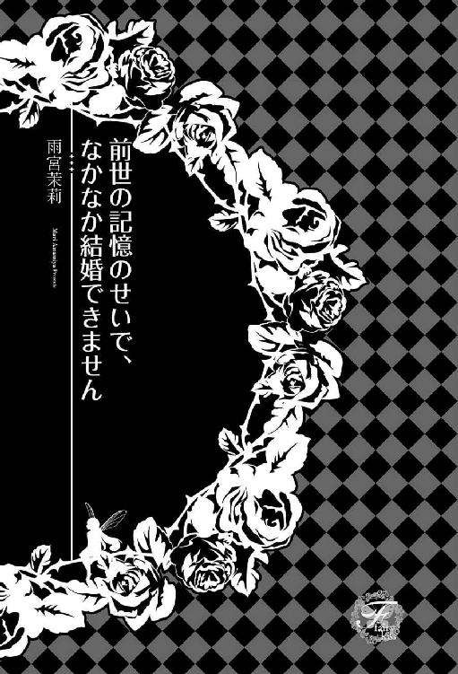
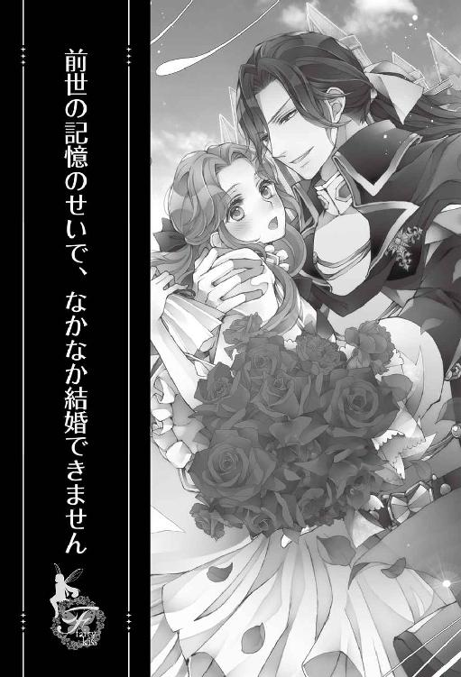
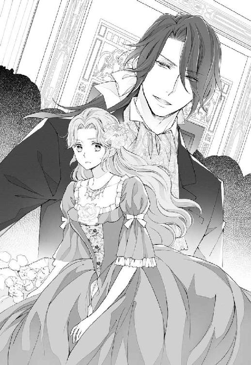
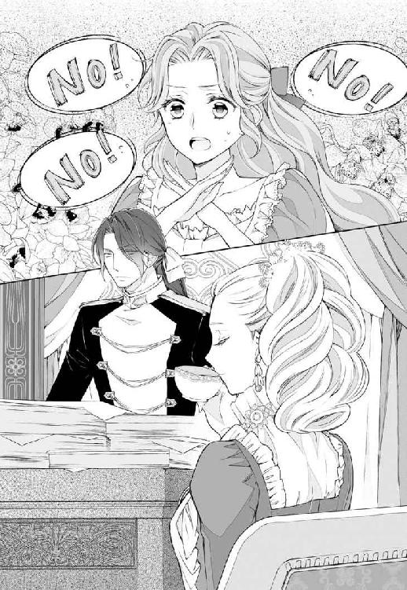
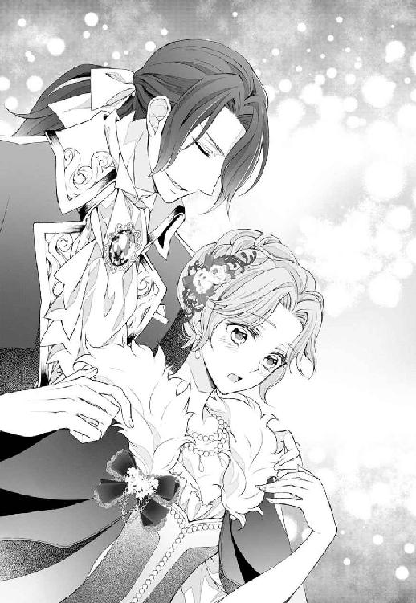
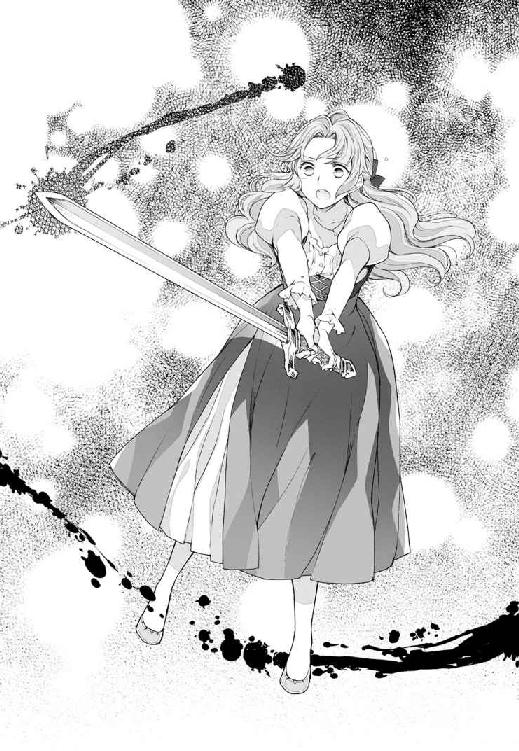
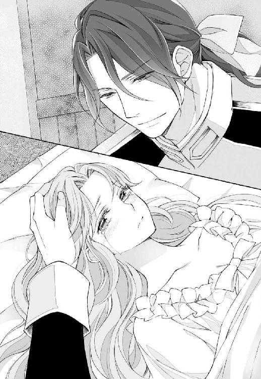
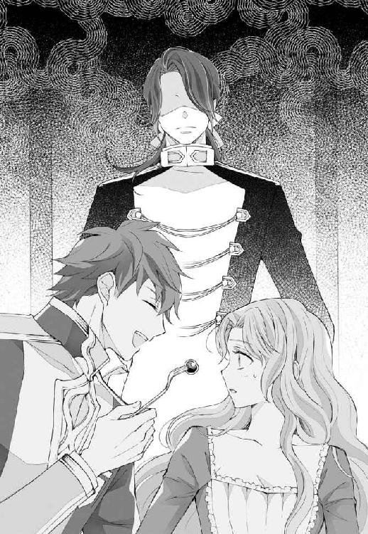
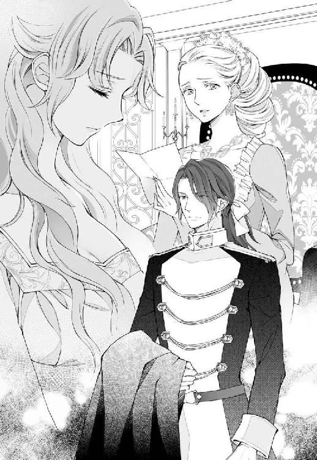
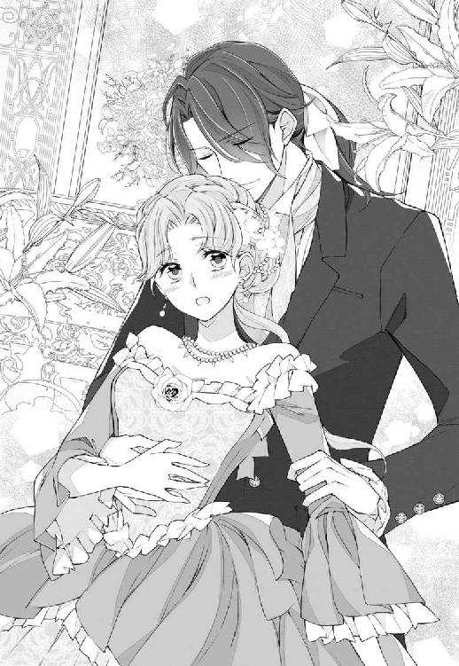

| 前世の記憶のせいで、なかなか結婚できません【SS付】【イラスト付】 (フェアリーキス) | |
| 雨宮茉莉 | |
| (2016) | |

この物語はフィクションであり、実在の人物・団体・事件等とは、いっさい関係ありません。
イラスト・Ｓｈａｂｏｎ

◇プロローグ◇
「奥さま、あとは私たちにお任せになって、どうかお休みになってくださいませ」
「......部屋に戻っても眠れそうにないもの。ここにいさせてちょうだい」
「しかしこのままでは奥さままでお倒れになってしまいます」
私の耳にそんなやり取りが飛び込んできた。聞き慣れた声のため、話しているのが母とハウスメイドたちであることはわかったものの、その言葉の意味までは理解できなかった。私が六才とまだ幼いということよりも、一番の理由は熱で上手く考えが纏まらないからだろう。
だって私に対する大人の評価はいつも「とても落ち着いた賢い子、きっと素敵なレディになるだろう」というものだから。
水遊びをするなどといった無茶をしたわけでもないのに、数日前に突然高熱が出た。医師の言うことを聞いて苦い薬を飲み、ずっとベッドで大人しくしているというのに、一向に良くなる気配がない。むしろだんだんと悪化しているように感じるのは気のせいではないだろう。
「お、かあ、さま？」
このまま死んでしまうのだろうか、そんな不安から手を伸ばして母を呼ぶ。とても小さな、かすれた声しか出なかったが、母はすぐに気がついて私が差し出した手を握り返してくれた。
「ティーナ!! 気がついたの!?」
「お嬢さま！」
「お嬢さまが目を覚まされたわ！ 早く医師を呼んできてちょうだい」
そんな声を聞きながら、私の意識は深い深い場所へ沈んでいく。自分では浮上することはもちろん、意識を保つことすら難しい。
「ティーナ！ クリスティアナ！」
「お嬢さ──、──しっかりなさ──── お嬢────」
◆◆◆
どのくらい経ったのだろう、次に気がついたとき私は真っ暗な場所で一人佇んでいた。
......私の身体はベッドにあり、母やメイドたちに見守られていたはず。それなのに今は夜着よりも粗末な木綿のワンピース姿で一人立ち尽くしている。
生成り色のストンとしたワンピースは、身体を一切締めつけることなくゆったりとした着心地で肌触りもいい。だがとてつもなくダサかった。
こんな服、着たこともないし、持っていた記憶もない。
『......私は死んでしまったのかしら？』
誰も答えてくれる者はなく、人の声どころか鳥も馬車も虫の声すら聞こえてこない。静けさに包まれた闇の世界。それが私の恐怖心を大きくする。
立派なレディとなるべく毎日努力して大人びた態度をとっているが、今は誰の目もない。たった一人だ。今なら本音を言っても誰にも怒られないだろう。口うるさい家庭教師のミス・テーラーはここにいないのだから。
『ミス・テーラーがいなくてせいせいするわ！ だって大っ嫌いなんだもの。「クリスティアナ！ はしたない。そのようなことしちゃいけません」っていつもいつも細かいんだから！』
ミス・テーラーというのは私の教育全般を請け負っている家庭教師だ。屋敷に住込みで私に行儀作法や刺繍、ダンス、乗馬といったものを教えてくれる。その彼女の口調を真似て文句を言う。
『それにいつも我慢してるけど、本当はお勉強の時間を減らしてもっと遊びたい......』
来る日も来る日も勉強や行儀作法の練習で自由がなかった。それも将来、嫁ぎ先で女主人として采配を振るうためと我慢してきたが、こんなに早く死んでしまうのなら、もっと遊んでおけば良かったと後悔した。
沈んだ気持ちで周りを見回すが、何も変わっていない。
伸ばした手の先すら見えそうにない深い闇に、恐怖が湧き起こる。真っ暗なそこから何かが出てきそうに思えてならない。
自分が死んでいるのなら、自分も幽霊の一員だ。怖がる必要はないのかもしれない。
だが死んだという実感がないだけに、恐怖心が消えることはなかった。
不安感に耐えられず泣き出してしまいそうになったとき、遠くに一筋の光を見つけた。私は誘蛾灯に誘われる虫のようにそちらに向かって歩き出す。
光の下に何があるのかなんてわからない。それでもこの暗闇から抜け出したかった。そして私の目に飛び込んできたのは、これまで見たこともないような変な世界だった。
金属の塊が我が物顔で道を凄い速さで駆け抜け、空を飛ぶ。人々は速足でせかせかと歩き、四角い箱に向かって独り言を話す者多数。どうにも気味の悪い世界だ。
『ここは......あの世なのかしら──きゃあああ』
突然目に見えない何かに引っ張られるように身体が動いた。
壁にぶつかる！ そう思って目をぎゅっと閉じたもの、ニュルンとした妙な感覚だけで痛くはない。恐る恐る目を開けると、物凄い速さで周りの景色が過ぎ去っていく。
『っひいい！』
なんとも情けない悲鳴が私の口から洩れた。
驚きと緊張からがちがちに固まっていた私だったが、数分も経てば慣れてきた。何しろ壁も建物もぶつかることなく『すり抜けて』いるため、痛くも痒くもない。それに私が動こうが暴れようが、地面から少し浮いた身体は落下することもない。つまり仮に私が生きているとしても命の危険はないのだ。
次第に冷静さを取り戻していった私は、先程自分が発した情けない悲鳴を思い出し赤面する余裕さえ出てきた。
......伯爵令嬢に相応しくない叫び声をあげてしまったのは、一生の不覚だわ。幸い誰にも私のことは見えていないみたいだけど......やっぱり私は死んだのかしら？
悶々と小さな頭を悩ませていると、永遠に続くかと思われた強引な移動は徐々に引っ張る力が弱くなり、やがて止まった。
『ここに何があるの？ ......女の人？』
止まった場所は家らしき建物。そこから一人の女性が顔を覗かせる。
「※※※※※※※」
謎の言葉と共にドアを出て、走り出す女性。とても地味な色の服を身に纏い、焦ったように妙な言葉を呟いたあと走り出した。
『まあ！ なんてはしたない恰好なの？』
女性のスカート丈はとても短い。翻ったスカートから完全に膝が見えているではないか！
『信じられないわ！ それにいくら慌てていようとも、あんな風に走るだなんて......』
貴族の女性たるもの、いつでも毅然とした姿であるべきだ。走る、怒る、大声で叫ぶなど以ての外──私はミス・テーラーからそう習っている。
『まあ、見るからに貴族ではなさそうだし......』
そう呟き、呆れながらも私はその女性について行く。ついて行きたくなくとも、この女性が動くと私も引っ張られてしまうのだから仕方ない。やはり私がここにいる原因がこの女性と関係あるのは間違いないようだ。
とはいえ一定の距離にいる限りは自由に動けるようで、彼女の前に出てみたり、横に並んだりするが、他の者たちと同じく私のことは見えていないようだ。
『それにしてもこの女性は誰なのかしら？ 私をクリスティアナ・オズボーン伯爵令嬢と知っての所業なのかしら？ そう思いませんこと？』
そう呟いて思い出す。そうだ、一人だった......いつもなら相槌を返してくれるハウスメイドたちや、貴族令嬢の取り巻きたちはいない。
......六才にしては大人びた口調や考え方であることはわかっている。でも仕方ない。だって私の父はオズボーン伯爵、母は公爵家の姫。三才より家庭教師がつき、淑女教育はもちろんのこと、国の歴史に近隣諸国の情勢、貴族名鑑を叩き込まれ育てられた。
目の前の彼女のように全力で走ったのはいつなのか、または走ったことなどあったのかさえ定かではない。
覚えた多くの貴族の顔の中に、目の前を歩く彼女の姿はおろか、似た者さえいない。
『......当然よね。こんなのっぺりとした顔』
彼女の目の前に浮かびながら、まじまじとその顔を観察する。
『年はいくつなのかしら？ わかりにくいわ。二十代と言われたらそう見えるし、十代と言われてもそう見えるもの。それに肌もなんだか黄色いわ......』
年齢のはっきりしない不思議な顔立ちの女性は、黒い髪に黒い瞳、象牙の肌を持っている。私の住まう国──オルコット王国には少なくともこのような姿の者は見かけない。
『やはりここは私の住んでいる国とは違うようね......』
そのまま名も知らぬ見知らぬ女性の傍にふわふわと浮かび続けること数ヶ月。次第にこの世界と目の前の彼女についても詳しくなっていった。
彼女の名前はミズノ・スミレ。五日連続で早朝から夜更けまでカイシャと呼ばれる建物で働く。服装や言動からして貴族階級ではないと思っていたが、やはり労働階級なのだろう。
そして二日休む。休みの日、スミレはキッチンに立つことが多い。初めは調理補助の仕事を掛け持ちしているのかと思ったが、そうではなく趣味らしい。わざわざ家から出てデンシャなるものに乗り、リョウリキョウシツと呼ばれる部屋で料理に勤しむ。
甘い匂いや見たこともない菓子につられ、私は幾度か手を伸ばしてみたが壁や建物と同様にすり抜けてしまい、一度も口に運ぶことは叶っていない......拷問のようだ。
『まさかこれが、地獄の責め苦なの!?』
伯爵令嬢であったこの私が、まさかこんなひもじい思いをするなんて......これまであまり食べることには興味がなかったけど、最近は正反対。無理だと言われるほどに欲しくなる。何不自由ない以前の生活が恨めしい......。
肉が硬い、魚は嫌い、菓子が甘すぎだの......文句ばかり言っていたからきっと罰が当たったのだ。それに以前は乗馬に刺繍、ピアノと色々な淑女教育を受けており、暇な人が羨ましいとさえ思っていたが、今の私には以前習っていたことが何一つできない......触れないのだから仕方ない。ならば見ることはできるのだから観劇でもしたいところだが、残念ながら私の行動範囲はスミレによって決定されるため、未だこの世界で経験したことはない。
そのため、近頃の私のもっぱらの趣味は、スミレを観察することだった。
こちらの世界に来た当初は言葉が理解できなかったため面白くもなんともなかったが、日常生活レベルの言葉を理解した今では、新しい世界に興味を覚えるようになって──。
「きゃあああああ!! って、びっくりしたあ......あはは」
スミレと出会った頃を懐かしんでいた私の隣から突然大きな悲鳴があがり、私はビクリと身体を跳ねさせた。
『ちょ、っと!! スミレの悲鳴に私は驚きましてよ！ まったく......人の寿命を三年は縮めておいて「あはは」じゃありませんことよ......って、もうすでに死んでいたんでしたわね』
隣でブツブツと文句を言う私を無視して、スミレはクッションを抱きかかえつつテレビ画面から視線を外さない。
というのも今日はキンヨウビの二十三時。明日から二日間仕事が休みであるスミレと私はホラー映画を仲良く二人で鑑賞中なのである。まあ私がスミレの一人のリラックスタイムに便乗しているだけなのだが......。
ときおり抱き締めたクッションを盾のように眼前に掲げつつも、チラチラとその陰から画面を窺うスミレを見て、私は苦笑を洩らす。
『そんな作り物ではなくて本物が横にいるとも知らないで......もし知ったら卒倒するんでしょうね』
なんてからかいながらも、今ではスミレのことをとても大切に思っている。
私が今ここでこうしていられるのは、スミレの存在があるからだろう。理由はわからないが、スミレがいなくなれば、きっと私もいなくなるのだろう。
今はもう自分の死を受け入れることができた。だが同時にここが死者の世界でないことも理解できた。死者の世界というには活気が溢れているのだ。
『ここはどこなのかしらね、それに私となんの関係が？ ......スミレには答えがわかるのかしら？』
私の問いには誰も答えてくれない。そうわかっていても、独り言をやめることはできなかった。映画を観終えたスミレは、当然私の問いに答えることなく大きな欠伸をしながらベッドに入る。......が、先程の映画の影響だろうか？ 電気がついたままである。
『私にも、覚えがあるわ......五才でしたけど！ ......おやすみなさい、スミレ』
私はそのまま宙に浮かんで考え続ける。
死んでしまったのだろう私には睡眠は必要ではない。食事も排泄も何も必要としない。だからひたすら考え続ける。答えの出ない問題を......。
『スミレ!! 早く起きなさいよ！ さっきからメザマシドケイが鳴りっぱなしでしてよ！』
この休みの間、ずっとゴロゴロしていたスミレの目覚めは頗る悪いようだ。きっと怠け癖がついたのだろう。
『はあ......だから夕べあれほど早く寝なさいと言いましたのに！』
まるで母親のようなことを言っているな、と私も思っている。
だがスミレは二十四才だというのに頼りないのだ。はっきり言ってしまうと、どんくさいのだ。間違いなくオズボーン邸のメイドとしてはやっていけないだろう。初日にクビを言い渡されるレベルだ。そのため放っておけないのである。
『......オズボーン邸、懐かしいわ。お母さまにお父さま、どうしていらっしゃるのかしら？』
つい元の世界のことを思い出し、しんみりとする。
だが目の前でスミレがメザマシドケイを叩いて止めたあと、再度ベッドに潜り込んだのを見た私は、しんみりはどこへやら、スミレをとっちめにそれこそ文字通り飛んで行くのだった。
私はこんな不思議な生活に満足し始めていた。
今思うと、昔の私はまったく楽しくなかった。生まれたときから施された教育で、当時の私は疑問どころか自分のことをなんてよくできた子供なんだろうと自慢にさえ思っていた。
だが今スミレと生活を共にして思う。私は恵まれてはいたが、自由ではなかったと......。
◆◆◆
なんの変化もないまま月日だけが流れ、スミレとの生活も随分と長くなった。こちらへ来た当時二十四才だったスミレも、明日で三十才になる。本人は「ついに三十路かぁ......」なんて愚痴をこぼしていたが、誕生日に違いはない。めでたいことだ。
私もこちらの世界に随分と詳しくなった。オルコット王国で暮らしていた年月と同等......むしろ生まれたばかりの自我のない赤子時代を含めたあちらの世界よりも、日本暮らしの密度のほうが濃いのだから、気分はすでに日本人である。
その代償として私が失ってしまったものが一つ──自分の姿だ。もう何年も自分の姿を見ていない。鏡にも窓にも水面にすら映らない自分の姿。どんな顔をしていたのか、思い出せなくなってしまった。今となってはスミレが自分自身のようにも感じ始めている。
町中に赤色と緑色と光の海が溢れる寒い季節がやって来た。
スミレは明日の誕生日を恋人と過ごすようで、今日は友人たちに前祝いをしてもらっている。お酒を飲む店はいつも賑やかだが、この季節になると普段の倍以上に騒々しい。スミレ曰く忘年会シーズンらしい。
『もう！ スミレったら飲みすぎだって......明日、腫れた目で彼氏とデートするつもりなのかしら？』
友だちに祝われ嬉しそうに飲むスミレを見ながら、自分はこういったこと一度もなかったなあ、と達観した思いで店内を見回す。
『ん？ ......知り合いかしら？』
カウンターで飲む一人の青年が、じっとスミレたちのテーブルを見つめているのに気がついた。
『今日は女の子同士で飲むって言ってたし、参加を遠慮してるのかもね。意外にモテるじゃない、隅に置けないわねスミレ』
そしてぎりぎり終電に乗り込んだスミレにくっついて移動する。車内は同じように酒臭い人たちで溢れていた。
『うう......臭い......』
少しでも空気がマシなところに移動しようと車内をフワフワと飛び回る。そのとき、隣の車両からこちらを見ている先程の青年を見つけた。
『......知り合いなら声を掛けたらいいのに？ もう女子会は終わってるんだし......って、知り合いじゃないのかしら？ 一目惚れかしら？』
こちらの世界に慣れたとはいえ、まだ男女関係には疎い。享年六才である私には少々難しい駆け引きである。そのため深く考えることはなく、スミレの下へと戻る。
「うん、わかってるよー大丈夫！ 明日でしょ？ 起きれるから心配しないでよ。うん、じゃあ明日ね。楽しみにしてる。バイバイおやすみー」
電車を降りた帰り道、ずっと電話をしていたスミレ。相手は明日のデート相手である彼氏だ。自宅であるワンルームマンションの前に着いてからもしばらくエントランスに入ることなく、近くの植え込みに腰掛けて話をしていたがようやく終わったらしい。
「寒いー！ おっふろ、お風呂っと」
そんな独り言を言いながらスミレはマンションに入って行く。
......エレベーターで電波が切れてしまうのを嫌がってずっと外で話していたのだろう。
一階に待機していたエレベーターに一緒に乗り込む。私は飛んで行くこともできるが、この酔っ払いから目を離すことが躊躇われたのだ。なんせドジなのである。酔っ払っているからいつもに輪をかけてどんくさい。このままエレベーターで寝たり、違う人の家に突撃しそうな気がしてならない。
『といっても、私がいてもなんの役にも立たないんだけどね』
スミレと話ができたら、もっと楽しいんだろうなあ......そんなことを思いつつ彼女を見ると、スミレはエレベーターの操作パネルの横の壁にもたれて携帯でメールをしているようだ。きっと友だちに今日のお礼か、彼氏にラブメールを送っているのだろう。
ドアが閉まりかけたそのとき、スッと手が差し込まれてドアが開く。同じような酔っ払いだろうと思ったが、開いたドアの先にいたのは居酒屋と電車で見かけたあの青年だった。スミレの横を通り過ぎ、エレベーターの一番奥に立つ。青年はひどく思いつめた顔をしていた。目が異様に血走っており、低い声で何かを呟いている。
『......同じマンションだったの？』
だがスミレは彼氏と長い時間、外で電話をしていたためこの時間になったのだ。青年もどこかで電話を......？
同じ店で飲食し、同じ電車の同じ車両に乗り、同じマンションに住み、同じ時間外で時間を潰していた？ 重なりすぎる偶然に、私は嫌な気しかしなかった。
『それに、さっきから何を言ってるのかしら？』
私は相手に見えていないのをいいことに、ずっとボソボソと呟き続ける青年との距離を詰めた。
「裏切り者......裏切り者......俺がいるのに違う男と......殺す......殺す...お前も相手の男も殺す......裏切り者......」
同じ内容をずっと繰り返し呟いている青年の言葉を聞いて、私は全身に鳥肌が立った。
『まさかスミレのことじゃないわよね？』
スミレを見るがまったく気にした素振りはない。ずっと携帯電話をいじっており、この青年の存在に気がついているのかすら怪しい。
それに対して、青年の目は真っ直ぐにスミレを捕らえていた。その視線の強さに私は叫んだ。
『スミレ！ やばいよ。降りたほうがいいよ！ スミレ！』
必死で声を掛けるが、やはり奇跡など起きないのかスミレは携帯をいじったままだ。そしてエレベーターの扉が閉められた。
エレベーターは、スミレの降りる八階のボタンしか押されていない。
私の心臓は死んでいるだろうに無駄に早い律動を繰り返す。
八階に到着したあと、先に青年が降りた。
『あれ？ 私の気のせい──』
じゃない!! 青年はエレベーターホールの中で靴紐を結ぶかのようにしゃがみ込んでいるが、視線は靴紐でなく、明らかにスミレを追っている。
そして何食わぬ顔でエレベーターを降りたスミレの二メートルほど後ろを歩く青年。
気に留めることなく、自宅の鍵を差し込みドアを開けるスミレ。
『スミレ！ スミレ!!』
いくら叫んでも届かない。私は絶望しか感じなかった。
それでも諦めずにスミレに全力で体当たりしたとき、妙なことが起こった。
私の指先に金属の冷たい感触があったのだ。
「え......？」
だがそのあとは一瞬だった。お酒の影響なのか、考えを纏めるのが難しい。慣れない揺れるような感覚に戸惑う間もなく、私の身体は押し倒された。そして首に冷たい感触......。
私は自分の身体に馬乗りになる青年を、信じられない思いで見つめた。
──思い出した。私は瑞野菫。日本で会社員として働いていたが、三十才の誕生日にストーカーに殺されたのだ。
そして私はオルコット王国のクリスティアナ・オズボーン伯爵令嬢へと転生した。
つまり私は自分の前世の暮らしを疑似体験していたということか......。
「......っなら！ これも、本当は噓なんでしょ!!」
私──クリスティアナが生まれているのなら、菫はすでに死んでいないとおかしい。同時に存在することはできないはずだ。
叫びながら最後の力を振り絞り、身体の上の男を押す。すると急に身体の上の重みが消え、視界が弾けたように強く光り、眩しくて目を開けていられなくなった。
「っ！」
あまりの眩しさに手で顔を隠す。
「お、お嬢さま？」
「は？」
「お嬢さま!!」
「ティーナ！」
「え......？」
視界を遮るように当てていた手をどけ薄目を開けると、私を取り囲むようにお仕着せ姿のメイドたちと、やつれてしまった母の姿が目に映る。
「お、かあ、さま？」
「ティーナ！ 目が覚めたのね！」
嬉しそうに涙を浮かべながら、私の手を握る母の手の温もりを感じる。
「私、生きて......？」
「もちろんでございますよ！」
私の問いに、すぐさま答えてくれるメイド。
「待って、今は何年何月なの？」
もし私が前世を疑似体験していた期間中眠りこけていたのなら、十才を超えているのではないだろうか......急に不安になる。
「お嬢さま、どうか落ち着いてくださいませ。本日はオルコット歴八五四年雪の月の十日でございます。お嬢さまがお倒れになられてから、六日後にございます」
「六......日？」
たったそれだけ？ 確か五日目までは覚えているから、一日しか経っていないってこと？ 私はペタペタと自分の身体を触ってみる。ペタンコの胸、小さな手足、少し出たお腹......まさしく幼児体型というものだ。って、幼児だから当然なんだけど......。
「どうかなされたんですか？ 痛いところでもおありですか？」
「か、鏡ちょうだい！」
私の慌てた様子に、メイドの一人が急いで部屋に置いてある手鏡を持って来る。
恐る恐る鏡を覗くとそこには、ピンクゴールドの巻き髪に包まれた卵型の顔。瞳は新緑のような瑞々しい緑色で、まつ毛はマッチ棒どころか鉛筆載るんじゃない？ というほど長い。驚きのために半開きになったままの口は、口紅を塗っていないのに赤く色づき、頰は熱のためか少々火照って桃色に色づいている。
「濃っ!!」
数年ぶりに見た自分の顔の感想はそれだった。何年も薄ーいのっぺりとした顔を見て、それらに囲まれていたのだから仕方ないだろう。
「お、お嬢さま？」
心配そうに私に声を掛けてくるメイドを無視して、鏡をじっくりと見つめる。
「そっか......そっかあ！ 私ってこんな顔だったんだ！ 何か思い出してきたかも......でも顔の美醜以前に、鏡に映るって最高!! 生きてるって最高!!」
ひゃほう！ とばかりに手鏡を振りかざす。
「お、お嬢さま？」
改めて掛けられた声に、ようやく私は視線を向ける。皆少し引き気味であるが、それにめげずに私に声を掛け続けたのはこの屋敷のメイド長だ。
「へえ......こうして見ると、みんな顔が濃いわね！」
私を囲んでいるメイドやお母さまを見てしみじみと感想を言うと、明らかに目が覚めたときとは異なるざわめきが起こったが、私は気にすることなくもう一度手元の鏡をじっくりと眺めたのだった。
◇第一章 自由を取るか、体裁を取るか◇
前世の自分を思い出してから早二十年......厳密に言えば十九年と七ヶ月だけど。
前世を疑似体験してからというもの、私はこちらの世界では変人扱いだ。とはいえ一度味わってしまった自由を失うということは拷問に等しいので、望むところだ。
菫の生まれ育った国では、身分に貴賤がなく能力に応じて職を選べ、努力と能力によって活躍できた。更には男女間の性差が少なく、女性にも様々な権利が認められ自分の思うがままに生きられた。
そんな人生を見聞きしたあとに、政略結婚の駒として見知らぬ相手に嫁ぎ、跡継ぎを産むことを使命とし、外で羽を伸ばす夫の帰りを粛々と家で待つ......そんな暮らしに耐えられると思う？ 想像しただけで身震いが起こる。絶対無理だ。
その結果どうなったかと言いますと──わたくし、立派な行き遅れでございます！
病気以降、随分と性格の変わってしまった私を、初めの内は両親もとても心配してくれていたが、今では我慢の限界のようだ。特に母からは毎日のように小言を言われている。
「ティーナ！ 何度も言っているでしょう！ 大股で歩くのはおやめなさい！ それに自分で厨房に立つなんて以っての外！ そのようなことをしているから先方から断られるのですよ！」
どうやら昨日こっそりと家の料理人を脅し......頼み込んで厨房を使わせてもらったのがバレたのだろう。私は前世の影響でお菓子作りが趣味なのである。
菫の世界なら女子力の高い素敵な趣味だと褒めてもらえるに違いないが、ここでは......いや、この国の貴族女性にとっては忌むべきものらしい。
刺繍や乗馬は歓迎するのに、料理は駄目ってなんか納得できないんだよねえ。
「お母さま......ごきげんよう」
明らかに機嫌の悪い母を前に、少しでも母の機嫌が良くなればと思い、レディらしい挨拶をするが、冷たく一瞥されてしまった。
さすがは母親、こんなことでは騙されてくれないらしい。
「本当ならばダンフォード侯爵家かグリム伯爵家に嫁いで、すでに子の一人や二人生んでいるはずのあなたが今もこうしてここにいるのは、その性格のためだと何回言えばわかるのです！」
今母の口から名のあげられた家は、私の元婚約者たちだ。他にもきっとあと四人か五人はいたと思うが、口にはしない。母の怒りを増幅させるだけだから。
「お母さま、きっとあの方たちとはご縁がなかったのよ」
「......このままどなたとも縁がなかったと言って、まさかどこにも嫁がないつもりじゃあないでしょうね？」
母の言葉に一瞬私はどきりとした。
だって、頭の固いこの世界の男性に嫁いで豪華とはいえ籠の中の鳥になるくらいなら、オズボーン伯爵家を継いで女伯爵となったほうが自由に生きていけるのだ。幸い家には十分な財産もある。
「でもお母さま、私が嫁げばオズボーン伯爵位が──」
「嫁いでもあなたがオズボーン女伯爵を名乗ればいいのです！ そしてそれぞれの爵位を継ぐために男児を最低二人産みさえすれば何も問題ありません！ まったく、それを理由にしないでちょうだい。あなたの魂胆は丸わかりですからね」
どうやら母に噓は通用しないようだ。
「......あなたに好いている相手がいて、その者の身分が低いというような話もないのでしょう？」
「そんな恋愛小説みたいなこと、あるわけないじゃん」
「言葉遣い‼」
「はいっ！」
お母さまはいつもはすました美貌を怒りにゆがめ、まるで鬼のようだ......これはまずい。
「ごめんなさい」
「......ティーナ、あなた少し家を出なさい」
「え？」
まさか予想もしていなかった言葉に、口をぽかんと開ける。
「......ティーナ、口を馬鹿みたいに開けるのなら少しは隠しなさい。その手に持っている扇は飾りじゃないのよ」
「え、あ......ほほほ。ごめんなさいお母さま、少し驚いてしまって......」
これまでレディとして振る舞えるようになるまでは、恥ずかしいからあまり出歩いてくれるなという考えだっただけに、本当に驚いたのだ。
「家を、出るの？」
ここで私の脳裏を過ったのは、城下での楽しい一人暮らしだ。
「......お兄さまのところで行儀見習いをしてきなさい」
「行儀見習い!?」
行儀見習いといえば、普通十代半ばの少女がするものだ。間違っても私のような二十代半ばの女性がするものではない。
「他のお家にはそんなこと恥ずかしくて頼めないけれど、お兄さまならいいわ......あなたのこともよく知っているし、今更隠し立てすることなどないものね」
「お母さまのお兄さまってアンブローズ公爵......よね？」
母は軽く頷いてみせるが、私の自由な城下ライフはガラガラと音を立てて崩れていった。
「お、お父さまが反対するんじゃないかしら？」
「お父さまとお兄さま、それに公爵夫人にはすでに話は通してあるわ。荷物も今頃メイドたちが詰めてくれているはずよ」
「そ、そんな......」
親戚とはいえ格上の公爵家でこのような振る舞いはできないに決まっている。私は堅苦しい生活を想像して、がっくりとうなだれた。
「ティーナあなたのためなのよ。でもどうしても嫌と言うなら......」
「なら？」
私は期待に目を輝かせた。
「修道院にでも入りましょうか？」
「......伯父さまのお屋敷で、立派なレディになってきます」
「はい、いってらっしゃい」
首を傾げてにっこり笑った母は、とても美しかった。
◆◆◆
「ま、下手にお母さまに逆らって、修道院とか規則でがんじがらめの王城に行かされるよりはマシよね......」
あれから十日も経たぬ内に、伯父さまの治めるアンブローズ地方へと向かうことになった。
といってもアンブローズ地方は王都にとても近い。オズボーン伯爵領は豊かな地であるが、王都から離れているため私はほとんど行ったことがなかった。
社交シーズンになると、多くの貴族が王都に所持しているタウンハウスで過ごす中、それは異例とも言えた。
通常ならば、どれだけ領地が遠方であっても、王都にタウンハウスを持っていなくてもシーズンの間はなんとか王都に集まろうとする。
事実私も社交界デビューしたての頃に、参加したのを覚えている。
眩い光とむせ返るような香水の香り、それに色鮮やかなドレス。人は皆笑い、飲み、食べ、踊り、大いに楽しんでいるかに見えた。表面上は......。
水面下では、自分の娘を少しでも条件の良い貴族へ売り込む母親と、一夜の恋を楽しむ男女、そして他人の噂話で盛り上がる者たちばかりだった。
これからずっとそれが続くのかとうんざりした気持ちだったが、私が恰好の噂の的となってしまったことで長くは続かなかった。
そもそも病気で寝込んで以来、随分と性格が変わったと、デビュー前から好奇の視線に晒されていた。しかしオズボーン伯爵家、そして母の生家であるアンブローズ公爵家というバックボーンのお陰で守られていた。
にもかかわらず、社交界で私自身がその噂を裏づけるような出来事をドンドンばらまいていくのだから、火の消しようもなかったのだろう。
母によってパーティーは強制的に欠席。結果、私は社交界デビュー後、数回しか王都に行ったことがない田舎者に成り果てた。
デビューが確か十一才だったので、かれこれ十年以上王都に行っていないことになる。だから私にとってこの旅は楽しみでもあった。
その内こっそりと公爵家を抜け出して、王都や王城に行ってみようとたくらんでいる。
「それに......伯父さまって、なんだかんだ言っても優しいのよねー。本当にお母さまと血が繫がっているのかしら？」
最近こそ来ていなかったが、私は小さい頃何度も両親に連れられ、伯父の家に遊びに来ていた。確か従兄が一人いたはずだ。子供のときに一緒に遊んでもらった記憶があるが、私が社交界にデビューする頃にはすでに成人していたため、今は三十代だろう。
「従兄の名前、なんだったかなあ......」
この国の人たちの顔を濃いという印象で纏めがちな私ですら、従兄は『カッコイイ』と思えるイケメンだったはず。
「伯父さまと伯母さまによく似てた気がするけど......」
そんなことを一人で言っていると、御者台から控えめに声が掛かる。
「お嬢さま、そろそろアンブローズ公爵邸に到着いたします」
「そう、ありがとう」
まもなく馬車が止まり、馬車の扉が開かれた。
「クリスティアナ！ よく来たね」
ずらりと並んだ使用人たちの前に、久しぶりに見る伯父と伯母の姿があった。わざわざ出迎えに来てくれたのだろう。
「伯父さま、伯母さま！ ご無沙汰いたしております」
久しぶりに見る伯父は、少し年を取っているものの相変わらずの色男ぶりで、伯母も大層美しい。二人は嬉しそうに私を抱き締めたあと、それぞれが片方ずつ私の手を取り、屋敷の中へと引っ張っていく。
「疲れただろう、ほらほら中にお入り」
「長旅でろくなものも食べていないでしょう？ たくさんごちそうを用意してあるのよ」
荷物は使用人に任せ、私は伯父と伯母に腕を取られたまま並んで屋敷に入る。玄関広間を抜け、広い室内を歩く。
子供の頃には何度も来たことがあるが、大人になって改めて見ると本当に大きく豪華なお屋敷だ。廊下にはセンス良く絵が飾られ、いくつもの燭台が置かれている。たくさんの蠟燭が照らす明るい室内には塵一つなく、隅々まで手入れが行き届いている。きっと使用人の質がいいのだろう。
ここが親戚の家で本当に良かった。本当に知らない人のお屋敷へ行儀見習いとして来ていたのなら、かなり私は苦労したに違いない。
その後、食堂で伯父夫婦と話をしながら美味しい食事を楽しんだあと、私の部屋となる客室へ案内してもらう。
「ここをお使いくださいませ」
案内された部屋は、日当たりのいい二間続きの客間で、私はなんだか見覚えがある気がした。
「ここって......なんでだろう、見たことある気がするんだけど......」
考え込むが、それ以上は思い出せない。すると部屋を案内してくれていた年配のメイドが教えてくれる。
「こちらはお嬢さまのお部屋でございます」
「私の部屋？」
「はい。もう十年以上前になりますが、よくこちらにはお越しになられていたのですよ。お嬢さまが来られると、お屋敷がパッと明るくなったものです」
......要は賑やかだったと言いたいのだろう。懐かしそうにするメイドに悪意はないのはわかるが、未だにそのままの性格だからここに送られてきたんだ！ などと言えるわけがない。
「失礼いたしました......つい懐かしくて......お嬢さまのお荷物はすでにクロークに入れております。何かございましたらなんなりとお申しつけくださいませ」
「いえ、いいのよ」
おそらく彼女の年齢からして、ここで働いて長いのだろう。もしかしたら私の母が住んでいた頃からいるのかもしれないし、それなら懐かしくなるのも当然だ。
「私はお湯の支度をいたしますが、その間にお茶をお持ちいたしましょうか？」
「湯の支度だけでいいわ」
つい先程食事をして、お茶を飲んだばかりなので遠慮する。
「かしこまりました」
メイドが部屋を出ようとしたので、私はその後ろ姿に声を掛ける。
「ありがとう」
メイドは一瞬驚いた表情を見せたものの、すぐに何事もなかったかのように下がっていった。さすがは公爵家のベテラン使用人だ。
「......ついやっちゃったわ」
私は大きなため息を吐いた。
「お母さまに知れたら怒られるかしら？」
使用人にわざわざ礼を言う必要はないと、両親や子供の頃私の家庭教師であったミス・テーラーから何度も聞かされてきたがどうも馴染めない。だって無視される辛さは私が一番誰よりも知っている。私なんて前世を疑似体験している間、人だけでなく全てに自分の存在を無視されていたのだ。
「まあきっとバレないわね。ここのメイドたちは、口が固そうだもの」
そうでもなきゃ、公爵家のメイドなど務まらないだろう。
「それに久しぶりにお会いしたけど、相変わらず伯父さまも伯母さまも優しそうな方で良かったわ。ここにいる間は猫を被って淑女らしく振る舞えば、きっとすぐに家に戻れるわ。でも......」
窓に映る自分の姿をじっと見つめる。長い髪を編み上げ、ドレス姿の私。
「こうやって表面を取り繕って今を凌いだところで、なんの解決にもならないのよね。ここにいる間に、今後どうするかを考えないとね......」
そう呟きながら、私は編み上げた髪を手でぐしゃりと崩しながらソファーに寝転ぶのだった。
猫を被り続けること十五日......そろそろ疲れてきたが、その成果は抜群だった。母から私の淑女教育を頼まれたらしい伯母さまだったが、レッスンの度に花丸をくれる。
「私が教えられることなんて何もないわ。どこに出しても恥ずかしくない立派なレディよ。本当に世間の噂はあてにならないものね」
私は伯母の言葉を否定せず、にっこりと微笑んでおくだけに留めた。噓を吐かずに丸く収めるには、微笑むのが一番だ。
伯母の言う私の噂とは、『料理をする』というものや、『川で泳ぐ』というもの、それに『気絶したことがない』というものや、『大股で歩く』やら『大食い』やら......。
一見どの噂もたいしたことないように思えるが、全てその前に『貴族のくせに』がつくと、途端に大問題となるのだから困ったものだ。
......まあ一言で表すなら、私は『変人』として名高く、そしてその噂は事実であった。
確かに夏の暑い日には、川で泳ぎましたとも！ だってここの川遊びは、小舟に乗って水面をパシャパシャと触るだけ......猛烈に暑いです。目の前に冷たく透き通った川があるのに、触れるのは指先だけって、なんの嫌がらせですか？ それとも貴族の皆さまはドＭなんでしょうか？ これは新しい苦行の一つですか？
それに大股で歩くといっても、菫の世界の女性たちの歩くスピードに比べたらずっと遅い。こちらの世界の女性はコルセットでギュウギュウに腰と胸を締め上げているから、息が上がりやすい。そのため動作がゆったりとしているし、食事も満足に取れず、更にはちょっとしたことで気を失うのだ。
そもそも私のコルセット嫌いにはちゃんとした理由がある！ 私は数年間なんの締めつけもない姿でフワフワ宙を彷徨う生活をしていたのだ！ それにあちらの世界では過度な締めつけは健康に被害が出るとすでに実証済みだった。ここの誰も知らなくとも、私だけは知っている！
というわけで私はコルセットをほとんどつけない。......とはいえ、やむを得ない状況で装着するときもある。
ただしメイドが力を振り絞って締め上げようとする度に止め、快適な締めつけ具合を維持している。そのため食事も美味しくいただけていたというわけだ。
しかしそのような振る舞いを公爵家でするわけにもいかず、現在は少し窮屈である。だが期限つきの我慢だと思えば耐えられる......はず。
なんて自分を励ましながら、締めつけられる感覚に耐えていると、伯母が突然話し始めた。
「そうだわ！ 内緒にしていたんだけど、今晩舞踏会を開くわよ！ クリスティアナの歓迎パーティーよ！ あなたと同じお年頃の友だちもたくさん招待しているから、楽しみにしていてちょうだいね」
その言葉に一瞬引き攣りそうになったが、慌てて嬉しそうに言う。
「まあ！ 私のためにわざわざ舞踏会を!? 伯母さまありがとうございます！」
「喜んでくれて良かったわ！ 驚かそうと思って黙っていたの。それに仕事ばかりでろくに屋敷にも帰って来ない馬鹿息子も今日だけは来るように伝えてあるの！ あなたたち、仲が良かったでしょ？」
伯母は嬉しそうに言うが、私は冷や汗が止まらない。
「そ、そうですよね。全然従兄の姿が見えないから、どうしたのかしらと思っていたんです」
その従兄の名前すら思い出せない。伯母の口ぶりからして、きっとこの屋敷に住んでいるのだと思うけど......。
「そうなのよ！ せっかくクリスティアナが来てるっていうのに、ルーファスったら、仕事仕事で顔を見せないんだから！」
「ルーファス......はお仕事が忙しいんですか？」
さも知ってましたとばかりに名前を言いながら更なる情報更新を試みる。仕事ってなんだ？ 何をしてるんだ？ 伯父の手伝いか？
「ずっと魔術庁にある自分の執務室にこもりきりよ！ 屋敷にも全然寄りつかないし、いつになったら可愛いお嫁さんを紹介してくれるのかしら？」
......耳が痛い。結婚しなくてすみません。どうやら私の従兄も独り身らしい......仲間なのだろうか？
「来る縁談を片っ端から断って、決まったお相手がいるのかしらと思ったら、あの子ったらなんと言ったと思う!?」
違う、仲間でなかった。むしろ真逆？
そんな信じていた相手に裏切られた感に私が打ちのめされている間に、伯母は答えを言い始めた。どうやら私の返答は必要なかったらしい。
「『結婚相手くらい自分で探しますので、今は仕事に集中したいので邪魔をしないでください』って言ったのよ！ 邪魔ですって！ 酷いと思わなくて？」
「はあ......」
「だから今回言ってやったの。クリスティアナの歓迎パーティーに顔を出さなければ、執務室に婚約者候補を十人くらい送り込みますからねって」
伯母の満足げな表情を見て、私はこの伯母なら本当にやるだろうなと確信した。
「さあ、舞踏会まであまり時間がないわよ。さあさあ皆、クリスティアナの支度を手伝ってちょうだい！」
伯母の声にササッとメイドたちが私の傍に来る。
「ではお嬢さま、早速お支度をいたしましょうか？」
「ありがとうございます伯母さま！ 何を着ようかしら、楽しみだわ」
なんて言いながら、私は久しぶりに味わう長い一日を覚悟したのだった。
「はあ......」
舞踏会が始まったのは、日没後。今は九時を少し回ったくらいだが、私はすでに疲れ切っていた。なぜなら公爵家のメイドたちに着替えを手伝ってもらったのだが、コルセットをギュウギュウにつけられてしまったからだ。
普段は私が止めると、途中で締めつける手を緩めてくれるメイドたちだが、今日は違った。おそらく私の人生で一番細いウエストだろう。
「死にそう......今なら初めての気絶もできそうな気分だわ。噂を一つ返上できるわね......」
コルセットのせいで息は浅く早い上に、満足に食事も取れなかった。せっかく伯母が開始前に少し食べておきなさいと軽食を用意してくれたのに、椅子に座った状態だとコルセットが更に苦しく、ほとんど手つかずのまま皿を返した。......悔しい。お腹すいた。
「絶対にみんなドＭよ。それしか考えられないわ」
こんなに苦しくては、満足に立っていることさえ難しい。むしろこんな状態でよくもまああんなにもクルクルと踊れるものだと感心する。
大広間の中央で、私よりも年下の綺麗な女性がいかにもな雰囲気の貴族のお坊ちゃんと楽しそうに踊っているのを、私は尊敬の眼差しで見つめた。
そのときダンス相手といい雰囲気だったご令嬢が、突如相手を押しのけるようにして動いた。
「ん？ ......何かしら？ まさか火事じゃないわよね？」
周りを見れば、思い思いに過ごしていた他のご令嬢たちの多くが、流れるように同じ方向に動いている。
「あっちの方角はドアよね？ やっぱり火事なのかしら？」
避難しているのかと思いきやご令嬢たちは帰る様子はない。ドアの周りに群がっている。
わけがわからず首を傾げていると、お嬢さま方の隙間から、頭一つ抜け出た人物が見えた。
「ああ！ なるほど！ そういうことか！」
ようやく女性の群れの理由がわかって、私は一人頷く。垣間見えた人物は、遠目にもわかるくらいのイケメンだったのだ。
高い鼻梁に涼しげな目元、薄い唇は少し冷たい感じはするが、女性に囲まれても愛想笑い一つしていないクールな態度によく似合っている。
うなじ辺りで適当に束ねただけの髪さえ、完璧にセットされているようだった。
その隣に並んでいるもう一人も、恰好いい。ただし表情は真逆であった。
一人が無表情......いやむしろしかめっ面であるのに対し、こちらは笑顔である。とはいえ愛想笑いといったところか。
口元は楽しそうに弧を描いているものの、目は笑っていない。
私は二人を取り囲んでいる皆がそれに気がついていないのが不思議だった。
だがすぐにその謎は解けた。彼は周りの女性たちと会話をしている。そしてその度に女性たちから黄色い声があがっているから、おそらくリップサービスでもしているのだろう。
私にはその話の内容が聞こえないから、彼の噓くさい笑顔に気がついたのかもしれない。
......まあ一番の理由は、私がここの人たちよりも表情の乏しい菫たちと過ごしていたからだろう。
「まあ内面はどうであれ、確かに見た目は二人とも超イケメンだわ。まるでお嬢さまホイホイね......」
そう呟きながら私は一人ため息を吐く。
私が結婚できな──しない理由の一つとして、この世界と私の美感の相違があるのだ。それは自我の芽生え始める幼少期から数年間を日本という国で過ごしたことと関係している。
私には、この世界の人たちの顔がどうしても濃く感じてしまうのだ。そのため恋愛対象というよりは、鑑賞対象となってしまう。
とはいえこの二人に関しては、私でさえ思わず二度見するほどのイケメンだった。
「でもそれよりも気になるのは......」
さっきまで大広間中央で踊っていたお坊ちゃまの恋の行方だ。彼の瞳はお嬢さまに恋していたが......その相手は今、イケメンに愛想を振りまいている。
「顔じゃあ勝ち目はないなあ......それに多分身分も......」
イケメン二人は、公爵家主催の舞踏会に遅れて来た。ということはそれなりの家柄だろう。
砂糖に群がる蟻のようにお嬢さま方にがっちり周りを固められたイケメン二人組だったが、とても嬉しそうには見えない。
......まあそこが本当のイケメンたる所以なんだろうけど。
「って、今なら部屋にこっそり戻ってもバレない──」
グウウウウウウウ......。
「でも戻っても家と違って、部屋にはなんにも置いてないし......食べるものを調達してこなくちゃ」
伯爵邸の自室には自分で作った日持ちするお菓子がストックされているが、公爵邸では猫を被り料理はしていないため何もない。
「......あのイケメンのお陰で皆の気があちらに向いている今ならいける！」
女性は年齢を問わずイケメンに釘付けだ。男性は年齢によって態度はまちまちのようである。若い者は忌々しそうにイケメンたちを見据え、年配者は『自分の若い頃は』などといった少し誇張しているであろう昔話に花を咲かせている。
私はできる限り気配を殺し、ススッと壁際に設置されたテーブルに移動する。そこには軽くつまめるようにと計算された食べ物が置かれているのだ。
「お皿を持って部屋を出ると目立つわよね」
いくら皆の視線が逸れているとはいえ、目を引くことは避けたい。
「でも手に持つだけだったら数が限られるし......」
手のひらに隠し持てる量となると少ない。私のお腹はそれでは満足しそうになかった。
「何かいい方法は......あ！ ハンカチなら包めば量もそれなりに入るし、中身も見えないわ」
我ながらいいことを思いついたものだと、ウキウキ気分でハンカチを取り出す。レース編みの、ハンカチとは名ばかりのものだ。
「......これからは、こんなときのためにもう少し大きなものを持ち歩くようにしましょう」
そう決心しながら食べ物を物色する。
疲れたし、甘いものを食べたい。でもゼリーのような水分の多いものは駄目だ。ハンカチが湿ってしまう。乾燥したものはないかしら？
「これがいいわ」
私が選んだのは、マフィンのような一口サイズのカップケーキだった。本来は添えるクリームやフルーツ、シロップなどもあるが今回は我慢しよう。
手に取る前に誰にも見られていないか辺りを見回す。
「あら、珍しい......伯父さまと伯母さまがあの方たちにわざわざ挨拶に行っているわ......王族だったりして......」
私が見たのは、伯父と伯母が二人揃って扉前で女性に囲まれて足止めを食っているイケメンへ歩み寄り、話しかけている姿だった。
公爵である伯父が話しかけているにもかかわらず、ムスッとしたままのイケメン。一人はにこやかに笑っているが、もう一人は表情を緩めようともしない。
「そういえば、あの黒髪のほう......どこかで見たような......」
それがどこでだったかは思い出せない。他の人にまったく興味なかったからなあ......でもあの態度を見るに、王族の可能性は高い......。
「っと、やばい！ 見すぎたかしら......」
今、件のイケメンとがっつり目が合ったような気がした。慌てて目を逸らす。
......まあ大丈夫だろう。難癖つけようにもこれだけの人数がいたら、私が誰かわからないはずだ。人混みを搔き分けこちらに来たときには、すでに私はカップケーキと共に部屋の外だ！
私はハンカチを左手に広げると、右手で三個ずつ載せていく。それを三回ほど繰り返したところで、手のひらからカップケーキがこぼれ落ちそうになり仕方なくやめた。ハンカチの口を結ぼうとしたとき、横にフルーツの入ったパウンドケーキを見つけ、ついでとばかりに二つ三つ放り込む。
「完璧ね......これでぐっすり眠れるわ」
イケメンとその取り巻きたちによって塞がれたままの出入り口とは異なるドアへ向かおうとしたそのとき、飲み物をトレイに載せた給仕と運悪くぶつかってしまった。
ガラス製のグラスと銀製のトレイが床に落ちる硬質な音が響き渡り、それまでこちらを見向きもしていなかった貴族の多くが振り向いた。
......最悪だ。
私の足元にはぶつかった拍子に落としてしまったハンカチとケーキ類が散乱している。しかもどう見てもハンカチからケーキがはみ出しているため、包んでいたのが丸わかりだった。少量ならさっと拾い上げて隠すこともできただろうが、これはもう無理だろう。諦めるしかない量だ。
皆の視線はあからさまだった。私と地面に落ちている菓子類を交互に見てはひそひそと傍にいる者同士で囁き合っている。
「も、申し訳ありません！ 申し訳ありません、どうかお許しを」
その声に私はハッとして慌てて姿勢を正す。おろおろしてこれ以上みっともない姿を晒すことは避けたかった。
私に声を掛けてきたのは、ぶつかった給仕だった。この世の終わりかと思うほど、顔色を真っ青にして私に何度も頭を下げる。
「いいの......ぶつかったのは私のほうだし......怪我はない？」
「は、はい」
「じゃあ申し訳ないんだけど、ここの後片づけをお願いしてもいいかしら？ 私は......少し気分がすぐれないので部屋へ戻るわ」
給仕は私の言葉に驚いたように見えたが、やがてなんのお咎めもないことを理解すると、何度も何度も頭を下げた。
目立つから、お礼もその辺にしてくれると助かります......。
表面上、私は冷静そのものに見えるだろうが、内心は穴があったら入りたいほどに恥ずかしい。それに他の人たちの奇異の視線が突き刺さり痛い。
それに視線だけに留まらず、私に対する批判の声も聞こえてきた。その多くは使用人に対する私の姿勢だ。
「使用人風情に謝るなんて......」
「あれでは貴族のメンツが丸潰れでしてよ。もっと使用人に罰を与えるべきなのに」
「ねえ、あそこに散らばっている物は何かしら？ ハンカチ......？ もしかしてあの方、食べ物を持ち帰ろうとしてましたの？」
「ほらあの方、オズボーン伯爵家の......」
「ああ！ あの!! 噂以上の変わり姫ですわね」
......そうか、私は世間では変わり姫と呼ばれているのか。新たな事実を知った。
本当は走って逃げ出したかった。自分だけでなく、舞踏会を主催してくれた伯母のメンツも潰してしまったかもしれない......そう思うと申し訳なかった。
それでもここで泣くような無様な真似はしない。胸を張って、顔を上げてこの部屋を出てやる！ だって私は......貴族としては失格かもしれない。でも人間として彼らより正しいと思うからだ。
私が顔をぐっと上げたとき、聞き慣れない声がした。
「従妹どのは気分がすぐれないとのこと。母上、俺が責任を持って部屋までエスコートしましょう」
そう言って私を遠巻きにする皆の輪から進み出たのは、ずっと女性たちに囲まれていたイケメンの一人だった。
「い、いとこ？」
私が面食らっている間に目の前まで来た長身の男性を見つめる。
遠目には黒く見えた髪は、近くで見ると伯父と同じ珍しいネイビーブルーで、瞳は伯母譲りのシルバーブルー。顔立ちは近くで見ても、欠点が何一つ見つからない美しい人だった。
見覚えがあるはずだ......従兄には子供のとき、よく遊んでもらった。
だが年が十才ほど離れているため、私が十才になる頃にはすでに働いており、それ以降はほとんど会うことがなかった。そのためすっかりその存在自体を忘れていた。
「おや？ 従妹どのは俺の存在なんて忘れてしまっているようだ。改めての自己紹介が必要かな？」
「いえ、覚えていますわ。ルーファス......」
まずい。名前しか知らない！ そう焦ったとき、まさに天の助けとも言える高い声が聞こえた。
「ねえ！ あの方は誰ですの？ ブラックウェル侯爵から話しかけられるなんて......羨ましい！」
「しっ！ ブラックウェル侯爵がなんて仰るのか聞こえないから静かにしてちょうだい」
視線を向けると、先程大広間で踊っていたお嬢さまと目が合い、憎々しげに睨まれてしまった。
「──ブラックウェル侯爵！」
「......少しズルをしたようだが、正解だ」
ばれていたみたいで、私は取り繕うように愛想笑いを浮かべる。すると従兄が表情を緩め笑ってみせた。
その笑顔に、また部屋が騒がしくなる。
「ちょっと！ ブラックウェル侯爵が微笑まれましたわ」
「信じられないわ......」
「親類ってだけで、あんな風に微笑んでいただけるのでしたら、わたくしも来世はきっと......」
「でも所詮は従兄妹......わたくしはあの方の妻となってみせますわ」
そんな決意があちらこちらで聞こえてくる。凄まじい人気だ。
「おモテになられるんですね。私は一人で大丈夫ですから、どうぞお戻りになってください。独り占めしたら皆さまから恨まれてしまいますわ」
これ以上目立つのは勘弁だ。この従兄をこの場から搔っさらいでもしたら、間違いなく、この場にいるお嬢さま方全員を敵に回すことになるだろう。

「君と初めて会ったのは、まだ君がこんな小さな頃だったが......その直接的な物言いといいあまり変わっていないようだ」
せせら笑うような表情に、私はムッとして言い返す。これでも気を遣って遠回しに言ったつもりなんですけど！ はっきり言って『余計なお世話！』なんだもの。
「五才の頃と比べて何も変わってないなんて、レディに向かって失礼ではありません？」
「......レディねえ」
そう言って従兄は、足元に落ちているカップケーキを物言いたげに見つめる。
腹の中では歯ぎしりしながら悪態をついているが、何も言い返せない。そうだよ！ レディはこんなこと絶対しないさ！
「ルーファス、従兄妹とはいえレディをいじめるのは感心しないなあ」
ぐぬぬと口をへの字にする私を擁護してくれる人が現れた。
声がしたほうを見ると、先程従兄と一緒に女性の視線を独り占めしていたもう一人の人物だった。背の高さと顔の整い具合以外は、こうして並ぶと実に対照的であることに気がついた。
従兄のネイビーブルーの髪は長めで束ねているのに対し、この男性の髪は赤く短い。また従兄は冷たい雰囲気だが、彼は明るく爽やかだ。
なんて観察してみたものの、こちらの人はまったく見覚えがない。
「ありがとうございます、あの失礼ですが......」
一応主催者側に立つ身だ。あんた誰？ なんて尋ねるわけにもいかず、言葉を濁す。
すると目の前の男性のみならず、従兄までもが驚いたように目を見開いた。
「驚いた......興味なさそうにしていたのは知ってるけど、本当なんだ......」
「え、いえ、その......すみません」
有名な人なんだろうか？ まさか本当に王族？ やばい！ 投獄されたのち、不敬罪で磔になったりするのかしら......血の気が引く。
「いやいや、なんかとんでもない想像してるよね？ 違うから！ 僕はルーファスの友だちでルイス・オブライエン子爵だ。是非ルイスと呼んで欲しいな」
「は、はあ......」
王族ではないとわかって一安心だが、なんだか初対面なのに随分と距離が近い。
「見てくれよ、ルーファス！ この興味なさそうな返事。むしろ嫌がられてる気がするよ！」
なんだろう、この人......冷たくされて喜ぶなんて、これが真の変態？
「いつも周りに無関心な君がずっと見つめているし、その上助けに行くもんだから、あまりの驚きについ出遅れちゃったよ」
そうか、さっき目が合ったのは気のせいじゃなかったんだ。きっと伯父たちからあそこにいるのが従妹だと説明でもされていたんだろう。
ん？ ということは見られていたのか！ 私がハンカチにお菓子をポイポイ放り込んでいくところを......。
私は顔を赤くさせたり、青くさせたりする。
「まさかこんな面白......素敵な従妹どのを隠していたとはね！」
面白いって言いました？ いいですよ。変人評価よりはずっとマシです。むしろ褒め言葉です。
「ベラベラと相変わらずうるさい奴だ。......このお調子者は、スタンフォード侯爵家の跡取り息子で、騎士団に属している変わり者だ」
黙ったままの私に従兄が説明してくれたのだが、ルイスはその説明に納得がいかなかったらしい。文句を言い始める。
「ルーファス、君に変わり者扱いされたくないね。君だって公爵家の跡取りなのに未だに結婚どころか、女遊び一つしないで、魔術庁で働きづめじゃないか」
伯母さまから独身だと聞いていたが......。先程のモテっぷりにもかかわらず、女遊び一つしないなんて、従兄は女嫌いなのかしら？
私以上の変わり者だと思うのだが、世間の評価は私とは違いとても高いようだ......顔か？ 顔なのか？
私の気持ちを余所に、二人はどちらが変わり者かを言い争い続けている。
「魔術庁に入庁できるのは、魔術を使える者に限られているんだ。貴族だからといって拒否していては国のためにならないだろう。身体を鍛えるのが趣味の君と一緒にしないでくれ」
ここで私も変人ナンバーワン争いに立候補できるほどの強心臓の持ち主なら良かったのだが、残念ながら私の心臓はガラス製だ。
なのでこのままそっと立ち去っていいだろうか？ 目の前の二人に注目が集まっているので、誰も私なんて気に留めてないよね？
私はスッと半歩下がってみた。
が、従兄にすぐに見つかり腰を取られてしまう。
周りの女性陣からの、悲鳴と共に怨嗟の声が聞こえる。
「従妹どの。二階までエスコートして行くと言っただろう？ 聞き分けのない奴だな」
くそう、見つかったか......見逃してくれ!! そんな思いを込めて私は告げる。
「私は一人でも──」
「俺も早くここを出たいんだ」
従兄は私の言葉を遮り、私とルイスにだけ聞こえる程度の音量で告げた。どうやら私たち、立場は違えど考えは一緒らしい。
「......僕も一緒に行くよ。この場に一人取り残されてみろ、そのあとは簡単に想像できるだろ？」
どうやら従兄もルイスも女性に取り囲まれるのは趣味でないらしい。そんな彼らにとって、私は絶好のチャンスというわけか。逃げられそうもない。
諦めて天井を見上げた私の両手をイケメンが優しく取る。傍から見たら両手に花状態なのだろう。嫉妬と羨望の渦巻く強い視線を感じる。
だが私の心境としては連行されていく子牛の気分だ。おかしいな。伯父と伯母に手を取られたときはこんな気分にならなかったのに......。
そのまま私は半ば強制的に扉に連れられていく。背中には相変わらず強い視線が刺さり続け、それは部屋を出るまで続いた。
公爵家の大広間に相応しい豪奢な扉が音もなく静かに閉まり、ようやく私はホッと息を吐き出した。それを目ざとく見つけたルイスが心配そうに私を覗き込む。
「あれ？ どうかした？」
「いえ......それより、もう腕を放していただけます？」
いい加減、自分の意志で歩きたい。エスコートごっこもここまでだ。
「え？ ......あ、ああ......ルーファス！ 僕、生まれて初めてかも。こんなに拒否されたの。君もだろ？」
ルイスはジーンと感動したような表情を浮かべたあと、嬉しそうに従兄に話しかけている。
だが肝心の従兄は呆れたように見返しただけで、私を見下ろして静かに言う。
「この馬鹿は放っておいてもいい。気にするな。とりあえず約束通り部屋まで送ろう」
「......私の部屋を知ってるんですか？」
迷いなく歩き続ける従兄に尋ねると、苦笑を返された。
「ああ、両親がいつも君がここに来る度に用意していた部屋だろう？」
「覚えてたんですか？」
「覚えていたというよりは、少し前にメイドたちがその部屋の用意をするのを見たからな」
「見た？」
私の問いに、従兄は呆れたような表情を見せた。
「あまり家に帰って来ないとはいえ、俺もここに住んでいるんだ。見かけても不自然じゃないだろう？」
「え!?」
私は心底驚いた。なぜならここに来て十五日経つが、一度も彼を見たことがない。てっきりどこか別のところに住んでいるのだと思っていた。
「本当に知らなかったのか。まあ従妹どのが来てから一度......それも深夜の帰宅だったしな。無理もないが......」
「ここに戻られない日はどちらに？」
好奇心からそう尋ねたあとで、私はしまったと思った。こんな質問、まるで嫉妬する妻のようだ。
だが幸い従兄は気にした様子もなく、普通に返事をしてくれる。
「俺が魔術師であることは知ってるか？」
私は頷く。伯母やルイスが言っていた。
「そこに泊まっている」
「職場ですか」
私の頭の中では、多数の机や棚が並んだ雑多な室内。机の上には採決を待つ書類の山。寝不足で仕事をする魔術師と、限界を迎えたのだろう、机と壁の間で寝袋に入って寝る者──そんな光景が浮かんだ。
想像は簡単にできたが、目の前の人物が寝袋に入って床に寝転がっている姿を想像した瞬間、却下した。絶対にありえない。
「......ベッド、ですよね？」
「当たり前だろう。お前は何を想像しているんだ？」
怪訝な表情で見下ろされ、私はなんとか笑って誤魔化したのだった。
◆◆◆
翌朝、朝食を取りに食堂へ行くと伯父夫妻と従兄が優雅にお茶を飲んでいた。
昨晩のシャンデリアの下で見たときも綺麗だったが、朝陽を浴びながらティーカップを傾ける様は映画のワンシーンのようだ。
ネイビーブルーの髪が、光を受けて宝石のように青く鮮やかに輝いていた。
カップを持ったままの従兄からチラリと視線を向けられて目が合い、ようやく自分が扉付近に立ち止まったまま不躾に見つめていたことに気がついた。
「おはよう、従妹どの」
そんな私をからかうように声を掛けてきたので、私はできるだけ冷静を装い答える。
「おはようございます」
「やあ、クリスティアナおはよう。昨日は楽しめたかい？」
伯父が従兄とは似ても似つかぬ優しい笑みを浮かべながら、私に声を掛けてくれる。
「おはようございます、伯父さま。昨日はありがとうございました。それに......伯父さま、伯母さま、せっかくのパーティーを台無しにしてしまって申し訳ありませんでした」
きっと伯父たちもパーティーの主催者として、また私の親族として恥ずかしい思いをしただろう。公爵家に面と向かって何かを言うことはなくとも、陰で何かと言われるのが貴族社会だ。
「あら、いいのよ！ 気にしないで。わたくしは普段見れない息子の一面を見れて楽しかったわ」
そう慰められながら、使用人が引いてくれた椅子に座る。私がこの十五日間使っていた席には従兄が座っていたので、その左隣だった。
できれば従兄の隣は避けたいが、まあ正面よりはマシだろう。
すると伯父が思い出したかのように言い出した。
「ああ、そうだったな。こうして全員揃ったのは昨日が初めてかな？ 昨日はきちんと紹介できなかったね。クリスティアナ、知っていると思うが息子のルーファスだ。今はブラックウェル侯爵位を名乗っている。ルーファス、クリスティアナ・オズボーン伯爵令嬢だ」
「......伯爵令嬢ってことは、まだ結婚してないのか？」
いきなりの攻撃に私は固まった。不意打ちということもあり、結構なダメージだ。従兄とはいえ、いきなり核心を突いてくるとは......なんて奴だ。このヤロウ！
「あなたがそんなこと言う資格があって？ ルーファス。あなたはクリスティアナより十も年上なのに、結婚もせず、仕事ばかり......このままではアンブローズ公爵家が絶えてしまうわ！」
突然の伯母の参戦に私は開きかけた口を閉じた。
危うく言い返して被っていた猫が剝がれ落ちるところだった......ここは伯母に任せよう。
「母上......以前も申しましたが、わかっていますから」
従兄は失敗したという表情を浮かべ、伯父はあからさまに目を逸らしている。どうやら伯母はこの家で最強のようだ。
いいぞ！ もっとやってください！ なんて心の中で伯母に声援を送る。
「わかってる？ どこがわかっているというの？ 相手は自分で見つけるだなんて言って、いつもいつも執務室にこもりきりでどこに出逢いがあると言うのです！ たまには夜会にでも参加して、一つや二つ浮名を流してみたらどうです！」
......同じ独り身としては、したくない結婚を強いられる気持ちも理解できる。このまま従兄がやり込められるのを見ているのも楽しそうだが、この話題はまずい。こちらに結婚話が飛び火してこないとも限らないからだ。私は悩んだ末、ここは従兄に加勢して伯母の興奮を鎮めることにした。
「伯母さま、もうその辺で......きっとその気になればお相手なんてすぐ見つかりますから。ね？ ご心配なさらないでくださいませ。昨日もお嬢さま方は皆お二人に釘付けでしたし」
「......そう？」
「ええ、そうですわ。ね？ ブラックウェル侯爵もそう思いますわよね？」
「俺は結婚に興味がな──」
私はテーブルの下で他の人に気づかれぬように、従兄の足を踏んで睨みつける。話を蒸し返すんじゃない！
不自然な驚いた表情ではあるが、なんとか従兄の言葉を遮ることに成功した。
良かった。これで止まらなければ、テーブルの上のパンを従兄の口に詰め込むしかないと思っていたところだ。
私は黙った従兄の耳元に顔を寄せ、ひそひそと言う。
「この話を一刻も早く終わらせたくないの？ 私も早く結婚の話題から解放されたいのよ！ 少しは協力しなさいよ」
「......今足を踏んだのは従妹どのか？」
「文句あるの？」
「いや......わかった」
元の姿勢に戻ると、伯父と伯母はなんだか嬉しそうに微笑んでいる。あからさまな密談にもかかわらず、それには一切触れてこないのは、哀れみか、優しさか......。
「昔からそうだったけど、あなたたち仲がいいわよね？」
「そ、そうですか？」
遊んでくれた記憶はあるが、ここ十年は疎遠だったので仲が良いと言えるかどうか......とはいえ嬉しそうな相手の親に『仲良しじゃありません』とも言えず、私は困り果て曖昧な笑みを浮かべて誤魔化していた。
するとずっとにこにことしていた伯母の表情が、突然何か考え込むような渋いものに変わる。そして何に納得したのかは不明だが、伯母は満面の笑みを浮かべ叫んだ。
「そうよ！ そうだわ!!」
そう言って嬉しそうに小さく手を叩くと先程までとはうって変わり、ご機嫌で朝食を取り始めたので、私もそれにならうことにしたのだった。
「助かったよ、ありがとう。従妹どの」
「......いいの。でも二度と私に結婚の話題を振らないでちょうだい」
「ということは、やはりまだ結婚してないんだな」
私は皿上のブロッコリーによく似た野菜──ニールをフォークで突き刺しながら、従兄を横目で睨みつける。
そんな私を見て従兄は笑って肩を竦めてみせる。
またテーブルの下で足を踏んでやろうかしら、なんて考えながら、私は口に放り込んだニールを嚙みしめるのだった。
◇第二章 被った猫が少しずれる◇
......まただ。見られている。視線が刺さって痛いくらいだ。この三日、いつも視線を感じている。
「お、伯母さま？」
我慢できずに私は直接視線の意味を尋ねることにしたのだが、伯母は声を掛けても返事もせず、私を食い入るように見つめている。二度、三度と呼びかけてようやくハッしたように返事をした。
「え、ああごめんなさい、少しボーっとしていたの」
ボーっと、なんて言うには少し無理のある視線だったが......。
「伯母さま、私に何か言いたいことがあるんでしょうか？」
舞踏会から三日、せっかくの伯母の歓迎の気持ちを台無しにしてしまったことをすぐに詫び、謝罪を受け入れてもらったものの、やっぱり許せないんだろうか？
「......いえ、何もないわ。夕べ少し眠れなかったの、少し休むことにするわね」
絶対何もないなんて噓だ！
それに眠れなかった理由、私が確実に絡んでますよね？ とはいえ淑女たるもの根掘り葉掘り聞いてはならぬ......ああ、自ら被った猫が煩わしい。しかし舞踏会での失態がある以上、まだ脱ぐことはできない。実家送還されたら、確実に修道院コースである。
「そうですか、お大事に」
伯母を見送った私は、淑女らしからぬ盛大なため息を吐いたのだった。
それから数日後、よく晴れた澄み渡った空を見上げて私は寝転んでいた。
「はあああああ、生き返るうううう」
ブランケットをピクニックシート代わりに、シェフお手製のお弁当と私特製のブレンドティー。
直射日光は日焼けもするし長時間はツライため大きな木の下を選んだのは正解だった。茂みが優しく太陽を遮り、風が葉を揺らす音は心地よい。
ここはアンブローズ公爵邸内の庭の一角である。広大な邸宅の周りに広がる庭、その片隅で私は一人ピクニックを楽しんでいる真っ最中なのだ。
そこ！ ぼっち可哀想なんて言わないでくださる？ 私にとっては、至福のときなのだから。
被り疲れた猫を脱ぎ、今だけは素の自分になれる。本当はお弁当も自分で作りたかったのだが、さすがに公爵邸では諦めた。
厨房を管理しているシェフともなれば、伯父や伯母と話す機会もあるだろう。そのため『厨房に立つ』なんて奇行、すぐに耳に入ってしまう。そうなればこれまでの猫被りが水の泡である。
「でもお茶だけは自分で淹れたもんねーふふふふふ」
メイドさんにお願いして持って来てもらったティーセット。その茶葉を自分でブレンドした特製品だ。主に精神的な疲れが取れるよう、ミールの花弁とリーンの葉を入れてある。
でも中途半端に料理をしたから、厨房を思い切り使ってテーブルが埋まるくらい料理を作りたくなってしまった。
「私だけの厨房が欲しいなあー......」
何不自由ないはずの伯爵令嬢なのに、こんな些細なことが夢のまた夢なのである。
そのとき、風に乗って聞き慣れた声が聞こえてきたので私は慌てて身を起こした。
「──そうなのよ。おかしいでしょう？」
ここより少し離れた場所を歩いている伯母の姿が見えた。誰かと会話しているようなので、一人ではないのだろう。
「伯母さまのお友だちかしら？」
見つかっては面倒だと、私は木の陰に隠れようとしたのだが、それよりも早く見つかってしまう。
「あら？ そこにいるのはクリスティアナではなくて？」
そう言いながらこちらに歩み寄る伯母......私の頭の中では、この状況をどう切り抜けようかと選択肢が出てきた。
たたかう
→逃げる
迷わず選んだ。だが──。
──逃げられない。
そりゃそうだ。こんな見通しのいい場所で逃げられるはずがない。なんてつまらないことを考えていると、伯母が更に近づいて来る。
伯母のこうげき。
なんと伯母は召喚を使った。
──成功。
伯母は味方を二名召喚した。ピローン
そんな効果音のあと、伯母の背後からルーファス・ブラックウェル侯爵とルイス・オブライエン子爵が姿を現す。
クリスティアナにクリティカルダメージ。
思わず空想にもかかわらず、血反吐を吐きそうになってしまうほどのダメージを受けてしまった。
「クリスティアナ、楽しそうなことをしているのね？ ご一緒して構わないかしら？」
たたかう
逃げる（選択済）
→仲間にする
予想していなかった選択肢が現れ、一瞬引き攣ったものの、なんとか笑顔で切り抜ける。
「もちろんですわ、伯母さま」
「これはこれは、再びお目にかかれて光栄です、レディ・クリスティアナ」
舞踏会以来となるルイスは、少し気取って挨拶をしたものの、従兄は軽い会釈だけである。
「ルイスさまにブラックウェル侯爵、ごきげんよう」
互いに挨拶を交わしたあと、私は来訪者にお弁当とお茶を振る舞う。
「こんな風に、外で過ごすのもたまには良いわね！」
「まったくです。あ、これ美味しそうですね、食べてもいいのかな？ 公爵夫人もいかがです？」
「本当に美味しそうね」
伯母とルイスは嬉しそうにはしゃいでいる。
以前の舞踏会で見た愛想笑いとは違い、愉しんでいるようだ。それに伯母とも仲が良いらしい。
二人のテンションについていけない私と従兄は、必然的に二人で話し始める。
「ここで何をしていたんだ？」
「ピクニックです」
お弁当を持って野外でこうして過ごすのは珍しいことではない。
「......一人で？」
一人でするということを除けば......。
尋ねなくとも、どこをどう見ても一人だってわかっているだろうに。
どうもこの従兄は、わかっていてもこうやって相手をいたぶるのがお好きらしい。なんとも性格のよろしいことで......。
ぶつくさと心の中で文句を言いつつも、黙って頷いてみせると、従兄の眉が感心しないというようにクッと上がる。
「一人だなんて、何を考えているんだ？」
「庭の中なので大丈夫ですわ」
「静かな時間を好むのも理解できるが、せめてメイドの一人でも連れて来るべきだろう。もし動けないような事態に陥ったらどうするつもりだ」
わかってる！ けどそんな人連れて来たら、ゴロゴロできないじゃん！
「そうですわね、じゃあ次からはブラックウェル侯爵がご一緒していただけます？」
どうだ、嫌だろう！ 従兄はこういったことは嫌いだと伯母から聞いている。執務室が大好きな仕事中毒だってことをね！
先程の仕返しとばかりに嫌がらせ以外のなんでもない誘いをした。きっと私の表情はさも得意げなことだろう。
「......いいだろう」
だから渋りながらも従兄が頷いたとき、顎が外れそうなほど驚いた。
「ちょっ......え？」
慌てふためく私の様子を見て、今度は従兄が口角を吊り上げる。
そこでようやく、これは騙されたんだと気がついた。了承したところで、絶対に私が誘わないことを見越しての返事だろう。ぐぬぬ......この......。
私が悔しがっていると、伯母が視界の端でスッと立ち上がるのが見えた。
「ああ、いけないわたくしったら！ このあと約束があったのをすっかり忘れていたわ」
しっかり者の伯母にしては約束を忘れるなど珍しいことであるが、理由はとにかくこの客人たちが立ち去ってくれるのなら大歓迎だ。ようやく念願のゴロゴロタイム再開だ。
「あら、伯母さまらしくありませんわね。でも思い出されて何よりですわ」
「本当に思い出せて良かったわ」
この会話に私は違和感を覚えた。なんだかお互いのセリフが白々しい感じがするのは気のせいだろうか？ いや、私は本心を隠しているからどこか不自然でも仕方ないが、伯母も？
「ではわたくしは失礼するわね」
閉じていた日傘を再びさし、伯母は一人立ち去ろうとする。
「伯母さま、ルイスさまにブラックウェル侯爵もお忙しい方ですし、ご一緒に戻られてはいかがでしょう？」
私はなんとか伯母に二人を連れ帰ってもらおうと必死である。召喚したのなら、責任取って送り返して欲しい。
「あら！ クリスティアナったら、オブライエン子爵のことはルイスさまなんて呼んでいるのに、この子のことはまだブラックウェル侯爵だなんてよそよそしい呼び方をしているの？」
「へ？」
伯母の斜め上の返答に私は一瞬、なんの話をしていたのかわからなくなってしまう。
「駄目よ！ あなたとルーファスはあなたがこーんなにちっちゃな頃から一緒に遊んでいたのよ？ それをブラックウェル侯爵だなんて！ ルーファスと呼びなさい」
「は、はあ......」
「クリスティアナ！ なあに、その淑女らしからぬ返事は！」
「は、はい!!」
私の返事に満足げに頷いた伯母は、じゃあね、ごゆっくりとその場をあとにする。
......やられた。伯母の唐突な話題転換でうやむやにされ、結局二人ともここに残っているし！ こうなったら仕方ない。本人たちに直接言うか。
「ルイスさまもブラックウェル侯爵もお忙しいでしょうし、どうぞお戻りになってくださいね」
二人ともこういうことをするようなタイプには見えない。表面上愛想のいいルイスは誘われたらつき合いそうな気もするが、従兄に限ってはまずない。アウトドアよりもインドア、剣よりペン、ピクニックよりも仕事だ。間違いない。
「......ルーファスでいい」
「え？」
「さっき母が言っていただろう。確かに会ったばかりのこいつがルイスなどと呼ばれているのに、従兄の俺がブラックウェル侯爵と呼ばれていては釈然としないものがある」
「はい......わかりました」
親子か!! ってそうだよ、実の親子だった。同じように人の必死のアピールを斜め上の回答で潰すんじゃなーい！
ガックリ肩を落とした私に目をキラキラさせながらルイスが聞いてくる。
「ねえねえ、さっき公爵夫人が言ってたけど、二人ってちっちゃいとき、一緒に遊んでたの？」
ほら完全にさっきの私の言葉はスルーされて、私と従兄──ルーファスの関係に話題が移ってるし。
「ああ。初めて会ったのは従妹どのが六才の頃だな。十才になる頃までは叔父上たちに連れられて年に一度か二度は来ていたな」
「へええ、そうなんだ」
そうだ。私が十才になる頃、遊び相手をさせられていたルーファスが魔術庁に入庁したため、あまり行かなくなったんだっけ？ 今思えば、子守をさせられて大変だっただろうなあ......子供好きって顔にも見えないし。
「それにこの木......覚えているか？」
ルーファスが目を細めて傍にある大木を見上げる。
「おっ、覚えていませんわ。そんな六才の頃の記憶なんて覚えているわけありませんわ」
ホホホと笑ってみせるが、私の顔には滝のような汗が流れている。
「ほう、覚えてないか？ 六才の頃の記憶ねえ......俺は別に何才のときなんて一言も言ってないがなあ。でも忘れているなら仕方ない。教えてやろう」
それだけはやめてくれと目で訴えた私。だがルーファスの表情は意地悪く微笑んでいた。
「当時からこの木は大きくて、離れた場所からでも見えたんだ。その木の上にピンク色のドレスを着た女の子がちょこんと座っているのが俺の部屋から見えた。俺はきっと下りられなくなったんだろうと助けに行ったんだ。丁度あの辺りかな？ 君が座っていたのは」
そう言ってルーファスが指差した先には、大木に相応しい大ぶりな枝。大人になった今でも見上げるほどのその高さに、先程までふんふんと相槌を打っていたルイスが少し引き攣った笑みを見せた。
「助けようと思って声を掛けた俺に、君は言ったんだ。『こんなの楽勝よ、どいてちょうだい』とね。そして笑って飛び下りたんだ。俺は肝が冷えたよ。それがこの従妹どのとの出逢いだった」
ルイスはその話が気に入ったようでお腹を抱えて大笑いしている。そして滲んだ涙を拭って言う。
「僕との初対面も強烈だったけど、ルーファスには負けたなあ」
「確かに強烈だった。今でも忘れていないのはそのためだろうな」
私も覚えてるよ、こんちきしょう！ あのときは、『こちらの世界での子供の態度』がどういったものかわかっていなかった。そのため、自分が想像した子供のふりをして過ごしていた。実年齢は当時六才でも、菫の記憶を追体験してからというもの私の精神年齢は結構高めだ。そのため疑われないように子供のマネをしていたのだが......結果は惨敗。
敗因はわかっている。子供でも貴族の子供は大人だ。基本レディのミニチュアだと思えばいい。私のように木登りしたり、川で泳いだり、階段の手すりをすべり台代わりにして遊んだりしてはいけなかった。お陰でこのありさまです。
でも他の記憶は曖昧なものも多々あるんだけど、このルーファスとの出逢いだけは強烈で忘れられないのは、私も彼と同じだ。......理由は真逆だけど。
私の場合は木から下りたあと、目の前にいたルーファスの美形さに度肝を抜かれたから印象深く今も覚えているにすぎない。とはいえ当時はまだここの人たちの顔の濃さに慣れていなかったから、『綺麗だけど、濃っ！』という印象だったけど。
「でもそんなお転婆だったとは思えないほど、立派なレディだよね」
現実逃避をしていた私の耳にルイスのありがたい言葉が飛び込んできた。普段褒められることに飢えているから、こういうのに関しては耳ざといです。
「まあ、ルイスさま嬉しいこと言ってくださるのね。でもルーファスさま、そんなことありましたかしら？ 私覚えておりませんわ。誰かとお間違えなんじゃありませんこと？」
「いや、間違いないだろう。ピンクゴールド色の髪なんてそうそういるもんじゃないからな」
そう言ってルーファスは私の毛先を弄ぶ。
「や、やめてください。従兄とはいえ、許可もなく女性の身体を触るなんて失礼でしてよ」
普段からそういった男女の雰囲気とは縁のない私は、こういった些細なことでもドキドキしてしまう。それを感じ取ったのか、ルーファスはクッとからかうように笑った。
「それは失礼しました、レディ」
ルーファスの指先から力が抜け、私の毛先がスルンと滑り落ちる。
「昔俺の背中に飛び乗っては『馬になれ』と強要してきた従妹どのと同一人物とは思えないね」
「そ、そ、そ......」
ホッとしたのもつかの間、私は先程とは違う動揺に襲われた。
まさかそれまで暴露するなんて!! 酷い！
次の言葉が見つからず、ただ口をパクパクさせる。そんな私を見て、ルーファスは初めてちゃんとした笑顔を見せた。
「ちょっと！ 二人だけで思い出話しないで、僕も交ぜてよね」
置いてけぼりであったルイスが、好奇心丸出しで話に加わる。
「聞いての通りだ。傍から見れば未だ変わり者とはいえ、あのじゃじゃ馬ぶりを知る者としては、よくもまあここまで矯正したものだと感心している」
「でも確かにルーファスの背中に飛び乗って馬になれなんて、誰も言えないよね」
「後にも先にも、こいつだけだな」
私の過去話で盛り上がる二人。私は今すぐにでも二人の後頭部を殴って記憶を消去させたい衝動をなんとかこらえる。
「それにしても、長らくここには来ていなかったと思うが、どうしてまたここへ？」
ルーファスにそう尋ねられ、ようやく話を逸らす兆しが見えたと私は喜んで話し始める。
「淑女教育にって、送り込まれたの。公爵家ならお母さまのご実家だしね......」
......しまった。話しながら気づいてしまった。あまり話題転換になっていない。むしろまだじゃじゃ馬健在で、母から修道院か王城かここか選べと言われたと知れたら......。
「そ、それに、長らく伯父さまと伯母さまにお会いしていなかったから久しぶりに会いたかったし！」
これがメインの目的ですよとばかりに、ひと息でつけ足す。
「......俺のことは？」
「え、ええ、もちろん会いたかったわ。遊んでくれた従兄のことを忘れるわけないでしょう！」
真っ赤なウソだ。ほぼ忘れていた。舞踏会で見かけても思い出せなかったよ！
「そのわりには屋敷に帰って来ない俺のことを、父や母に尋ねもしなかったようだが......」
「ほら！ ルーファスは魔術師なんでしょう？ し、仕事が忙しいと思ってたから」
魔術庁で働いていることすら忘れてました！
「なるほどな、俺はてっきり母上の差し金かと思っていた」
「伯母さまの差し金？」
「三十四になっても独身の俺に、従妹という手っ取り早い妻を宛がうつもりなのかと思っていた」
「私が妻!?」
私は驚いて大きな声をあげたあと、笑いながら否定する。
「ないない！ だってこれは私のお母さまが言い出したことだし」
「叔母上も同じ考えなのかもしれないだろう？」
私は頭の中で経緯を言うか言わざるか天秤にかける。......仕方ない、ルーファスを狙っていると勘違いされたままだと癪だし、どうせ半分以上本性バレてるんだし、言うか。
「相手が普通のご令嬢ならその可能性もあったかもね......でもご存じの通り私はじゃじゃ馬だから。事実それが理由で、何度も婚約解消されてるし......私も今年で二十四才。すでに行き遅れでしょ？」
自分で言っても凹む。私は二人を見たが、さすがに紳士、『そうだな』なんて頷くことはしなかった。......ありがとう。
「お母さまはそれでも私を誰かに嫁がせることを諦めてないみたい。なんとか私をレディにしたくてここに送り込んだというわけ。ここなら結婚対象者となる相手がいないし、お母さまのご実家だから私がもし奇行をしても、吹聴される心配はないでしょう？」
「君の母上は、ルーファスのことを夫候補と見てないの？」
ルイスが驚いたように言う。
「みたいよ。射止めたい相手の家にじゃじゃ馬のまま送り込まないでしょ」
「へえ、珍しい。どこの家もこぞってルーファスを自分の娘に射止めさせようと必死なのに」
ルイスの言葉に、ルーファスは苦い顔をしている。まあ舞踏会の様子を思い出せば、その表情にも納得だ。毎回あれではたまったもんじゃないだろう。
「だから、じゃないかしら？ ルーファスのような人は望めば誰だって手に入る。それなのにあえて変わり姫を手に入れようなんて思わないでしょう？」
ルイスは返答を避け、あははと笑っている。おい！ 建前だけでも否定しろよ、こんちきしょう！
当のルーファスは黙ったままだ。
「ところでレディ・クリスティアナ？」
「何？」
微笑んだままのルイスに改めて声を掛けられ、私は首を傾げながら聞き返した。
「さっきから口調が変わってるけど、それが素なの？」
「あ......」
しまったと私は大きな口を開けて固まった。
「そっかー、いつもの口調は演技でそれが本当の君かあー」
嬉しそうに笑うルイス。母からは、そんな口調では男性から呆れられると何度も注意を受けたが、幸い呆れられてはいないようだ。ま、さんざん私の武勇伝を聞いたあとだもんね。
「......内緒にしてくださいね」
「いいよ、二人だけの秘密だね。その代わり君のこと、ティーナって呼んでもいいかい？」
セリフだけ聞くと色っぽい会話のようだが、内容がなあ......そう思って苦笑したとき、ずっと黙っていたルーファスが口を開いた。
「おい、俺を無視するな」
「ルーファス......まったく君は気の利かない男だね......君のお陰でムードも何もあったもんじゃないよ」
冗談ぽく文句を言うルイスに、ルーファスはふんと鼻で笑ってみせる。
この二人、なんだかんだ言いながらも仲良いよね。私には友だちがいないから、少し二人の友情が羨ましく思えた。
「さ、お二人とも。お茶を淹れますからこれを飲んだら仕事に戻ってください。どうせ無理やり伯母さまに連れて来られたんでしょ？」
そう言って私はまだ少し温かいお茶を改めてカップに注いだのだった。
◇第三章 それでも猫を被り続けた結果の行き着く先◇
「え......？ 今、なんて仰いました？」
私は伯母に尋ねる。きっと私の聞き違いに決まっている。
困惑気味の私に対して、伯母は見事な淑女の笑みを私に向けて言い放つ。
「クリスティアナ、是非あなたに引き受けてもらいたいの」
「引き受ける......って、その......」
「ルーファスの補佐官よ」
うん、やっぱり耳の調子が良くないようだ。私は耳を人差し指でほじくった。
「クリスティアナ！ なんですか、そのようなことをしてはなりません！」
当然伯母の淑女チェックが入る。
「申し訳ありませんわ、伯母さま。少し耳がよく聞こえなくて」
「あら......そうなの？ 仕事に就く前に、一度診てもらったほうがいいかしら？」
って、何回聞いても内容変わらないけど......空耳でも幻聴でも妄想でもないの？ あ、じゃあ夢？
そもそもなぜこのような話になったかというと、話は二時間ほど前に遡る。
◆◆◆
「クリスティアナ、聞いてちょうだい！」
そう言いながら私の部屋を訪ねてきたのはもちろん伯母だ。
普段あまり怒ったり悲しんだりしない伯母が、このときは顔色が悪く辛そうに見えた。私は伯母を長椅子に寝かせると、メイドに紅茶を持って来るよう頼んだ。
「伯母さま、どうされました？」
「ありがとう、こうして話を聞いてくれるのはあなただけだわ......フランシスもルーファスもいつも仕事仕事仕事！ ああ！ 私も娘を産んでおくんだった！ 男なんていつも仕事ばかり！」
フランシスというのは伯父──アンブローズ公爵のことで伯母の夫だ。ルーファスの魔術庁勤めとは異なり、伯父は仕事といってもどこかに属しているわけではないが、公爵という立場上、王の補佐や話し相手をするため城にいることが多い。
「伯母さま、温かいお茶が入りましたわ。お飲みになってください」
私は興奮気味の伯母に、メイドが淹れてくれたお茶のカップをそっと手渡した。
でも言ってはなんだが、伯父もルーファスも仕事三昧なのはいつものことだ。何をこんなに興奮しているのだろう？
「ありがとう......見苦しいところを見せてしまったわね、ごめんなさい」
「いいえ、伯母さま。いつも凛とした伯母さまがそんなにお悲しみになるなんて、何かあったのですか？」
「実はね......ルーファスが事故にあったらしいのよ」
「え!? 事故ですか？」
信じられない言葉に、私も驚きを隠せなかった。ルーファスは無事なのだろうか？ 最後にルーファスに会ったのはいつだろう......確か、庭でピクニックをしたときだ。あれから一度も会っていない。気がつかなかったが、もう二週間くらい前のことだ。
「怪我はなかったようだけど、屋敷にもずっと帰って来てないし、このままではあの子の死に目にも会えないんじゃないかって思うと......」
そう言って伯母は悲しそうに眼を伏せた。
「それは伯母さま少し大袈裟じゃ──」
「大袈裟なんかじゃないわ！ 屋敷にも戻れない激務の上、魔術師の仕事は時には死と隣り合わせなのよ！ 今回怪我をしなかったのは運が良かっただけで、次も同じとは限らないもの！」
......伯母が暴走気味である。
私とこの世界の人──特に貴族の人たちとは感覚がかなり違う。私が当初、菫の世界を見て感じたことは、『人間こんなにも働けるのねー』というものだった。菫はまだマシだったが、中には修羅場という不眠不休の中仕事を進める人たちも存在していたのだ。
一方こちらの貴族はというと、基本領地から上がる収益だけで暮らせるため働かない。もちろん領地を治めるという仕事はあるが、朝から夜まで決まった時間働くという概念はなく、更にはそれさえ家令にさせている者も多い。
そのため仕事に対する見方にも差があるのだ。
「伯母さま、でも『便りがないのは元気な証拠』と言いますし......」
なんとか宥めようとしたものの、伯母は首を傾げている。
「そんな言葉あったかしら？」
ぎゃー、日本のことわざを言ってどうするよ、私！
「まあ言われてみればそうかもしれないわね......事故のことは今日フランシスから聞いたんだけど三日前のことなのよ。もし大怪我していたら、すぐに連絡が来ているはずですものね」
「その通りですわ」
私はうんうんと頷いてみせた。
「でももう少し頻繁に屋敷に帰って来て欲しいわ。そうすればせめて無事を確認できるもの」
それは確かにそうだ。ずっと帰って来ていないとなると、伯母が身体を心配するのも当然だ。
「個人的な補佐官か何かをつけてもらうなり、自宅に持ち帰れる仕事は屋敷でするなりされてはどうですか？」
仕事内容など何一つ知らないから適当であるが、帰れないほどに忙しいなら取れる選択肢は限られてくる。
──人手を増やすか、仕事を減らすかだ。
仕事を減らすといっても、総体的な量を減らすことは難しいので、各個人の分担量を減らすしかない。それには人手を増やすという手段一択になってくる。
その場合の問題は、魔術庁が雇い入れてくれるかという点だが、幸い公爵家の権力と財力なら、補佐官の一人や二人ねじ込んだり、私的に雇うことになったとしても楽勝だろう。
「あら！ それは素晴らしい案だわ！ さすがクリスティアナね」
先程とはうって変わり、目をキラキラさせた伯母に私もホッと一安心。
これで解決！ なんて思った瞬間、伯母の口からとんでもないお願いが飛び出したのだ。
「その補佐官、クリスティアナが引き受けてくれないかしら？」
◆◆◆
で、今に至る。
「無理です！ 無理です！ 無理無理無理！ 私なんかなんの役にも立たないです！」
自分の無能さを声高に主張する日が来るとは思ってもみなかったが、私は必死に顔の前で手を左右に振り続ける。
「そんな謙遜しなくても大丈夫よ、クリスティアナならきっと上手くできるわ」
にこやかに微笑む伯母を見て、私は血の気が引く。
......魔術庁は王城の中にある。まずい、このままでは規則でがんじがらめの王城勤めになってしまう！
そもそもどうして伯母は、こんな私を送り込もうとしているのだろう？ じゃじゃ馬の私が王城なんかに行っても邪魔にしかならないはずなのに......。
そう考えて、ハッとした。
そうだ、私、ずっと伯母の前では猫を被ったままだった......。
──猫を脱ぐなら、今でしょ！
「伯母さま！ 私、ずっと黙ってましたが、本当はがさつで男勝りで大食いで、お母さまにもうお手上げだと、ここか修道院か王城仕えかどれか選べって言われて来たんです！」
私は勢いに任せ、ひと息で言った。
ついに言ったぞ！ 猫をついに脱いだぞ！
「だからきっと、ルーファスの補佐官なんてとてもじゃないけど、務まりません！ きっと迷惑ばかりかけてしまいますから、どうか考え直してください」
ほら、こんなじゃじゃ馬を大切な一人息子に近づけちゃ駄目ですよー。皆さんそう思って、縁談を断ってきたんですから！
だがなぜか伯母は、更に目をキラキラさせている。
「素晴らしいわ！ さすがクリスティアナね！」
「へ？」
「だって貴族の子女を働かせるなんて新興の男爵家ですら悩むものよ。でもクリスティアナはそのことを理由に悩んでいるんじゃなくて、自分の力量が心配ですって？ 素晴らしいわ！」
そうか！ そうだ！ すっかり日本かぶれの私は、女性が働くことに抵抗がない。でも普通は貴族の子女が働くなんてとんでもないことで、子供の教育を任される家庭教師ですらその立場は低く見られがちだ。
「そ、そうですわ！ 働くだなんて、お母さまがなんて言うか......」
慌ててそうつけ加えたが、時すでに遅し。
「大丈夫よ、『城に行儀見習いに行かせる』と私から話しておくわね？」
そう言って笑う伯母の笑みが怖いと初めて思った。
「何を騒いでいるんだ？」
私が半泣きで頷きかけたとき、救世主が現れた。伯父だ。
「まあ、フランシス！ どうなさったの？ 今日は随分と早いじゃない」
長椅子から起き上がろうとした伯母を伯父は手で制して言う。
「今朝はルーファスの件で随分と驚かせてしまったみたいだったからね、心配で今日は早めに帰って来たんだよ」
伯父の言葉に、伯母は少し嬉しそうに微笑んだ。仲が良いようで何よりである。
「それで、ここでどんな秘密話をしていたんだい？」
私と伯母を交互に見たあとそう尋ねた伯父に、私は一縷の望みを賭けた。
「クリスティアナに、ルーファスの補佐官をしてもらえるようお願いしていたの」
「ルーファスの補佐官？」
怪訝そうに眉を顰めた伯父に、伯母は搔いつまんで説明を始める。その傍で私は祈っていた。
──伯父さまお願い、駄目って言って！
「私は反対だな」
神さま！ ありがとう！
「あら、どうしてかしら？」
「それでなくとも普段ティーナに会えないのに、仕事中毒のルーファスの補佐官なんてしたら、ますます会えなくなるじゃないか！」
......一瞬、伯父の味方であるはずの私ですら『は？』と思ってしまう理由だった。
そんな理由がまかり通るはずもなく、あっさり却下される。
「あなたはクリスティアナをどうしてお預かりになったのかしら？ 確か『行儀見習い』で『立派なレディに』というお約束でしたわね？」
「ああ......」
「確かにわたくしから見ても、クリスティアナは立派なレディでしてよ。でもクリスティアナ自身が『自分はじゃじゃ馬だ』と申すのです。ならば預かった身としては、わたくしたち以外の手に委ねるしかないでしょう？ それともこのままクリスティアナをオズボーン伯爵家に戻して、可愛い姪を修道院送りにしたいのかしら？」
ああ、さっきのじゃじゃ馬発言がこんなところで猛威を振るっている......私は遠い目をした。きっと誰も伯母には勝てない、そう実感した。
「あ、ああ。そうだな、お前の言う通りだ......」
そう言って伯父は肩を落としトボトボと部屋を出て行った。
「さ、話も纏まったことだし、早速魔術庁に行きましょう」
伯父とは対照的に意気揚々と部屋を出て行く伯母。もちろんその右手は私の腕を摑んでいる。私は伯母に引っ張られながら、こうなったらルーファスに全てを賭けよう、そう決心したのだった。
「うわあ......」
私は馬車の小窓から見える王城の雄大さに、馬鹿みたいに口をポカンと開けたまま魅入った。
「あら？ クリスティアナは登城するのは初めてかしら？」
「はい。伯父さまの家も素晴らしいけど、さすがは王さまの住まう城......」
王都に来たのも久しぶりなので、半ば無理やり伯母に連れて来られたものの興奮していた。
「ルーファスの勤める魔術庁もキラキラしていてとても綺麗な建物なのよ」
「へえ、キラキラですか」
「うふふ、きっと一目見れば意味がわかるわ」
そんな話をしている内に馬車は魔術庁舎に着く。馬車から降りた私は、伯母の言葉を理解した。
「うわああああああ」
「ね、凄く綺麗でしょう？」
私が見上げる先に立つ建物は、庁舎なんて言葉がまったく似合わない宝石でできたような輝きを放つ城だった。
「これ......宝石ですか？」
「まさか！ 魔法石よ。この城を解体すれば、数百年は魔法石に困らないでしょうね」
「そんなに......」
魔法石というのは魔力を蓄えておけるものだ。無色透明の石で、大きさは小指の爪サイズから成人男性が三人がかりでも持ち上げられないものまで存在する。
「幸い魔法石に困るような事態にはなっていないから、解体するなんてことはないでしょうけどね」
夕陽を浴びて魔法石が赤く染まり、なんとも幻想的な佇まいの魔術庁舎である。
「今日は屋敷を出たのが遅かったから、丁度『赤』の時間ね。これが朝なら『青』の時間、夜なら『黒』の時間もあるのよ」
「綺麗でしょうねー」
想像しただけでうっとりする。じゃじゃ馬だの変わり姫だの言われている私だが、こういった綺麗な物は好きだ。もちろん着飾るのだって嫌いではない。ただコルセットで締めつけるのが嫌いなだけだ。
「ここで働けば、いつだって見放題よ！」
「......はい」
私の魔術庁舎見物につき合ってくれていた伯母は、そう言うとさっさと庁舎の中に入って行ってしまう。私はこっそりとため息を吐きながらあとを追った。
外観だけでなく、中に入っても庁舎は美しかった。外からの光が中にも透けてまるで宝石箱の中にいるようだった。その光景に見惚れていると、気がついたときには伯母との間が随分と離れていた。私は慌てて声を掛ける。
「待ってください伯母さま」
「遅くてよ」
そう言いながらも、伯母は立ち止まって待ってくれた。
「だって凄く綺麗なんですもの」
興奮気味に伝えると、伯母の目がキラキラと輝き出す。
「まあまあ！ 自分のことをじゃじゃ馬だなんだと言っていても、やはりクリスティアナも女の子ねえ。私も娘とドレスや宝石の話で盛り上がりたかったの。クリスティアナが家に来てくれて本当に嬉しいわ！ ルーファスときたら見た目は綺麗なのにこういったものにまったく興味がなくて──」
愚痴にも似た伯母の考えを聞かされながら伯母のあとをついて行くと、魔術庁らしい仕掛けが施された移動盤に乗り込む。
要はエレベーターなのだが、明らかに私の知っているエレベーターと異なる点が三つ。箱でなく、直線でなく、密室でもない。
魔法石が仕掛けられた直径二メートル程度の金盤が浮いており、その盤の中央には一本の棒が伸びている。そこに手を添えると行きたい階層へ動き出すのだ。
しかもその動き方は直線でなく、無駄に蛇行する。下から見ていると、エレベータの通ったあとにはキラキラと虹色に輝く光が軌跡として残されとても綺麗だ。だが乗っていると、妙な動きのため落ち着かない。それに盤は大きいが柵も壁もないので、次は右に曲がるのか？ それとも左か？ と恐々としていたのは私だけではないはずだ。
そんな恐怖を毎日体験しなければならないと思うと、それだけで辞退したい。
ルーファス......頼むから、断ってよ......。
「どうしたの、そんな青い顔して？ ほらもうそこよ」
伯母の指し示した方角に目をやると、なんとも威厳に満ちた扉が見える。
「ル、ルーファスって、偉い人なんですか？」
魔術庁勤めとは聞いていたが、役職までは知らない。でも扉を見る限りなんとも偉そうだ。菫の会社の社長室が物置に見える程度には。
「長官よ？ 言ってなかったかしら？」
「長官!? ってことは、私は、私は......」
あまりのことに、次の句が継げない。打ち上げられた魚のように口をパクパクさせていると、伯母が面白そうに笑った。
「長官補佐官ね」
はい無理！ 私、自慢じゃないけど、そんなことできません。菫の記憶もあるから働くことに抵抗はないけど、平社員だったから！ 役員づきなんて無理よおおおお。
そんな私を余所に、伯母はおざなりなノックのあとルーファスの返事も待たずに開けてしまう。
「さあ、行くわよ」
「......はい」
今更逃げることもできず、私は元気なくつき従う。
初めて足を踏み入れたルーファスの執務室は、その、なんというか......紙の重さで床抜けないの？ と思わず心配してしまうありさまだった。
散らかっているわけではない。部屋の大部分を占めている私の背丈の倍はありそうな本棚には、難しそうな本が並び、多くの書類が綴じられて整頓されている。
しかしその大きな部屋の中にはルーファスの姿がない。
留守？ ルーファス、ナイス！ なんて韻を踏んでいたら、伯母は迷わずに入って左奥にある扉へと向かう。
「ルーファス！ 入るわよ！」
そんな声と同時にまたもやノックすることなく入って行く伯母のあとを追う。
「母上？ ......それに従妹どの？ 何か屋敷でありましたか？」
留守じゃなかったのか......こっちが、ルーファスの部屋なわけね......さっきの部屋は前室ね。
突然現れた私たちに驚きつつも、ルーファスは応対してくれる。
「ちょっとあなたに頼みたいことがあってね──」
伯母は椅子に座るなりここに来た経緯を話し始め、ルーファスは静かに耳を傾けている。
私はその間、ルーファスが普段過ごしている部屋を眺める。
大きな机は茶色なのだが、その色が見えないほどに書類が積まれていた。
尋常じゃない量に驚いたが、その多くが処理済のようだった。仕事を溜め込んでいるのではなく、毎日物凄い量の仕事が舞い込んでくるのだろう。
確かにこれじゃ帰れないわ......。
なんて私がルーファスを憐れんでいると、二人の話が終わったらしい。
「そういうことですか。従妹どのを補佐官に......」
ルーファスはそう言って私に視線を向ける。伯母はたくさんしゃべって喉が渇いたのだろう、メイドの淹れてくれたお茶を飲んでいる。
私はチャンスとばかりに、首をブンブンと横に振り、手で×マークを作る。
（断ってくれていいからね！）
駄目押しとばかりに、声には出さず口パクでルーファスに言うが、上手く伝わったかは謎だ。

「どうかしらルーファス？ お父さまもクリスティアナも、ルーファスが良ければと言っているんだけど？」
伯母の最後の問いに、ルーファスは少しの間考え込むように黙り込んだ。
「わかりました。母上の頼みなら断れませんね」
その返事を聞いたとき、私は椅子の背にもたれ込みそっと天井を見上げた。
対する伯母は嬉しそうにはしゃいでいる。
「ルーファスならそう言ってくれると思っていたわ！ なら今日からお願いね。簡単な説明をして、二人で仲良く帰ってらっしゃい。くれぐれも！ クリスティアナを一人で帰らせないようにね」
「わかっていますよ、母上」
当初の目的通り、ルーファスを家に帰って来させることにも成功した。さすがである。
「じゃあね」
そう言い残すと、伯母は足取りも軽く一人執務室をあとにする。残された私はというと涙目である。
そんな私に気がついたルーファスは苦笑を浮かべた。
「母はああ言っていたが、どうせ父も君も上手く言いくるめられたんだろう？ ならばここで断ってもあの手この手で攻めてくるのが目に見える。皆あの儚げな見た目に騙されるが、母は一度言い出したら決して引かない性格だからね」
確かに舞踏会もピクニックも伯母の主導で進んでいた、と改めて気がついた。
「まあ、数日したら『使えない』とクビにしてもらって構わないんで......」
それなら伯母も諦めるだろう。
我ながらいい案だと思うのに、ルーファスは眉間にしわを寄せている。
「それは......悪いができない」
「どうして？」
「数日間とはいえ一度でも補佐官をつけてしまうと、そのポジションに空きが出たとき、名乗り出る者が大勢出るからだ」
大勢出る、その言葉に自信過剰だなんて思わない。だって再会して間もない私にだって予想できるから。
私の解雇理由が『使えない』だと、実力自慢の者たちが自己推薦で押しかけてきそうだし、前任者の私が女だから、ルーファス目当ての女性たちが押しかけることも簡単に想像できた。
「つまり、辞めることもできないんですね」
「すまない」
「いえ......」
「さすがに結婚するなどの理由なら引き止めないから安心してくれ」
ルーファスの言葉に私は乾いた笑いを洩らす。それは厭味ですか？ っていうか、結婚の話題は出すなと以前釘を刺したと思うんですけど？
「ルーファ──」
スと言いかけてやめる。
......ん？ 待てよ。私は伯父の家から自宅へ戻ったあと、身の振り方を考えなきゃ駄目なんだけど、ここに就職でいいんじゃない？
両親も『魔術庁長官補佐官』なら納得してくれるだろうし、仕事の激務を理由に結婚も避けられる......万が一の場合も、それなりに稼げるだろうから安心だし......。
そう考えれば考えるほど、なんだかとてもいい条件に思えてきた。
「私、やります！ むしろ、骨埋める覚悟で頑張ります！」
身体の底から漲るやる気を直球でルーファスに伝える。先程とは真逆の態度に、気持ち悪そうに見られたものの、やがてわかったと頷いてくれたのだった。
◇第四章 恋愛経験値ゼロの行方◇
就職から早二ヶ月。最初は戸惑ったものの今ではすっかり仕事にも慣れた。被っていた猫は全て脱ぎ去り、じゃじゃ馬丸出しで頑張った。
それでもコネで長官の補佐官に就いた私は、当初かなり冷たい視線をいただいたものだ。
でもこの仕事は後々の私の生活を支える基盤となるかもしれない！ その一心で懸命に仕事に励んだ。ルーファスの仕事につき合って三日ほど屋敷に帰らなかったことさえある。あのときは伯父にこっぴどく叱られたので、さすがに泊まったのはその一度限りだが......。
そのような頑張りがようやく認められ、今では皆と仲良くしている。
たまにまだ突き刺さりそうな鋭い視線を感じることもあるが、相手はわかっている。といっても名前が判明しているのではなく、その視線の相手はもれなく年頃の貴族の子女なのだ。きっとルーファスに少しでも近づくため、したくもない仕事をしているのだろう。
彼女たちは私と同じ『魔術師の補佐官』の仕事に就いているが、彼女たちが本当にしたいのは
『ルーファスの補佐官』だ。といってもこれも通過点にすぎず、最終目標は『ルーファスの妻』だろう。
これまではルーファスが補佐官を採用していなかったから、一番彼との接点が多い『魔術師の補佐官』という仕事は魅力的であったが、私の存在で大きく変わってしまった。
だから従妹というだけでこのポジションに就いた私が羨ましく妬ましいのだと思う。
お嬢さまの多くは早く補佐官なんて仕事を辞め、屋敷で優雅に暮らしたいというのが本音だろう。だが私がここを辞めたとき、その情報をいち早くキャッチし、私のポジションを我が物とする......そのために仕事を辞めることもできず皆さん苛立っているようです。
そして目標の達成のために、私をいびって追い出すことも忘れない。......この辺はお嬢さま方の総意らしく、当番表でもあるのかしら？ と思うほどローテーションが組まれている。
ここに勤める全員がそんな態度なら私も耐えられなかったかもしれないが、そんな『いかにも貴族！』な思考の持ち主はごく少数で、ここはむしろ王城の敷地内にあるにしては、かなり特殊な環境だと思う。
なぜなら魔術庁は血筋などまったく無視の、完全なる実力主義なのだ。
ルーファス──つまり公爵家の嫡男が長官についているから勘違いされやすいが、歴代の長官は性別、年齢、血筋なんてものは一切関係なく、実力一辺倒で選ばれてきた。
今回はたまたま貴族であっただけで、彼よりも実力者が現れた場合はすぐさま罷免となるらしい。
私もできる限りここで働きたいので、是非ともルーファスには長官でい続けてもらいたいものだ......まあ、ルーファスは歴代長官の中でも一位二位を争う実力を有しているらしいから、彼が生きている間は交代などありえないと皆は予想しているので大丈夫だろう。
そんな裏事情にも詳しくなったある日の朝、登庁して執務室に入ろうと扉を開けたとき背後から大きな声を掛けられた。
「クリスティアナさーん」
聞き覚えのある声に私は振り返ろうとしたのだが、間に合わず誰かに抱きつかれるようにして部屋の中に転がり込んだ。
「おはよう！ クリスティアナさん」
悪びれる様子もなく満面の笑みを向けてきたのは、予想した通りの青年だった。
「おはようキット！ 朝から勢い余って飛びかかるのはこれきりにしてちょうだいね」
彼は魔術庁で働く魔術師の一人で、私の友人である。見ての通り明るい性格で、まだ誰とも打ち解けていなかった私に真っ先に話しかけてきてくれた人物でもあった。
市井出身の人懐っこさと可愛らしい笑顔とは裏腹に、攻撃魔法を得意としているらしく、また保有している魔力も大きいことから次期幹部候補と期待されている大型新人である。
「ごめんごめん。前言ってた話なんだけど、これなんてどうかな？」
そう言って私に見せたのは一枚のチラシだ。今上演中の悲恋もののオペラが印刷されている。
「ああ！ これね......うーん、オペラ自体は悪くはないけど......今回のデートには向いてないように思うけど？」
「クリスティアナさんは、これ観たことあるんだ？」
キットは感心するような目を私に向ける。きっと彼自身はこれを観たことがなく、今人気の演目ということだけで選んだに違いない。
「一応あるわよ。オペラの演目なんて、キャストを変えての使い回しだもの」
「そっか......。おすすめじゃない？」
私から良い返事が貰えなかったことで、キットは目に見えて落胆した。まるで何か大切な試験に不合格したように。
というのも、彼には幼馴染の恋人がいるのだが、その彼女とのデートをすっぽかしてしまい、ひと月近く口も聞いてもらえていないらしい。彼女との関係をなんとか修復できないかと相談を受けた私は、彼にいつもと違うロマンティックなデートに誘ってみたら？ とアドバイスしたのだ。
あまりのキットの落ち込みぶりに、私はヒントを出す。
「そうねえ、どうせなら悲恋ものじゃなくて、もっとこう盛り上がるようなラブロマンスものにしない？」
「なるほど......そうだよな！ またリサーチしてくるから──」
キット自身にも解決策が見えたようで、急に元気を取り戻す。
だがその声を遮るように、私たちの横を通りかかった魔術庁職員に声を掛けられた。
「よう、お二人さん。朝から仲が良いねえ」
「二人ともおはようございます。確かに最近よくお二人がご一緒のところを見かけますね」
視線を向けた先には、職務上話す機会の多いエイリー副長官とバーネット上級次官の姿があった。
副長官は魔術師というよりも騎士団長をしていても違和感のないワイルド味溢れる肉体派だが、こう見えて治癒系の魔法が得意らしい。バーネット上級次官は、肩につかない程度の癖のない真っ直ぐなボブが印象的な男性だ。あまり表情を変えることがないため冷たい人と誤解されがちだが、優しい面倒見のいい人である。
「副長官に上級次官、おはようございます」
「お、おはようございます！」
日常的に会話をする私とは違い、お偉方と接する機会の少ないキットは緊張した面持ちで敬礼をする。
「おはよう、キット・ハート。今は始業前の自由な時間だ、そんなに畏まらずともいい。楽にしろ」
「はっ！」
副長官からそう言われても、なかなか自然体にはなれないらしく、どこかぎこちない動きを見せるキットに、思わず笑いが込み上げる。
「ちょ......笑わないでくれよ。俺だって自分が今どんな風かはわかってるんだから」
「ごめん」
噴き出しながら笑っていると、エイリー副長官がにやにやとした笑いを浮かべて言う。
「なんだあ？ お前らつき合ってんのか？」
「やだなあ、違いますよ」
どこをどう見たらそう見えるのか聞きたいものだ。これが上官でなく友人なら、『脳みそまで筋肉ですかー？』って突っ込んでるところだよ。
「おや？ 違うのですか？ 先程オペラがどうとか......お二人でデートに行かれるのでしたら、今上演中の『イェネファー』はおすすめですよ。配役の美しさもさることながら、音楽も素晴らしい。恋人たちにはおすすめの恋愛ものです」
てっきり副長官の誤解を止めてくれるだろうと思っていたバーネット上級次官までもが、話に交ざってくる。どうやらオペラが好きなようで、やたらと詳しい。
「そうなんですか？ その、他にもおすすめはありますか？ できれば恋愛もので......好きな人と観るのに相応しいものがいいんですが！」
キットはこれを逃したらあとがないとばかりに、上級次官に質問している。
「ほれ、嬢ちゃん。こいつはやる気満々のようだぞー」
「もう、それしか言うことないんですか？」
なんて私が副長官に呆れていると、出勤してきたルーファスまでもが姿を見せた。
「......騒ぎすぎだ。お前たちの声が下まで筒抜けだ。執務室の前で何を集まっている？」
そう言いながら現れたルーファスの声はひどく硬い。
「おはようございます」
私の挨拶にルーファスは軽く頷くと、副長官や上級次官、それにキットに視線を走らせる。
「エイリー、俺に用事か？」
「いえ、出勤時に通りかかったら、随分と二人が楽しそうに話し込んでいたので、少し声を掛けただけです」
その言葉にルーファスは厳しい視線をキットに向けた。
「キッ、キ、キット・ハートです！」
なんとか敬礼したものの、ルーファスは『楽に』とは言わず、気まずい空気が流れた。敬礼をしたままのキットのこめかみから冷や汗が流れているのがわかる。
助けてあげたいが、この面々の前でルーファスに指図することは憚られた。キット、ごめん。
「......まあいい。とりあえず部屋の入り口を塞ぐのをやめて、それぞれ持ち場に戻れ。そろそろ仕事を始める時間だ」
「はい」
皆が一斉に返事をしたが、このとき一番この言葉を喜んだのはキットであることは間違いない。
その五日後、魔術庁にある食堂で昼食を取っていた私の下へ、キットはまたもやオペラのチラシを持って来た。前回のアドバイス通り、今回はラブロマンスものだ。
「うん、いいんじゃない！」
「本当？」
「私もこれは大好きで上演される度に観に行ってたわ。女の子なら好きなはずよ」
私は手渡されたチラシを見ながら微笑んだ。バーネット上級次官のおすすめの一つにも入っていたから、カンニングと言えばそうだが、良いセレクトだと思う。
「わかった！ これで頑張ってみるよ！」
そう言うとキットは興奮気味に走って行ってしまう。
「あらあら、興奮しすぎて忘れて行っちゃったわ」
私は机に置かれたままのオペラのチラシを手に取って苦笑を浮かべた。
「上手くいけばいいけど......他に私にできることはないかしら......」
そう考えながら私は執務室に戻る。渡されたオペラのチラシをとりあえず机の引き出しに仕舞うと、忙しい午後の仕事を始めた。
その日の仕事上がり、私は良いことを思いついた。
オペラのチラシを取り出すと、両親宛に手紙をしたためる。オズボーン伯爵家の所有するロージェ──いわゆるＢＯＸ席を一日だけ貸してあげられないか相談するためだ。
その手紙を書いていると、突然カサリという音と共にチラシが持ち上がる。
突然のことに驚いて、思わず持っていた羽ペンがぶれ、手前にあったインク壺を倒す。
顔を上げるとそこにはルーファスの姿があった。どうやら手紙に集中しすぎて気がつかなかったが、私の机の前に立っていたらしい。
「っ！ ......ってルーファス？ もうびっくりするじゃない！」
そう言ったあと、便箋を見ると酷いありさまだった。
「駄目ね、書き直したほうが良さそうだわ」
いくら両親とはいえ、さすがにこんなインクで汚れた手紙を出すことはできない。母が見たらなんと言うか......そのため、私はほぼ書き終えていた手紙をもう一度書き直すことになってしまった。
「すまない、驚かせるつもりはなかったんだが......」
「いいの、気にしないで。ところでどうしたの？ 何か私に用事？」
「いや......」
そう言ったにもかかわらず、ルーファスは私の前から立ち去ろうとしない。ただずっと不機嫌そうな顔でオペラのチラシを見つめている。余程オペラが嫌いなのだろうか？
少し待ってみるがルーファスは何も言わないので、私はもう一度手紙を書き直す作業を始めることにした。
書き始めて少し経ったあと、ルーファスは手にしていたオペラのチラシを机の上に置くと、ようやく口を開いた。
「キット・ハートだったか？ もうあいつと行ったのか？」
「......ん？ 何が？」
文字を書きながらなので、少々上の空だが、間違えたら書き直すのが面倒だから許して欲しい。
結局ルーファスは大きなため息を吐くと、なんでもないと首を横に振ってまた黙り込んでしまった。
書いていく内にどんどんそちらに神経を集中して返答がおざなりになっていく。
「......従妹どのがそんなにもオペラ好きとは知らなかったな？」
「好きよ。それなんかは何度も観たわ」
「何度も？」
「うん」
「なら俺とも行くか？」
「うん」
「......そうか、わかった。詳しいことは今度決めよう」
「うん」
「手紙の邪魔をして悪かったな」
「うん......よし！ できたっと！ ......あれ？ ルーファスは？」
顔を上げたときにはすでにその場にルーファスはおらず、私一人だった。
「なんかオペラがどうとか言ってたけど......ま、いっか」
◆◆◆
それから何も起こらぬまま数日が経ったある日、私は少し遅めの出勤をした。遅刻ではなく、この日は魔術庁職員の上層部が全員集まる月に一度の朝議が行われる日である。
当然魔術庁のトップであるルーファスも不在のため、あまり仕事がないのだ。せいぜいが部屋を片づけたり、書類の整理程度だろう。そのため朝議の開かれる日は、私の出勤時間を少しずらしてもらっていた。
上層部以外の者はいつも通りの勤務なので、皆が働いている中を重役出勤で少し申し訳ない気持ちになる。
ルーファスの執務室の扉を開け、一歩中に足を踏み入れたとき、後方から走って来る足音と名を呼ぶ聞き慣れた声がした。
......な、なんかデジャヴ──と思った瞬間、横から飛びかかられ体勢を崩した上に、首がぎゅっと絞まる。
「死ぬ、死ぬ！」
「ああっ、ごめん......」
そう言って慌てて私から離れたのは、やはりキットだった。
「もう！ 前も言ったでしょ。苦しいから気をつけてよ！」
私の訴えを軽く流したあと、キットは嬉しそうに話し出す。
「ごめん、ごめん。次からは絶対に気をつけるよ。今日はクリスティアナさんに一秒でも早く報告したくて我慢できなかったんだ」
少し呆れながらもキットのことは手のかかる弟のように思っているので、笑って許した。
「そう、で、その報告って？」
「そうなんだよ！ もうバッチリだったんだ！」
転んでしまった私の手を摑んで起こしながら、キットは興奮気味に話し始めた。
「この間決めたオペラ、凄く良かった！ 彼女ともすっかり仲直りできたんだ。それもこれも全部クリスティアナさんのお陰だよ」
そう言って苦しいほどの力で私を抱き締める。
「ちょっ......キット、苦しいって！ でも、上手くいったのね！」
私の文句が聞こえたのかようやくハグから解放されたと思った次の瞬間、私の手はキットにがっしりと摑まれブンブンと上下に振られる。
「本当にありがとう！ もう、感謝してもし切れないよ！」
まるでちぎれんばかりに振る尻尾が見えるようである。
「何を言ってるの？ 全部自分で考えて決めたことでしょ？ 私は少し話を聞いただけよ」
「そんな！ 何もしてないだって？ びっくりしたよ。突然こちらへどうぞって入ったことのない空間に案内されたんだから！ 話を聞いたらオズボーン伯爵家のロージェだっていうじゃないか！ 彼女も大興奮してお陰で素晴らしい一日を過ごせたよ！」
その言葉に、私は微笑んだ。
「喜んでもらえて良かったわ」
「本当にありがとう！ 今度お礼にランチくらい奢らせてくれよ！ ......って言ってもここの食堂になるけど」
申し訳なさそうに言う彼に、私は笑いかける。
「嬉しい！ 私ここのシェーズパイが大好きなの！」
「良かった！ 美味しいよね、ここのパイ！ 早速今日......っとごめん。彼女と約束があるんだった。だから次でもいいかな？」
「もちろんよ！ 私も今日は約束があるから、また今度ご一緒しましょう、約束よ？」
噓ではない。今日は新しいドレスを作るから、早めに帰って来てねと伯母に言われているのだ。
「ありがとう、じゃあ、また！ 約束だよ！」
「ええ」
そう言って手を振って去って行く友人を見送ったあと、私はご機嫌で自分の机に向かう。
部屋の中で話し込んでしまったが、今は私一人だし問題ないだろう。
とりあえず執務室の掃除を始めようとしたとき、背中に強い視線を感じた。
きっとルーファスのことを虎視眈々と狙っているお嬢さまの一人だろう。ルーファスのいない隙を狙って私に厭味でも言いに来たに違いない。珍しいことではないが正直面倒くさい。
私は相手を刺激せぬようこっそりとため息を吐いた。
すると、私が振り返るよりも先に声がする。
「おはよう、従妹どの」
「へ？」
予想していた声よりも随分と低い声。それに私のことを従妹どのなんて呼ぶのは、ただ一人ルーファスだけだ。
肩透かしを食らったようで、私は間の抜けた声を出しつつ振り返る。
「ルーファス？」
「俺が違う人物に見えるようなら、今日は帰ったほうがいいな」
眉根を寄せて、どこか不機嫌そうに答えるルーファス。
おかしいなあ......視線の強さから、てっきりお嬢さま方だと思っていたんだけど？
「何をそんなに不思議そうにしている？」
「んー、ちょっとね......それより、今日は朝議が早く終わったんですか？」
ルーファスには朝のお嬢さま襲来の件は話したことがないため、説明に困り話を逸らした。
「いやまだだ。会議中に新たな議題が一つ持ち上がってな、そのための必要な書類を奥の部屋で用意していたところだ」
「そうだったんですか。手伝いましょうか？」
「いや、大丈夫だ」
大丈夫と言うわりには、明らかに機嫌が悪い。未だ眉間にしわが寄ったままだし、いつもよりも口数が少ない。おしゃべりではないが、いつもなら何かと私をからかうのに、今日は近寄りがたい壁を感じる......。
おそらく新たな議題とやらが、厄介なのかもしれないな。
「そうですか......ではこのまま朝議にお戻りに？」
「ああ」
むすっとしたまま頷いたルーファスをドアまで見送る。何も言わずに歩いて部屋を出て行ったルーファスだったが、数歩先で突然止まり振り返る。
「今日はこのまま一日中会議になりそうだ」
頷こうとして、思い出す。そうだ、今日は早く帰れと伯母から言われていたのだ。
会議は終わる時間がわからない。話が纏まらない場合は、数時間かかることもあるからだ。そう思った私は、仕方なく話を切り出した。
「あの、今日は早めに帰らせてもらいたいんですが」
本当はルーファスの機嫌の良いときに頼もうと思っていたが仕方ない。
「......来て早々に帰る話か？ あのキット・ハートとデートの約束でもあるのか知らんが、従妹どのはここに骨を埋める覚悟じゃなかったのか？」
機嫌が悪いからなのか、許可が下りなさそうである。
し・か・も!! キットのことで物凄い誤解されてる......っていうか見られてた？
でも話の内容までは聞こえていなかったみたいで、キットのことを私の彼氏だと思っているみたい。行き遅れた女の見栄としては、是非とも彼氏だと誤解させておきたいけど、駄目だよねー。バレたときのほうが恥ずかしいよね。
そんな保身もあって、私は否定する。
「やだなあ、キットは違いますよ。彼にはちゃんと幼馴染の彼女がいますから」
その言葉に、ルーファスはピクリと反応した。
「......幼馴染の彼女？」
「そうですよ。ケンカをずっとしてて、仲直りデートにオペラに誘うことにしたって言うんで、ロージェを貸してあげたんです。今日はそのお礼に来てただけです。ちなみに今日は伯母さまにドレスを作るから早く帰って来てって頼まれているんであって、デートではないですから」
事情を説明したら、ルーファスは気まずそうに私から目を逸らした。
「そうか、母上が......またここに飛び込んでこられては敵わないからな。わかった、昼には帰っていい」
「ありがとうございます！」
軽く頷いてルーファスは歩いて行ってしまう。その後ろ姿は、なんだか少し余所余所しく感じた。
結局ルーファスはお昼を過ぎても帰って来ず、気まずい雰囲気を解消できぬまま私は魔術庁をあとにした。
本当はきちんとルーファスと話をしたかった。勤務時間外であったとはいえ、執務室で騒いだことを謝りたかったのだが仕方ない。伯母をずっと待たせるわけにもいかないので、次会ったらきちんと言おう！
◆◆◆
「疲れたー......」
屋敷に戻った私を待っていたのは、妙な髭の仕立て職人と大量の布だった。
ドレスを作るから早く帰って来てという言葉に大体の覚悟はしていたが、それを遥かに上回る量のドレスを注文した。採寸して布を当てられて、デザインの似たドレスを着せられて、脱がされて、コルセットを締められて......ようやく解放されたのは、いつもの夕食時間を二時間も過ぎた頃だった。
遅い食事を済ませ、お風呂に入り、ようやく今自室に戻って来たところだ。
「せめてもの救いは、明日が仕事休みなことね！」
明日は魔術庁の公休日だ。
「明日は休みかあ、本でも読もうかな？」
実家から持って来たものの、まだ読みかけの本が数冊あるのだ。これはチャンスかもしれない。
「せっかくだし、紅茶でも飲みながら夜更かししよーっと」
徐々に読書の気分になってきた私は、メイドを呼んで紅茶を持って来てくれるように頼む。
待っている間にどの本を読むか選んでいると、数分後ドアがノックされた。
「ありがとう、随分早かったのね」
選んだ本を手にしたまま開けたドアの先には、メイドではなくなぜかルーファスの姿があった。
「ル、ルーファス？」
なんで彼がここに？ いや彼の家だし、いて当然なんだけど、どうして私の部屋の前に？
メイドだと思っていたので軽い混乱に陥り、手から本を落としてしまった。
「あっ！」
落ちた本を目で追う私の視界に映ったのは、スケスケの自分の身体。
理解できずに一瞬真っ白になる頭。
何も考えられないまま顔を上げると、無言のルーファスと目がかち合った。
「......」
「......」
互いに無言で見つめ合った末に、ルーファスがスッと目を逸らす。
「っぎゃあああああ!!」
ようやく我に返った私は奇声をあげてドアを閉めた。ドアと一緒に読もうと思っていた本も廊下に出て行ってしまったが、それどころではない。
今私は夜着姿だった......夜着っていっても、モコモコの着ぐるみでも、婆くさいパジャマでも、菫が着ていたようなスウェットでもない。
スッケスケのピンクのパジャマとも呼べぬ代物だ。レースとフリルとリボンでできた下着のようなものだった。
はっきり言うが、これは私の趣味ではない。家にいたときはこんなもの着たこともないし、持ってさえいなかった。
だが伯母から最近プレゼントされたのだ。伯母は『就職祝い』だと言っていたが、普通なら仕事場に着て行けるような服であったり、カバンであったりするものだろうに、なぜか夜着だった。少し感覚がずれているような気もしたが、ありがたくちょうだいした。
ちょっと興味があったのと、一度は袖を通さないと失礼だろうと試しに着てみたら、思っていたよりもずっと良かった。締めつけがないため、凄くリラックスできた。それからは夜寝るときだけ、これを着ている。
それなのに、まさかこんな落とし穴があったとは......。
私は夜着の上からガウンを羽織り、しっかりとウエストで紐を締めた。そしてドアノブに手を掛ける。
できればドアを開けたくない。けど開けないわけにはいかない！
葛藤しつつも私はゆっくりとノブを回した。
「す、すみません......お待たせして」
ルーファスの顔を直視できず、私は足元を見たままだ。
「いや......俺こそ夜更けにすまなかった。寝るところだったのだろう？」
「いえ、本でも読もうと思っていたので」
フッとルーファスの笑い声が聞こえ、床に落として廊下に閉め出した本を渡された。拾ってくれたようだ。
「これのことか？」
「ありがとうございます」
......駄目だ。従兄とはいえ男性にスッケスケの夜着姿を見られた恥ずかしさと、今日の職場での気まずさが相まって、これまでにないくらい緊張する。
「ど、どういったご用でしょうか」
「オペラに行くと約束していたのを覚えているか？ 明日は互いに仕事も休みだし丁度いいと思ってな」
ルーファスの言葉に、私は先程までの緊張が全て消えた。
「え？ 約束......？」
まったく覚えのない約束に戸惑ったが、その瞬間、突き刺さるような冷やかな視線を感じ、慌てて思い出したふりをする。
「ああ！ あれね！ そうそう!! 約束してたわよね！」
ルーファスの怪訝な視線を真正面から受け止め、私は微笑を作り上げる。
「とりあえず中へどうぞ。廊下では冷えますし」
身体を半歩引いて、室内にあるティーテーブルの椅子をすすめるが、ルーファスはなかなか入ろうとしない。
「いや、やめておく。こんな時間帯に男女が一緒の部屋にいるべきではないだろう」
「男女......？」
毎日仕事とはいえ、朝から夜遅くまで何時間も二人きりで部屋に閉じ込もっている私たちなのに、今更そんなことを言うの？
なんだかいつものルーファスらしくない男を匂わす返答に、先程夜着姿を見られたことを思い出し、私までドキドキしてしまう。
ルーファスと再び無言のまま見つめ合う。
近づくとその綺麗な顔がよくわかる。女の子たちがキャーキャー言うはずだ。
そのとき、ティーセットを持ったメイドがようやく到着した。だが私とルーファスを交互に見たあと、ハッとしたように来た道を引き返そうとしたので、慌てて引き止める。
「待って！ 違うから！ お願いだから行かないでー！」
このままメイドを返してみろ！ 明日の朝は伯母が部屋に飛び込んでくるに違いない。そして自分が追い出される姿が目に浮かぶ......。
「ちょっと......仕事の話が長引きそうなの。私の部屋に長官のぶんも用意してもらえるかしら？」
ルーファスではなくあえて長官と呼び、これは仕事なのよ！ とさりげなくアピールするのも忘れない。家も職も失いたくはないのだ。
「かしこまりました」
メイドは少し私たちの様子を窺いながらも、てきぱきと用意をして階下へ戻って行った。
......頼むから、言いふらさないでね。念を込めた視線を、去って行く後ろ姿に送ったあと、私はもう一度ルーファスを促す。
「ドアは開けておきますし、どうぞ......せっかく淹れてくれたお茶が冷めてしまいますわ」
ようやくルーファスも観念したように部屋に足を踏み入れる。そして椅子に腰掛けながら、私に言った。
「ところでさっきメイドに言っていた......仕事とはどういうことだ？」
ルーファスはどこか納得できないといった表情を浮かべている。眉間のしわが怖いです。
「そうでも言っておかないと！ もし変な噂にでもなったら、私はすぐにここから追い出されてしまいますよ！」
「ここから追い出されることは絶対にないだろうが......あえてデートだと皆に言いふらす必要もないか」
「デ、デート？」
そんなことを言われると、更に意識してしまう！
「なんだ？ 照れているのか？」
「照れてなんて......その、デートなんて恐れ多くて......」
ルーファスファンの人たちの耳に入れば、抹殺されそうである。
そこで一旦会話が途切れてしまったので、椅子に座って向かい合ったまま二人無言で紅茶を啜る。かなり気まずい......。
何か会話のきっかけを探そうと、目の前に座るルーファスを見つめると、まだ魔術庁の制服のままだと気がついた。魔術庁の制服はルーファスクラスになると結構派手だ。私たちは補佐官なので制服はなく、簡素なドレスで過ごしている。制服があるのは魔術師だけで、宮廷服というよりは軍服に近い。戦闘に参加することもあるためだろう。
「あら？ もしかして、今お戻りになられたんですか？」
「ああ、明日休みを取るために少し仕事を片づけてきたのでな」
ルーファスは首元を少し緩めながら話を続ける。
「それと......その、朝の俺の態度は酷いものだった。すまなかった」
「そんな！ 私こそ、執務室で騒がしくしてしまって申し訳ありませんでした。もしかして、お仕事されていたのにうるさくてイラついてたんじゃ......」
「いや、あの時点で書類はすでにできあがっていた」
そう言ってルーファスは否定する。
「じゃあ、何にイラついていたんですか？」
「それは......あのキット・ハートいう男、本当に恋人がいるのか？」
突然の話題転換に私は首を傾げながらも頷いた。
「そうですよ。もう五年になるって言ってました。家が近くの幼馴染の人らしいですよ」
「そうか。俺はてっきり......いや、あの男、恋人がいるにもかかわらず、少し他の女性にベタベタしすぎだと思わないか？」
「そうですか？ まあ確かにスキンシップは多めだと思いますけど......」
キットは女性だけに限らず、男性に対してもあのような態度なのだ。そのためそういった感覚はなかったが。確かに恋人からしたらいい気はしないだろうな......。
次からは気をつけよう。そう心に決めた。
「従妹どのの中では、あの程度はスキンシップだと？」
「......次から気をつけます」
明らかに機嫌の悪くなったルーファス。私はとりあえず謝って慌てて話題を変える。
「あ！ 良かったらお茶、もう一杯いかがです？ 心を鎮めてくれるリラックス効果のあるものですよ」
寝る前なので、そういった種類のお茶を頼んでいた。きっとルーファスの神経も少しはほぐれるはず。
お茶をすすめると、ルーファスはようやく表情を緩めていつものように笑ってくれる。それに気を良くした私はお菓子も振る舞うことにした。
「良かったらクッキーもいかがです？ 疲れているときは甘い物がいいって言いますし」
私は隠しておいた缶の中から数枚のクッキーを取り出した。いつもはそのまま口に入れるため、お皿はない。仕方なく洗いたてのハンカチの上に広げる。テーブルに直接置くよりはマシだろう。
するとクッキーを見たルーファスが急に笑い始めた。
「どうしました？」
「舞踏会のときのことを思い出してな」
そういえばあのときもハンカチからお菓子がこぼれていたなあ......と鼻を搔く。なんだか今日はやることなすこと裏目に出ている気がしてならない。そんな日もあるか......と無理やり納得する。
しかし一向に笑うことをやめないルーファスについに私は怒った。
「もう！ いい加減笑うのをやめないと、その口にクッキー纏めて突っ込みますからね！」
「すまない、もう笑わないから、いただいても？」
「どうぞ」
ルーファスは長く細い指でクッキーを一つつまむと、口に躊躇いなく放り込む。
「あまり見たことのないクッキーだな......それに美味い」
その言葉に、私は満面の笑みを浮かべた。
「良かった！ 自信作なんです」
「自信作？」
「またレディらしくない趣味だって言うんでしょ？」
公爵邸でじゃじゃ馬アピールをして以来、たまにキッチンジャックして料理をさせてもらっていた。これも最近作ったもので、自分のおやつとして部屋に隠していたものだ。
「いや、こんな特技なら大歓迎だ」
「そ、そんなに言うなら、仕方ないからまた作ってあげ、てもいいわよっ！」
貴族からこの趣味を一度たりとも認められたことなどなかった私は、ルーファスの答えに嬉しさのあまり声が上擦ってしまった。それを隠すため慌ててつけ加えた言葉が偉そうになったのは見逃して欲しい......。
「楽しみにしている」
年上の余裕なのか、ルーファスは私のそんな態度を気にした様子はない。むしろ私のテンパった姿を楽しそうに見て笑っている。
いつもならそんなルーファスの余裕が、憎たらしくてギリギリと歯ぎしりしている私だが、今回は少し違った。
自分の作ったお菓子を美味しそうに食べてくれる。そんな些細なことがとても嬉しかった。
先程の言葉がお世辞でないことを示すように、ルーファスはハンカチに載せてあるクッキーを口に放り込み、美味しそうに食べている。
それが無性に嬉しくて、私はにこにこと笑いながらルーファスを見つめ続けた。
ルーファスは人に見られることに慣れているのか、じっと見つめる私を気にした様子もない。ただ時折、視線を返すように私を見つめてくる。
視線がかち合うと、ルーファスは笑みを浮かべる。いつもの小馬鹿にしたような笑いとも、呆れたような苦笑とも違う優しい笑みに、私は妙な気恥ずかしさを感じた。
するとそれまで何も言わずに食べていたルーファスが、突然驚いたような声をあげた。
「ん？ これは......」
「どうしました？」
突然食べる手を止めてしまったルーファスを見て、首を傾げる。気をつけて作ったつもりであったが、何か変なものが入っていたのだろうか？ それならば、これまでに一度もしたことがなかったミスである。
自分が食べていたときには一度もなく、人にごちそうしたときに当たるなんて、なんてついてない......泣きたくなった。
「そんな顔をするな。ただ甘くなかったから少し驚いただけだ」
そう言ってルーファスが心配そうに私を見た。
それを聞いてホッと安堵した私だったが、同時に不安になる。一体私はどんな顔をしていたのだろうか。
「良かった......何か混じっていたのかと心配になりました」
「心配するな、城で食べる物よりもずっと美味い。それにしても、これは何が入っているんだ？ 今までに食べたことのない味だが......」
不思議そうなルーファス。まさかルーファスにもわからないものがあるなんてと驚いたものの、確かにそのクッキーは一般的ではないかもしれない。
「それはですね、ディートリアっていうスパイスを入れたクッキーなんです。あまり聞かないスパイスの名前でしょう！ 実はここへ食材を卸しに来ている業者の方からおまけで貰ったものなんです。どうですか？」
もちろん作ったときに味見をしている。でも食べたのは私だけであるし、ルーファスの口に合わないこともあるだろう。
「俺は、好きだな」
ズキューンときた。
いやいや、わかっている！ クッキーの味が好きなんだと理解している。それでも胸に矢が刺さりそうだ。くそう、これだからイケメンは......無闇にそういうことを言うんじゃない！
「そ、そうですか......ならまだあるんでどうぞ食べてください」
この動揺を覚られぬよう、自然に振る舞おうとするが、私の動きは油の切れたロボットのようにぎこちない。
そのあとなんとか平常心を取り戻し、たわいない会話を続けた。
そして帰り際にようやくルーファスの訪問目的であった明日のデートの約束をする。
「明日は屋敷からエスコートして行くよ」
「わかったわ。楽しみにしとく」
どういういきさつでこうなったのかすらまったく思い出せないが、なんだか本当のデートみたいで少しドキドキする。
「じゃあ遅くにすまなかったな......」
「いえ、ルーファスこそ遅くまでお仕事お疲れさまでした」
そんな会話をしながら、部屋を出て行くルーファスをドアまで見送る。
「明日は仕事ではないんだ。ドレスアップしてくれよ？」
そう告げるルーファスの瞳はいたずらっぽく煌めいていた。そして私の頭を優しく撫でた。まるで子供におやすみを告げるように。
そんな態度に私は少し戸惑いながらも、素直に頷く。
「ちゃんとするわ、安心して」
「ああ、楽しみにしているよ。おやすみ。ティアナ」
撫でられていた温もりが消え、ルーファスの姿は灯の落とされた暗い廊下の闇へと溶けていった。
ドアを閉めたあと、私の心臓はこれまでにないほど落ち着きなく暴れ回る。
「ティアナ、だって......」
これまでルーファスは私のことをずっと『従妹どの』って呼んでいたのに......今日初めて名を呼ばれた。たったそれだけのことなのに、落ち着かない。
頭を撫でたのだって、年下の従妹に対する態度だとわかっている。ルーファスとは十才離れているとはいえ、私はもう二十四才だ。この年なら、ここでは子共の二人三人いてもおかしくない年齢だ。それを、頭なでなでなんて......子供扱いにも程がある！
なんて無理やり怒りに転換しようとしたが無理だった。
私は読むつもりだった本を手に取りベッドに潜り込んだが、本を開く気分になれず、結局そのまま寝たのだった。
◆◆◆
翌朝、私はいつも通りの時間に食堂に下りて行った。休みの日なので、遅く起きようと思っていたが、習慣とは恐ろしいものだ。別にオペラデートが楽しみで寝られなかったわけではない。そんな小学生のようなこと......。
幸いルーファスは午前中だけ仕事に行っているらしく、顔を合わせずに済んで安心した。
「あら、クリスティアナ早いのね。今日はお休みなんでしょう？ ゆっくりしてていいのよ？」
「おはようございます、伯母さま」
そう言って伯母の向かいに座る。
「今日の予定はあって？ もしなければ一緒に出掛けない？」
「すみません。今日はちょっと予定があって......次のお休みのときでもいいですか？」
「そうなの？」
残念そうにする伯母を見てつけ加える。
「用事があるのは夜からなので、それまでなら大丈夫ですけど......」
「夜に出掛けるの？ まさか......デート、じゃないわよね？」
伯母は少し嫌そうな顔をしている。もしかしてバレたのか？ なんて焦ってしまう。
ここで噓を吐いても、ルーファスはここからエスコートして行くって言ってたし、バレるよね？ 現地集合にしなかったことを悔やんだが、今更である。
私は腹をくくって伯母に言うことにした。
よくも息子を誘惑したわね！ なんてことになりませんように......どうか追い出されませんように!! 心の中で神様に祈る。
「デートというか、話の流れで、その......ルーファスと一緒にオペラを観に行くことになってまして......」
短い文章なのに、何度もつっかえながら言う。
「ルーファスとクリスティアナがオペラですって？」
驚いたように目を真ん丸にした伯母を見て、慌ててつけ足す。
「もちろん伯母さまが反対なさるなら、行きませんので！」
「駄目よ！」
「ですよね！ ルーファスに断ってきます!!」
椅子から立ち上がりその足でルーファスに断りに行こうとした私を、焦ったように伯母が引き止めた。
「待ちなさい！ クリスティアナ！ 話は最後まで聞きなさい、よくって？」
「は、はい」
「とりあえず、もう一度座りなさい」
私はノロノロと椅子に座る。
「駄目というのは、あなたが行かないと言ったからよ。是非行きなさい。そうよね、夜にオペラですって？ 素晴らしいわ！ そうよ、わたくしと遊びに行っている場合じゃないわ。今から入浴したりドレスを着たり、化粧に髪も整えないと......のんびりしている時間はないわね！」
伯母は目を爛々とさせ、妙に興奮気味だ。
「クリスティアナ、あなたドレスはあって？ 誰にも引けを取らない公爵家の嫁としてふさわ──」
「え？」
なんだかとんでもない言葉が聞こえた気がして、思わず声が出た。
伯母はハッと一瞬固まったあと、可愛らしい咳払いをして慌てて話を続けた。
「違ったわ。侯爵の連れとして相応しいドレスを着ないとね」
なるほど、ルーファスに恥をかかすなということか......。
「一応家からドレスはたくさん持って来ていますので」
こういうとき、貴族で良かったと思う。普通なら前日の夜にフォーマルパーティーに誘われたらあたふたとするところだ。
「もし良かったら、クリスティアナのドレス、一緒に選ばせてもらえないかしら？」
伯母は控えめに言っているが、身を乗り出している。まあ以前娘が欲しかったと言っていたから、こういったシチュエーションに憧れていたのかもしれない。
「もちろんですわ」
そう言って私たちは朝食もそこそこに、二人で衣装を決めるため二階へと向かったのだった。
「伯母さま、本当に変じゃありません？」
「素晴らしいわ！ きっと紳士の皆さまもあなたに釘付けよ！ 間違いないわ」
今夜のデートに私が選んだのは青いドレスだ。金糸で織られた紗が青地の上から掛かっており、豪華でなおかつ品がある。
更に流行の膨らませたスカートではなく、下に流れるラインが珍しい大人っぽいデザインのものだった。
今夜ばかりは嫌いなコルセットもばっちりつけ、自分でもなんとか見られる程度にはなったのではないかと思っているが......伯母の手放しの賞賛に私は照れつつも悪い気はしなかった。
「じゃあ、いってきます」
「頑張ってね！」
妙にご機嫌な伯母に見送られ、私は首を傾げつつ部屋を出る。
伯母にご機嫌な理由とか、私は何を頑張ればいいのかとか、色々聞いてみたかったが、これ以上無駄話をしている時間はなかった。おそらく階下ではすでにルーファスが待っているだろう。
私は屋敷の中にある螺旋階段を一段、また一段とゆっくり下りて行く。高いヒールで速く歩くのは自殺行為だ。特に普段履かない者にとっては。
踏み外さないようにずっと階段を見ていたため、一番下まで下りたとき、そこにルーファスが立っているのに気がついて息をのんだ。
......やっばい。
思わず声が出なかった。いつもの魔術庁の制服姿も恰好いいが、なんというか、盛装したルーファスの破壊力たるや凄まじい。二十代半ばにしてようやく男性にも色気が存在するんだと知った。
伯母さまの言うことを聞いて良かった。
少し派手すぎと思った私の姿も、彼の横に立つと霞みそうだ。
「綺麗だ」
ルーファスは目を細めて私を見ているが、今のルーファスに言われても土下座したくなる心境だ。あなたより美しいものは存在しませんよ......。
「これを」
そう言って私の肩にそっとベロアと毛皮でできたケープコートを掛けてくれる。表地は赤く、裏地は毛皮でできた高級品だ。私の物ではない。

「これは？」
「今日のデートの記念にプレゼントだ」
「ありがとう......私、その、なんにも用意してなくて......」
ルーファスの気遣いに対して何もしていなかった私は申し訳なく感じる。
「気にしなくていい、こういうことは全て男性側がすることだ。それに前日の夜に誘うなんてことをしたんだ。本来なら断られていてもおかしくなかったし、今日着て行くドレスの一着や二着、こちらが用意するべきだろう？」
なんだ、この王子さま......仕事モードのルーファスと従兄モードのルーファスしか知らないけど、普段のルーファスってこんなにタラシなの？
こんなん、モテて当たり前じゃん......。
「さあ、行こうか。ティアナ、手を」
「え、は、はい」
言われるがままに右手を、ルーファスの腕に添える。
「いってらっしゃいませ」
メイドたちの見送りを受けて私とルーファスは同じ馬車に乗り込む。
劇場に到着したとき、滅多にこういった場に姿を見せないルーファスが現れたことで、周りは凄い騒ぎとなった。だがルーファスは気にした様子もなく、私をエスコートし続けてくれた。
「ブラックウェル侯爵だわ！ 今夜いらっしゃるって知ってたら、もっと着飾ってきたのに！」
「あんなブラックウェル侯爵の楽しそうな表情、見たことないわ！ なんて素敵なの！」
「ちょっと、ブラックウェル侯爵がエスコートされているのって......あの方じゃない？」
「まあ図々しい！ きっと嫌がる侯爵を無理やり連れ出したのよ！」
「あんなにも着飾って、きっと従兄妹ってことを利用して、近づく気なのよ！」
他のご令嬢たちの黄色い声と、怨嗟の声が耳に届く度この夢のような時間から現実に引き戻されたが、公爵家のロージェの中に入ってしまうと夢の続きが訪れた。
オペラの演目はラブロマンスだった。王子さまに求愛されるという、女性にとっては憧れのシンデレラストーリーで、女性からの人気が高い作品だ。特にキャストの王子役がイケメンで、何度も観に来る女性も多いと聞く。
だが私の中では着飾って歌っているオペラ歌手たちよりも、横にいるルーファスのほうが余程王子さまだ。お陰でいつもは没頭できるオペラの世界に少しも入り込めない。
チラリとルーファスを盗み見する度に目が合って、慌てて目を逸らすということを何度も繰り返した。
同じようにルーファスのことが気になる人は多いようで、他のロージェからオペラグラスで舞台ではなく、ここ──公爵家のロージェを覗いている人が多数いた。
私としては夢のような時間であったが、同時にルーファスのタラシの一面も垣間見てしまい、これを知ったあとで、いつも通り振る舞えるだろうかと少し心配になったのだった。
◆◆◆
そんなオペラデートからひと月以上が経ち、私とルーファスの関係は以前よりも親密になっていた。ルーファスは仕事モードの合間にも、度々タラシモードを発動することが増え、私もルーファスのファンクラブ会員になってしまいそうだったが、なんとか踏み留まった。
でも親しくなれたのは、とても嬉しい。それまで貴族で友だちと呼べる人もあまりいなかったからだ。
......まあ、貴族女性の友だちは、未だにいないけどさ。
それはさておき、夜の訪問時に一度手作りのクッキーを振る舞ったことで、ルーファスに対しては手作りが解禁となった。それ以来私は人が食べてくれることに喜びを見い出し、ここぞとばかりに彼を手料理責めにしたのだ。
初めはティータイムのお菓子から始まり、今ではランチも作って持参している。少しでも迷惑そうな顔をされたらすぐにやめようと思っていたが、今でも続いている。
そのため一緒に食事を取ったり休憩時間を過ごすことが普通になり、今では当然になっている。
といってもいつも二人きりではない。頻繁に執務室に顔を出すルイス・オブライエン子爵も一緒だ。彼は甘いクッキーが好きなようで、果実を混ぜたものやシロップを入れたものを好んで食べている。
ルイスはルーファスの執務室でランチを取り、お茶を飲み、忙しいと言いつつここで長い時間を過ごす。そのためいつもなかなか帰らないルイスをルーファスが部屋から蹴り出す。ここまでが日常なのである。
この日も私は公爵邸の料理長からキッチンを借りて、明日のお菓子作りに勤しんでいた。
「あ......これで終わりかあ」
手の中にある空っぽになったビンを名残惜しく見つめるが、中身が増えはしなかった。
「ルーファス、残念がるだろうな」
このビンに入っていたのは、ルーファスが『好きだ』と言ったスパイス──ディートリアだ。
これをくれた卸業者のおじさんに確認したが、この辺りには出回っておらず、おじさんのふるさとの特産品だそうで、新たに手に入れることはできなかった。
「塩とかハーブとかも試してみたけど、ルーファスはやっぱりこれが一番美味しいって言ってたしなあ」
おじさんのふるさとはオルコット王国の最東に位置するセラン地方で、辻馬車だとここから十日以上はかかるって言っていた。
「ディートリアを買いに行くために仕事を休んだら、ルーファスが怒る姿が目に浮かぶよ......」
菫の世界なら通販やお取り寄せなどという便利なものがあったのに。そんなことを考えながらも手際良くクッキーを仕上げていく。
「最後だし今回焼いたのは、全部ルーファスにあげようっと......」
いつもみたいにお茶の時間に出すのではなく、少し可愛らしくラッピングでもして渡そう。私は甘いクッキーもナッツもチーズも全部大好きだからさ......。
よし！ そうと決まれば可愛い籠でも探しに行こうっと。
私はクッキーをオーブンに入れると意気揚々とキッチンをあとにするのだった。
◇第五章 恋の隠し味は東方にあり◇
ディートリアがなくなってひと月。それでも私は色々なお菓子を作り続けている。今日は塩味のマフィンだ。
お菓子のことを考え出すと、おやつの時間が待ち遠しくてたまらなくなる。そろそろだ。そろそろルイスがノックなしに扉を豪快に開け部屋に入って来るはず......そうなれば、お菓子タイムだ！
ルイスはもはや時計代わりとも言える。もし世間のお嬢さま方にこれが知れたら、ただじゃ済まないだろうな。それでなくともルーファスを独り占めしていると、陰で色々と言われているのに。
そんなことを考えていたらお腹が鳴りそうだ。私は腹筋にクッと力を入れなんとか耐える。
でも、ああもう駄目かも......そう思ったとき、ドアがノックされる。
「あれ？ この時間帯にお約束ありましたっけ？」
「いや......ないはずだが？」
ルーファスに確認するも、やはり約束はない。とはいえ無視はできないので、扉に向かい声を掛けると聞き慣れた声がした。
「失礼する」
「......ルイス？」
「やあレディ・クリスティアナ。今日も綺麗だね。約束もなしに申し訳ない。ブラックウェル侯爵に話があってね」
私は目を擦った。きっと見間違いだ。ルイスがこんなにも礼儀正しいわけがない。だが目の前に立つルイスは私の行動に苦笑を浮かべつつも、いつものくだけた態度を出す様子はない。
......私は幻覚を見るほど疲れているのだろうか？ それとも別人？
不審がる私を余所に、ルーファスは静かに尋ねる。
「仕事か」
「ええ、国境警備をしている兵団より魔物の痕跡を発見したとの連絡がありました。近日中に騎士団が討伐に向かいますが、魔術師団も討伐隊に加わっていただきたく参りました」
その言葉に誰より驚いたのは私だ。
「魔物......？」
いるんだ、そんなの......呆然としたような私を見てルーファスが笑う。
「なんだ、魔物の存在を初めて聞いたような顔だな？」
「知ってるけど......」
ここで生まれ育った者の中で、魔法があること、魔族がいることに一番驚いたのは私だろう。ここでは魔物や魔法について寝物語で聞かされる。私も六才の頃メイドの一人がベッドサイドの椅子に座り、眠るまで聞かせてくれたのを覚えているが......それを純粋に受け止めるには、私の精神は育ちすぎていたのだ。
「まあ無理はない。王都や公爵領や伯爵領はここ数百年魔物の侵入がない安全な地域だからな。しかし東方や北方では魔物の存在は珍しいことではない」
「そうなんですか......」
「わかった。騎士団長にはあとで討伐隊の詳細打ち合わせを行おうと伝えてくれ」
「わかりました、助かります」
その途端、ルイスの表情が一変する。
「あー疲れた。ティーナちゃん、今日のおやつは何？」
そう言いながら、ルイスは珍しくかっちりと着ていた隊服の襟元をグイグイ広げ、いつもの着崩れた服装に戻ってしまう。先程のあれは仕事モードなのか、それとも、今のだらけた姿のほうがレアなのだろうか？
世間の評価を見る限り、どうも後者のような気がしてならない......。
「え？ ああ！ 今日は塩マフィンですよ」
「......それってちゃんと甘い？」
甘党のルイスは塩という単語にピクリと反応し、悲しそうに眉尻を下げた。
「安心してください。ちゃんとルイス用にラズベリーチョコレートのコンフィチュールを持って来ましたから」
「本当？ さすがティーナちゃん！ 早速ティータイムといこうか！」
私もおやつタイムを首を長くして待っていた一人なので、いそいそと準備を始める。といっても、執務室にあるテーブルにマフィンを並べ、お茶を淹れるだけだけど。
三人揃ったところで仲良く食べ始める。
マフィンを立て続けに二つ頰張る。もう一つ食べようか迷ったものの、とりあえずお茶を飲むことにする。二人は私の食べっぷりを見ても、なんの反応も示さない。むしろまだ一個二個食べると思っているだろう。
出逢いがあれだったので、食い意地が張っていると思われているのかもしれない。普通の女性なら恥ずかしくて否定するか、小食をアピールするのかもしれないが、私はしないぞ！ だって気を遣わなくていいから凄く楽なんだもん。
ということで更に一個マフィンをつまむ。今度は持って来たコンフィチュールをたっぷりマフィンに塗る。混ぜて焼いても良かったんだけど、ルーファスは甘すぎるのは得意ではないみたいだしね。
マフィン三個とお茶で、騒がしかった私のお腹もようやく落ち着きを取り戻したようで静かになった。
お腹が落ち着いてくると、先程までは右から左だった二人の会話に自然と耳がいく。二人はマフィンを食べながら、先程の仕事の話をしているようだ。
「──その辺りだと、魔の森に逃げ込んでいる可能性が高いな」
「だろうね。今回はどんな奴かな？ 楽しみだなー」
魔物の姿を想像しているのだろうか？ ルイスは随分と楽しそうに笑っている。それを呆れたように見るルーファス。
「相変わらずの戦闘馬鹿だな......」
「馬鹿だなんて酷いなあ」
なんて言いつつも、ルイスはあまり気にしていないようだ。
「馬鹿に馬鹿と言って何が悪い？ とはいえ、確かに種類は気になるな......せめて魔物の属性だけでも先にわかると楽なんだがな」
「残念ながら、警備兵団からはそこまでの情報は来なかったよ」
目の前で交わされる会話は、なんだか非現実的な感じがした。魔物やら魔の森やら属性やら、ファンタジーな単語が飛び交っているからだ。
「あの......」
私はついに好奇心に勝てず口を挟む。仕事の話の邪魔をしてはいけないとわかっているが、今は休憩時間だからいいよね？
なんだ？ とばかりに二人の視線が私に注がれた。
「今回の討伐には、ルイスは参加するんですか？」
「そうだね。今回は団長が王都で留守番。僕が騎士団を率いて行く形になるだろうね」
「へえ、ルイスが......」
軽薄な態度で忘れがちだが、ルイスはスタンフォード侯爵家の跡取りで、騎士団の副団長なのだ。
ちなみに騎士団における序列は、実力と家柄が考慮される。まあ階級社会のここではこれが普通で、魔術庁の実力一辺倒ってのが変なのだが。
「魔物の属性って？」
「属性は全部で七つ──火水風地雷と光闇。これの中でどの要素が強いかによって決まるんだ。確か、ルーファスにもあるんだよね？」
ルイスは説明が面倒くさくなったのか、ルーファスに振る。
「俺に限ったことではない。魔力がある者には、人魔を問わず属性がある。ルイスの言った七つの属性にはそれぞれ優性と劣性が存在している。火属性は風属性に強いが水属性に弱く、風属性は地属性に強いが火属性に弱い、といった感じにな」
「へえ......ちなみにルーファスはなんですか？」
「俺は雷と光の二属性を持っている」
雷と光か......ルーファスに似合っている気もするが、案外闇属性も似合いそうだ。
「へえ、二属性って普通なの？」
「ルーファスはね、特殊なんだよ。属性は一つが常識だ。でもルーファスには二つある。だからこそ、こんなに若くしてこの地位に上りつめられたんだろうね」
ルイスが教えてくれるが、ルーファスはそんな良いことばかりじゃないと首を振ってみせる。
「二つの属性を持つということは、弱点も増えるということだがな」
「なるほど......ところで属性っていうのは、どうやってわかるんですか？」
魔物なら炎背中にしょってたり、人なら......髪や目の色が関係したりするのだろうか？
「魔力を持っていない者に説明をするのは、難しいな......なんというか、わかるんだ。自分の力が何なのかは呼吸のやり方を習わなくともできるのと同じだ。相手の力に関しては近づけばわかる」
「近づく？ 心を開けばってこと？」
「いや、物理的な距離だ」
「そうなんだ」
どうやら見た目ではわからないようだ。つまり相手が魔力持ちってことは、魔術師だけがわかるのか......。
「そうそう、だから今回騎士団は魔術師の力を借りに来たんだよ。相手によっては物理攻撃が効きにくいのもいるし、炎などで近寄れないときすらあるからね」
初めて聞く魔物と属性の事情に私はただ驚くばかりだ。
「そうだ、ティーナちゃんに何かお土産買ってきてあげるよ。東の国境なんて、なかなか行く機会もないだろうからね」
「わーい、楽しみにしてます」
女の人に慣れてそうなルイスのお土産なら期待できそうだ。妙な木彫りの置物を買ってきたりはしないだろう。
そんな会話のあと、至福のおやつタイムは終了となる。
「ティーナちゃん、ごちそうさま。またね」
「はい」
そう返事をしながら部屋を出て行くルイスを見送り、テーブルを片づけ始める。そのときふとあることに気がついた。
「あ！」
私は扉を開けてルイスを追いかける。さすが騎士、歩くの速い！ すでに小さくなっている背中に向かって呼びかけて全速力で走る。
「ルイス！ ルイス！ ちょっと待って！」
「ん？ ティーナちゃん？ どうしたの？ 僕なんか忘れ物でもした？」
息も絶え絶えという私とは違い、ルイスはゆったりと返事をした。
「あの、確認なんだけど......東の国境へ行くってことは、セラン地方って通ったりする？」
「セラン地方？ 多分通ったと思うけど......」
私の口から出た聞き慣れない地方の名前に、ルイスは意味がわからず困惑しているようだ。
「お願い！ セラン地方でどうしても買ってきて欲しいものがあるの！ さっきお土産って言ってくれたでしょ！ それをお願いできないかしら？」
「え？」
「セラン地方の特産品のスパイスなんだけど......」
私が思いついたこととは、先月ついになくなってしまったルーファスの好きなクッキーに使うスパイスのことだ。国の東端へ向かうのなら、きっと通るはず！ そう思って頼みに来たのだ。
「スパイスかあ......僕詳しくないからなあ。間違えずに買えるかなあ？」
ルイスは自信なさそうに呟いている。そりゃそうだろう。貴族の男子が料理に詳しくてたまるか。女子でも詳しくないのに。いや、貴族の男女は料理には詳しいかもしれないが、原材料には詳しくないと言い直そう。
「お願い！ ディートリアっていうスパイスで、そこの特産品なの！」
必死に頼み込む私を見て、ルイスはうーんと迷った表情を見せる。
「自信ないなあ......でも走って追いかけてきてまで頼むってことは、凄く欲しいんだよね？」
私はその問いに、勢いよく頷いてみせた。
「どうしても欲しいの！」
私の返事を聞いて、晴れやかに笑ったルイス。やった！ 引き受けてくれた！ と思ったのもつかの間、とんでもないことを言う。
「なら、自分で買いなよ」
「え？」
意味がわからず、私は固まった。
「あれ？ ティーナちゃん？ 大丈夫？」
心配そうに私を見下ろすルイスに、なんとか聞き取れる程度の声で言う。
「え？ 自分で？」
「うん」
「自分で行けということですか？」
つまりは、断るってこと、かな？
「ああ、違う違う！ 一緒に行こうって誘ってるの」
私の言葉に、ルイスは首を横に振った。
「は？」
マヌケにも開いた口が塞がらない。ルイスはにこやかに笑っている。
「一緒に？」
「一緒に」
「と、討伐に行くんだよね？」
「大丈夫！ 討伐中は近くの街で待機していたらいいし、前線に出て戦えなんて言わないからさ」
何も問題がないような口調でルイスは言うが、本当にいいのだろうか？
「怒られないかしら？」
「大丈夫、大丈夫。自分で確認して買ったほうが確実だろ？」
半ば押し切られるようにして、私の討伐隊参加が決まった瞬間だった。
◆◆◆
その日の夕方、恐る恐るルーファスに『しばらくの間、休みが欲しい』と申し出たところ、意外にもすんなりと許可された。そのため私は明日から始まる遠征の用意をしている。
「討伐隊ってくらいだから、動きやすい服装のほうがいいわね。それにきっと侍女とかメイドはいないはず......なら自分で着れる服を持って行かないと！」
私はクロゼットの中から、背中でボタンを閉めるタイプのもの、フリルやレースが過多のもの、コルセットなしでは着れないものなどを避けてベッドの上に放っていく。
「こうしてみると意外と少ないわね......」
ドレスは数十着持っていても、その大半は当然着飾ることを目的としているものなので旅には適さない。一番いいのは、私の実家から伯父の家に来るまでの旅で使った旅装だろう。
「ま、舞踏会があるわけでもないし、荷物は少なめでいいよね」
それよりも討伐隊に参加したことが伯父や伯母にバレないか心配だ。
伯父と伯母には、私の両親から連絡があってしばらく実家に帰ると説明してある。けれど、もし両親に連絡されたらすぐに噓だとわかる。
噓を吐いて仕事を休み、無断外泊したなんてバレたら──。
きっと母の頭には角が生え、『ちょっとティーナ......そこに座りなさい』なんて世界が凍てつきそうなほど底冷えする声でにこやかに笑うのが目に浮かぶ。
すでに想像しただけで冷や汗が止まらない。我ながら随分な賭けに乗ってしまったものだと後悔するが、今更である。
「はあ......なんで私、スパイスごときにこんなにも必死になってるんだろう？」
自分でもよくわからない。
初めて自分の手料理を食べてくれた人が『好きだ』と言った料理が、材料がないという理由でもう作れないことが悲しいから？ それとも......。
とにかく私は何事もなくここに戻って来られますように、と祈りつつこの日は早々にベッドに潜り込むのだった。
翌朝、伯母に見送られて屋敷を出た私は城に向かう。討伐隊に参加する者は全員、騎士団宿舎前に集合なのだ。
私が到着したときには、すでに用意を終えた騎士たちで溢れかえっていた。騎士団の隊服に交じって、チラホラと魔術師団の姿も見える。隊服の上から外套を羽織っているため、いつもよりずっと『魔法使い』らしい。今ならドラゴンが乗り物ですと言われても、納得してしまいそうである。
そのとき少し先を、よく知る赤い髪の人物が通りかかる。
「ルイス！」
私は見失わない内にと、慌てて声を掛ける。こんな似たような恰好の者たちばかりの場所で、見失ったら見つける自信がない。まだウォー●ーを探すほうが簡単だ。
「あ、ティーナちゃん......」
だがなんだかいつもと違い、ルイスの様子がおかしい。
「どうかしたの？ 体調悪い？」
駆け寄って尋ねた私から視線を逸らすようにルイスは顔を背ける。明らかにおかしかった。
「ルイス？」
こんなにも気まずそうにする理由は、一つしか思いつかない。
──騎士団長に一般人の同行許可が下りなかったんじゃ？
「もしかして......」
「本当にごめんね」
ルイスが私に向かって謝罪する。
「ごめんて、だから何が？ 私を連れて行っちゃ駄目って言われたの？」
「駄目というか──」
説明を始めたルイスだったが、私の背後に視線を送ったあと、シュンとして口を噤む。その姿は、まるで怒られた犬のようだ。
そして背後から何やら黄色い声が......。
少し離れたところからキャーキャー叫んでいるこの黄色い声援には、物凄く馴染みがある。まさかね......？
嫌な気しかしない私がゆっくりと振り返るよりも先に、聞き慣れた低い声がすぐ近くから聞こえた。
「ティアナ、なぜお前がここにいるんだ？」
私はビクリと固まった。振り返りたくない。猛烈に走り出したい気分だ。恐る恐る振り返った先には、予想通り、今一番会いたくない人物の姿があった。
「ルーファス......おはよう？」
ルーファスは驚いたような顔をしたが、私の恰好を見てみるみる内にその表情が険しくなっていく。
「......ルイス、どういうことか説明しろ」
これから討伐に行く魔物も今のルーファスを見たら裸足で逃げ出すに違いない。
「あー......見たまま、的な？」
その言葉に更に怒ったのだろう、なんだか空気まで重々しくなった気がする。私に魔力があったなら、きっと今ルーファスの身体から溢れ出るオーラのようなものが見えるはずだ。
「急に休みが欲しいと言い出したかと思えば、まさか一緒に行くつもりなのか？」
突き刺さる視線が痛い。どこからどう見ても旅装だよ！
「母からは、一旦オズボーン伯爵家に帰ると聞いていたが？」
「そうなの！ ルイスを見送りに来たの、ね？」
「ティアナ......一つ言っておくことがある」
「な、何？」
無理に張りつけた笑顔を振りまく。
「噓は吐くな。この討伐には俺も参加する。その場しのぎの噓は、いずれバレるぞ」
「え!? 噓？ 魔術師を率いて行くのはエイリー副長官じゃないの？」
そう言われ、改めてルーファスを見ると、確かに外套を着ていた。
てっきり騎士団は団長が留守番で副団長のルイスが参加するって言ってたから、魔術師団も同じだと思っていたのに！
マジか......詰んだ......。
「家に連絡をして迎えに来ても──」
「駄目！ それなら一人でも行くから！」
私の強い否定に、ルーファスは近くに控えていた部下に指示を出そうとしていた手を止めて、私を一瞥する。
「他の者の言葉ならできるものならやってみろと言うところだが......お前のことだ。本当にやるな」
「するからね！」
じゃじゃ馬の名が伊達じゃないのは、ルーファスが一番知っているはずだ。
「ルイス、お前はどこまで知っていたんだ？」
私から視線を外したルーファスは私の後ろに立っているルイスを睨みつけている。
「乗り気でなかったティーナちゃんを、僕が誘ったんだ......すまない」
庇ってくれるルイスの態度にキュンとくる。今初めてルイスが騎士に見えた気がした。
「ルイス、庇ってくれてありがとう」
「いや、庇うも何も本当のことだからね......それに、僕こそごめん。てっきり休みを貰えたって言っていたから、ルーファスには遠征について行くことを話していると思い込んでいたよ」
「まさかルーファスが討伐隊に加わるとは思ってなくて」
とはいえ、こんな長期間の休みを簡単にルーファスがくれたのは、自分が討伐隊に参加するからだったのでは？ と今になって思う。
「何をこそこそ話しているんだ？ ......まさかルイス、お前クリスティアナと何か不埒な約束を交わしているのではないだろうな!?」
私とルイスがひそひそ内緒話をしていると、こめかみに青筋を立てたルーファスがルイスに詰め寄った。不埒なってなんですか？ 破廉恥な！ この無垢な私に向かって！
「してないから！ だからそんな攻撃魔法展開しないで......そんなの食らったら、魔物の討伐前に僕が消し炭になっちゃうよ」
引き攣った声で、それでも親友を信じているからか少しの余裕を覗かせてルイスが言う。
でもそのルーファスの右手に巻きつく、紫銀色のモヤのようなものはなんでしょう。目の錯覚かしら？
「......冗談だ」
少しの間のあと、ルーファスがそう言うと同時に紫銀色のモヤは消えた。
「噓つけ！ 僕の返答の如何によっては本気だったくせに」
なんて言いながらも、ルイスはルーファスが自分を攻撃しないと信じているに違いない。
なんだかんだ言って、仲良いよねこの二人......なんて考えていると、突然名前を呼ばれる。
「ティアナ」
「はい！ なんでしょう！」
私は背筋を伸ばして緊張気味に答えた。
「お前は今、休暇中だな？」
「書面上では」
ルーファスの承諾印つきの休暇申請書をすでに提出済みだ。
「ならば休暇中の行動まで俺が指図することはできない」
「それって、もしかして......」
「どうせ何を言ったところで、お前は聞かないだろうしな」
ルーファスは諦めたように大きなため息を一つ吐いたあと、つけ加えるように言う。
「見えない場所にいられて、何かあったんじゃないだろうかとヒヤヒヤするよりは、手元にいたほうがまだマシか......いいな！ 絶対に俺かルイスから離れるな。傍にいれば守ってやれる。それが同行する条件だ、いいな？」
「はい！ ありがとうございます！」
なんとかルーファスからも許可を貰えた私は、東の国境へ向かって足取りも軽く出発した。これならもし伯母や母にばれても仕事だったとなんとか言い訳ができるかもしれない！
◇第六章 少しの予定変更が命取り◇
それから六日、騎士の行軍スピードは速く、私の想像よりも早く国境へと辿りついた。
普通のご令嬢なら、不平不満が止まることなく溢れ出ていただろう。だが、意外と私平気でした！
お腹の調子が悪くなることも、風邪を引くことすらなかった。
いやあ、今回の旅で自分の頑丈さを改めて実感したね。きっと農家の嫁なら引く手あまただろう。とはいえ貴族の妻にはこのような頑健さは求められていない......チッ。
いや、貴族に嫁ぎたいわけじゃないから別にいいんだけど、何か悔しい。
「なんだ？ 何が不服だ？」
私の耳元で低い声がした。
「え？ なんでもないわ。ちょっと考え事してただけ」
どうやら無意識に舌打ちをしてしまったようだ。
普通なら他の人には聞こえない程度の音であったが、今は別だ。なぜなら、私は今ルーファスと一緒に一頭の馬に乗っているのだ。私が前でルーファスは私を包み込むように腕を回している。
......この密着具合では、バッチリ聞かれてしまっても無理はない。
といっても初めからこうであったわけではない。王都を出るまでは馬ではなく、魔術師団が数名ずつ分かれて乗っている幌馬車に同乗させてもらっていた。
騎士はもちろん、魔術師であってもルーファスなど一定の階級以上の者たちは自分の馬に乗っている。幌馬車に乗っている多くの者たちは、愛馬を持っていない、いわばヒラ魔術師たちだ。
魔術師は戦闘職だが市井出身者も多く、魔術はできても乗馬はからっきしという者もいるのだ。偶然その中にキットの姿を見つけて、私は意気揚々と幌馬車に乗り込んだ。
「キット！ 久しぶり!!」
「クリスティアナさん!? なんでここにいるんですか？」
「えへへ、私もちょっとついて行くことになったの。初めは心配だったけど、キットがいるなら、安心だわ！」
そのような会話をしていると、幌馬車の中にいた数名の魔術師たちが興味深そうにこちらを見ている。その中の一人が、キットにこっそりと呼びかける。
「おい、キット！」
「んあ？」
気の抜けた返事をしたキットに対し、話しかけた青年は緊張の面持ちだ。小さな声で話しているつもりだろうが、馬車の中のため騒音が酷い。そのゴトゴト音に負けぬよう自然と声を張り上げることとなるため、丸聞こえである。
「クリスティアナさんなんて気安く呼んでいいのかよ？ 貴族のお嬢さまだぜ！ それにただの貴族じゃない、名門オズボーン伯爵家のご令嬢だ」
だがキットはケラケラと笑って首を振る。
「平気平気！ クリスティアナさんってさ、なんか思考が貴族っぽくないんだよね。俺らより？ みたいな──」
「おい！」
慌ててキットの口を塞ぐ青年。皆が緊張した様子で私の出方を窺っている。
「いいのよ、わたくしのことなら気になさらないで」
「わたくしだって？ クリスティアナさんがお嬢さまぶってる！」
オズボーン伯爵家の名が出たため、癖で猫を被った私に、キットはお腹を抱えて笑い転げている。
失礼な！ ぶってるも何も、一応正真正銘のお嬢さまなんですけど？
とはいえ、こういった場では貴族らしさも淑女らしい振る舞いも邪魔になるだけだろう。私は早々に猫を被るのをやめた。
「......というわけで、私はキットの言う通りあまり貴族らしくないので、仲良くしてくれたら嬉しいです。この性格のせいで、貴族にはほぼお友だちがいないので」
自虐的すぎる自己紹介をすると、周りの魔術師たちは一瞬笑っていいものか皆で顔を見合わせたあと、手を叩いて笑う。
「ホントにキットの言う通り、変わったお嬢さまなんだな」
「へえ、なんか面白そうだな」
魔術師というにはごろつきにしか見えない無精ひげの男が顎ひげを触りながらくしゃりと笑った。
「俺もこんな風貌だからよ、魔術庁舎に入るとき、三日に一度は衛兵に止められんだぜ！ 仲間たちと道を歩いてても、何度か捕まっちまったよ。なんでも町中で堂々と追いはぎしているように見えたってな」
豪快に笑い、周りの魔術師たちも楽しそうに『あのときはああだった、こうだった』と盛り上がり始めた。
そうやって友だちの輪が広がり、一時間も経つ頃にはすっかり打ち解けた。
「今度、この面子で飲みにでも行くか？」
「いいわね！ 私まだここに来てから一度もそういったことしてないの！」
「マジかよ？ なんてこった！」
そう悲壮な声をあげたごろつき魔術師は、憐れむように私を見ている。余程この人にとってはお酒は大切なことらしい。
「うへえー、貴族って可哀想だな」
「いい店紹介してやるよ！ 値段も安けりゃ味も最高！ 更に給仕のねえちゃんときたら......って、お嬢には興味ねえか」
私はいつしか新しい友人たちからはお嬢なんて呼ばれていたが、特に気にしない。愛称のようで嬉しかった。
「よし！ じゃあクリスティアナさんも一緒に、この遠征が終わったらみんなで一度行こうか！」
キットがそう言って具体的に纏めてくれようとしたとき、突如馬が軽い嘶きをあげて止まった。
「ん？ まさかもう着いたのか？」
「ないない、まだ二時間も経ってないだろ」
「何か問題でも起きたか？」
そう誰かが言ったとき、ひどく不機嫌な声がした。
「問題が大ありだ」
そう言ったのは、馬上からこちらの馬車を見下ろしているルーファスだった。
馬の背に乗ったルーファスは、凛々しく素敵だった。王都を離れる際にずっと女性たちの悲鳴が止まなかった原因の一つは、絶対に彼だ。
見惚れる私と対照的に、魔術師たちは突然現れたトップの姿に慌てふためいた。焦って立ち上がって敬礼をしようとして、馬車の天井に頭をぶつける者が続出した。
思わず私が心配しそうなほどの大きな音を立てて頭をぶつけた者たちを一瞥することもなく、ルーファスは私をヒタと見据え静かに言った。
「ティアナ、今すぐ馬車を降りるんだ」
「え......」
ここから歩いて帰れってこと？
さっきは私はプライベートだから、命令しないって言ってたくせに！ 理不尽な指示に私が固まっていると、ルーファスは痺れを切らしたように馬上から手を差し出した。
意味がわからずまだ動かない私に、ルーファスは強引に腰を抱いて搔っさらった。まるで映画のワンシーンのようだが、やられたほうはたまったもんじゃない。
気がついたときには、ルーファスの前に座っていた。
「は？」
混乱したままの私を余所に、ルーファスは馬車の中に残った数名の魔術師たちに向かって、冷え冷えとした声で告げる。
「お前たち、随分と日頃時間が有り余っているようだな。帰ったら覚悟しておけ、家に帰る暇もないほど仕事を与えてやる」
「長官そんなあ......」
「酷いっす！」
上司の横暴に、さすがの部下たちも情けない声をあげるが、ルーファスはまるで悪役のような笑みを浮かべて言い捨てた。
「やかましい。僻地へ飛ばされないだけでもありがたいと思うんだな。それでもなお文句があると言うのなら、ご希望通り働かなくて済むように消し炭にしてやる」
「了解しました！」
「長官、ありがとうございます」
魔術師たちの変わり身の早さに驚いた。まあそれだけ上司であるルーファスが怖いということなんだろうが......キットなんて敬礼しながら目が泳いでる。
「......ティアナ、お前は一体何を考えている？」
他人事だと思ってたら、次は私の番!?
「え？ 私も？」
「当たり前だろう。確かにお前は休暇中だ。とはいえ遠征に参加している以上、規律を乱すような行動は慎んでもらわねば困る」
......規律を乱す？
ルーファスは超不機嫌な表情で私を見下ろしているが、まったく身に覚えがない。
「飲みに行くって話のこと？」
「それは規律を乱すとまではいかないだろう。......個人的に言わせてもらうと、まったく賛成できかねるがな。俺が言っているのは、その服装だ」
そう言ってチラリと私を見る。
「これが？ いたって普通の旅装だよ」
伯爵邸から持って来たものだ。つまり淑女教育に熱心な私の母のチェックを通った服である。規律を乱すなんてことはないはずだ。
「......持って来たのはそんな服ばかりか？」
まるで登山にヒールで来たような言い草に腹が立つ。
「そうだけど......でもこれが駄目なら、なんだったらいいのか教えてちょうだい！」
「乗馬服は持ってないのか？」
「......持ってるけど、伯爵邸よ」
乗馬は好きだが私の愛馬は伯爵邸だ。それにオズボーン領と違って、伯父の領地は王都に近いため走り回れる野山はない。そのため伯爵邸に乗馬服は置いて来たのだ。
私の返事を聞いて、ルーファスは苦虫を嚙み潰したような顔をした。
「馬に乗るのにどういうつもりだ」
「だから幌馬車に乗っていたでしょ？」
自分の馬に乗って行くのなら、喜んで乗馬服を選んだだろう。だが女の身で馬に跨り遠征に追従する──そんな目立つことできるわけない。
それに事前にルイスから幌馬車が数台あることを聞いていたので無難にこのドレスにしたのだ。
「で、従妹どのが幌馬車に乗っている男たちと盛り上がって安酒を飲みに行く約束を交わすのを見て見ぬふりしろと？」
「わかってる、女が酒場に行くのは危ないって言いたいんでしょ？ でも魔術師のみんなと一緒だったら危なくないでしょ？ なんならルイスを誘ってもいいし」
乗りのいいルイスなら、誘ったら二つ返事で参加しそうだ。騎士と魔術師の連れに絡む馬鹿はいないだろう。
だがルーファスは私の答えが気に入らないらしい。ますます不機嫌になっていくのが目に見えてわかった。
「安くて美味しいお店を教えてもらえるし、友だちもできる。いいことだと思うけど......ルーファスも一度誰かと行ってみたら？」
私はルーファスに理解して欲しくてそう呟いた。
しかしルーファスは納得したどころか、ますます機嫌が悪くなったようだ。
「で、お前はルイスとあいつらと飲みに行くと？ ......ティアナが男なら俺も反対しない。だがそれならそもそもお前はここにいないだろうし、このような不毛な言い合いもない。それに俺の部下も僻地に飛ばされる危機に直面せずに済んだだろうな」
地を這うような低い声。
私はいつもとは違うその声音に驚いて言葉に詰まる。そして運の悪いことに私たちの会話が聞こえていた数名の魔術師たちが慌てたように口を開いた。
「長官！ 俺たちやっぱり飛ばされるんですか!?」
「あんまりっスよ！」
「お嬢からもなんとか言ってくださいよ！」
そして一人が私に向けてそう言ったとき、ルーファスがキレた。
「そうか、お前たちがそれほど飛ばされたがっているとは知らなかった。飛ばされる地を選ばせてやろう。地獄か？ それとも冥府か？ どこがいい？ 今ならどこへでも送ってやる」
「それってどっちも同じ──」
私は後ろを振り向いたが、一瞬で前に向き直る。......背中に悪魔がいた。見ては駄目だ。行先が一ヶ所なのも理解できた。
「ひいいいいいいい」
「オ、オブライエン副団長！ 助けてください！」
魔術師たちは大声でルイスを呼ぶ。
幸いすぐ傍にいたルイスが馬で駆けつけ、なんとかルーファスを宥めてくれたので、誰も旅立たずに済んだのだった。
その後、ようやく止まっていた馬車も問題なく動き出し、どうやらルーファスが命じて馬車を止めたのだと理解した。
こうして私が馬上の人となったのは、初日のお昼頃のことだった。あれからずっと、ルーファスは私を放してくれない。
◆◆◆
目的地まであと二日程度に迫ったところで、先行していた斥候からの連絡が入った。
馬に乗った私たちの遥か頭上高くで、大型の鷹のような鳥が、ピーと鳴きながら旋回し始めた。そして大きさのわりに音もなく降りて来たと思ったら、ルーファスの手に止まったのだ。
大きなカギ爪のついた足が私の視界に入り、恐怖を感じる。
私の身体の強張りを感じたのか、ルーファスは鳥を刺激しないようそっと私の耳元で囁いた。
「大丈夫だ、こいつは魔力で飼いならされているから、命令されない限り人を襲ったりはしない」
その言葉にじっとその鳥を見つめると、目が合った。何か私が値踏みされているような気になる。
「あれ？ ......この子......目がなんか違う？」
私の記憶ではこういった種の鳥はなんていうか、三白眼？ 気味な気がするのだが、この子の目は瞳孔が丸でなく縦長だった。
「ああ、魔力を帯びるとそうなるんだ」
「じゃあルーファスも？」
私は身をよじってルーファスの目を興味深げに見つめる。
「ああ。普段は普通だがな」
そう言って、ルーファスは目を閉じすぐに開いた。
「あ！」
「わかったか？」
ルーファスの目をじっと見つめると、確かに瞳孔が縦長なのがはっきりと見て取れた。
「ホントだ......気がつかなかった......」
「当然だ、魔力を使うときしか変化しないからな」
「へえ......なんか、神秘的だね」
その言葉にルーファスは優しく微笑むと、また目を閉じて瞳孔を元に戻した。
「じゃあこの子も、魔力を持ってるの？」
「本来は普通の鳥だったが、魔力を込めた実を食べさせ続けることで変化するんだ」
「じゃあ人も？」
私の質問に、ルーファスは首を横に振った。
「人は無理だ。そもそも魔力なんてもの人間の身体にとっては異物だからな。体調を崩す。魔力を持たない者が魔術で怪我をした場合、熱を出して寝込むのもその一種だ」
「動物はみんな大丈夫なの？」
「やはり種によって違うな。鳥の中でもクラリスは比較的馴染みやすいから、こうして飼いならされていることが多い」
そう言いながらルーファスはクラリスの足につけられた小さな書筒から、細長い紙切れを取り出した。
「まずいな......」
さっと目を通したあと、渋い表情を浮かべるルーファスに私は尋ねる。
「どうしたの」
「どうやら、ここから先にある町全てが避難してしまったようで無人らしい」
「まあ、逃げるんじゃないの？ 普通」
好き好んで魔物が出るかもしれない場所に留まる物好きは少ないだろう。
「そうだが......お前を待機させようと思っていた街も無人だ」
「あー......」
ルーファスのこの渋い顔の原因は私か！
「少し戻る形になるが、一つ手前の町に戻るか......」
「ちょ、ちょっと待ってよ」
一つ手前の町となると、私の目的であるセラン地方に行けないことになる。セラン地方は魔の森の少し手前にあるのだから。
ぎゃいぎゃいと馬上で私とルーファスが言い争っていると、心配したのだろうルイスが姿を見せた。
「どうしたのー？ みんな痴話ゲンカ？ なんて気にしてるけど？」
「丁度いいわ！ ルイス、一緒にこのわからず屋を説得してちょうだい！」
私はそう言うと、一気に事情を説明した。
「あー......そういうことか。まあ、ルーファスの言い分もわかるんだけどね......実際のところ、全員で一つ前の町まで戻ってっていうのは時間のロスだよね。でも最低限の人数でクリスティアナちゃんを町まで送り届けるのは不安だろう？」
むすっとした表情のルーファスが言う。
「俺が一人で行けばいい」
「ちょっと待った！ 頼みの綱の魔術師団の長が不在でどうやって魔物を倒すのさ？ 山賊相手なら俺だって快く送り出すけど、相手は魔物だよ？」
「だがティアナを危険に晒すわけにはいかない」
私がついて来たことで、すっごい迷惑をかけているのがわかる。私は黙った。もう何も言わず、二人の指示に従おう。
もしセラン地方に行けないなら、ここはルイスに頑張って買ってきてもらおうではないか！
「んー......じゃあ、森の手前まで連れて行って、騎士二名と魔術師一名を護衛に置いて行くのはどう？」
「少なくないか？」
「でも俺たちが取りこぼさずにしっかり殲滅したら危険もないだろうしさ」
二人はそれからもしばらくの間、私の身の振り方を話し合い続ける。
「わかった......確かに個人的な感情で魔術師団を率いる長としての責任を放棄するわけにはいかないか......」
そうルーファスが呟いたことで、この話は一応の決着をみせた。
「じゃあ僕は護衛に当たらせる騎士を選んどくよ。魔術師はよろしくね」
ルイスは馬上からヒラヒラと手を振りながら遠巻きにこちらを見ていた一団に紛れて消えた。
「ティアナ、魔の森の後方で二名の騎士と一名の魔術師と待機することになった」
「わかったわ......その、ルーファス、わがまま言ってごめんなさい」
「いや、俺の見通しの甘さも原因の一つだからな。ただ、俺はやはり安全な街で待っているべきだと今でも思っている。それができないのならせめて──」
そう言いながらルーファスは自身の首元に手を伸ばす。
「これを身につけていてくれ」
シャランという音を立てて目の前に現れたのは、チェーンのついたネックレスだった。チェーンの先には小指の爪ほどの大きさの涙型の宝石がついていた。
「これは？」
「魔法石だ。俺の魔力を閉じ込めている。何か危険を感じたら、地面に投げつけろ。そしてその場から決して動くな。何があってもだ」
頷いた私に、ルーファスはネックレスをつけてくれる。
「髪を少し持ち上げてくれるか？」
そう言われ、髪を手で持ち上げると、ルーファスの手が首に触れるのを感じる。少し冷たい感触が首を包み魔法石がドレスの上で止まった。
「これがお前を護ってくれるといいんだが......」
「ルーファス、ありがとう」
私は涙型の魔法石をそっとドレスの内側、胸元に仕舞い込んだ。
それから二日。私たちは魔物の生息地と思われる魔の森に着いた。
「クリスティアナはここまでだな、これより先は危険だ」
徐々に馬の速度が落ち、やがて完全に止まるとルーファスが言った。
「ここ？」
辺りを見回したがずっと変わり映えしない景色が続いており、ここも大差なかった。
ここは魔の森と呼ばれる場所。その名に相応しく、鬱蒼と茂る木々が太陽の光を遮り、森の中は昼だというのに薄暗く不気味である。
「あまり長居したくない場所かもしれないが、できるだけ早く戻って来るから我慢してくれ」
「わかったわ」
私とルーファスが馬に乗ったまま話をしていると、ルイスが馬を降りて徒歩で近づいて来た。
「レディ・クリスティアナ、あなたを護衛する騎士を紹介しておきましょう。バンクスとエイヴリーです」
さっと騎士の礼をする二人に、私も軽く会釈をする。騎士団は魔術師団と違って、昔ながらの伝統を守っており、貴族の子弟から成り立っているのだ。魔術師たちとのようなざっくばらんなおつき合いというわけにはいかないだろう。ルイスが異例なだけなのだ。
「ルーファス、そんな心配そうな顔をしないでくれよ。彼らだって新兵じゃないんだから、女性の一人や二人守れるさ。そうだな？」
そう言ってルイスは自分の背後にいる者たちへ視線を送る。
「はっ！ お任せください！ ブラックウェル閣下！ オブライエン副団長！」
ルーファスもこれ以上不安を口にするのは、彼らへの侮辱に当たると思ったのか諦めたように頷いた。
「そうか。ならば任せよう」
「はっ！」
騎士は再度敬礼で答える。
それを見たルイスは、私の傍に歩み寄ると、手を差し出してくれる。どうやら馬から降ろしてくれるらしい。
「お手をどうぞ、レディ」
「ありがとうございます」
いつもと違うのは、周りへの配慮だろう。
私のあと馬を降りたルーファスは労うように馬の首を優しく撫で、従者に手綱を渡す。
「中隊長以上は一旦集まれ。今後の作戦を確認する」
ルーファスの声に周りで待機していた者たちが集まり出す。私は会議に加わるわけではないので、少し彼らと距離を取るように下がった。
「偵察隊の話では、ここから北に五マイトほどの場所にある洞窟が魔物たちの根城になっているようだ」
その話を聞いて、全員が地図を取り出し場所の確認を始める。マイトというのは距離の単位で、徒歩なら二時間程度だろう。
「残念ながら魔物の姿を確認することはできていない。だがその辺りだけ異様に気温が低く、洞窟の入り口には氷塊ができつつあるという報告も受けている。おそらく今回の対象は水属性だろう。相性の悪い火属性、風属性の者は後方支援に努めろ」
これが以前教えてくれた属性というものか......今回魔物は水属性だから、雷属性のルーファスは優性ということか！
「魔物の数は未だ不明だ。馬を休ませたあと出発する。騎士団はオブライエン副団長にも指示を仰げ。以上だ」
皆敬礼をしたあと部下たちの下へ行く。魔術庁舎や幌馬車内で見かけた顔もチラホラいたが、皆表情が違った。戦を前に皆がピリピリしている。
私はこういうときなんの役にも立てない。事務や秘書のような仕事ならこなせても、戦闘は無理だ。いくらじゃじゃ馬と呼ばれても、私に彼らのような戦う力はないのだ。
私は皆の邪魔にならないよう、大きな木を背にしゃがみ込み、ただ己の無力さを嚙みしめた。
「クリスティアナ、ここにいたのか。これから先は仕方ないが、今はまだ傍を離れるなと言っただろう」
木の陰に隠れていた私を探していたのだろう。ルーファスがようやく見つけたと近寄ってきた。
「お前の警護に当たる魔術師を紹介しておく。マーローだ」
「よろしくお願いします」
私が頭を下げると、マーローは優しく微笑んで同じように会釈してくれた。
「そろそろ出発するが、本当に平気か？」
「大丈夫よ」
心配そうにするルーファスに、私は頷いてみせた。
「何かあった場合はとにかく逃げろ。そして魔法石を使うんだ。いいな？」
返事を躊躇った私に、ルーファスは諭すように言う。
「お前の考えはわかる。護衛たちのことを気にしているのだろう？ だが気にするな。彼らは戦いが本業だが、お前は違う。わかったな？」
「......はい」
見捨てて逃げろ。その非情とも言える言葉に動揺しながらも、私はただ頷いた。
「ティーナちゃん！ ティーナちゃん！」
トントンと肩を叩かれ振り返った先には、ルイスが立っていた。
「大丈夫？」
「大丈夫です。足手まといになってしまってすみません」
「ティーナちゃんは悪くない！ そもそも誘ったのは僕だしね......」
ルイスは表情を曇らせる。なんだかんだ言っても、誘ったことを気にしていたらしい。
「ルイスでもそんな風に後悔することがあるんですね、驚きです」
「ちょ、一体僕のことなんだと思ってるわけ？」
軽口を言いながらも照れくさそうなルイス。どうやら私が元気づけようとしたことに気がついたらしい。
「ルイス・オブライエン副団長、魔物討伐頑張ってください......ご無事で」
私の言葉にルイスは私をぎゅっと抱き締めた。
だがすぐに私の横に立つルーファスにべりっと引きはがされる。
「そんなにも消し炭になりたいのか？」
「や、そんなつもりはないから！ ごめんって......」
焦ったようにルーファスに言ったあと、ルイスは真剣な表情で敬礼してみせた。そしてそのあと、フッと表情をいつものように緩める。
◆◆◆
その後、再び簡単な挨拶を済ませたあと、ルーファスとルイスはそれぞれ魔術師団と騎士団を率いて出立した。この場に残されたのは、先程紹介されたバンクスとエイヴリー、マーローと私の四人である。
「なんだか、静かになっちゃいましたね」
「そうですね」
沈黙に耐えられなくなった私の言葉に、返事を返してくれたのはマーローだった。騎士の二人はチラリと私に視線を向け頷いただけで、辺りを警戒している。
「えっと、クリスティアナ・オズボーンです。お世話になります、よろしくお願いいたします」
先程、私は彼らに名乗ってなかったなと改めて自己紹介をすると、騎士の二人は敬礼を返してくれ、マーローさんには会釈された。
「存じております。クリスティアナ・オズボーン伯爵令嬢、長官の従妹であり補佐官、ですよね？ それと私のことはマーローで構いませんので」
「我々のことも、バンクス、エイヴリーとお呼びください」
頷きながら、私は首を傾げる。エイヴリーという名に何か引っかかりを覚えるのだ。それにどこかで会った気もする......そんな気がしてならない。
「エイヴリー......失礼ですが、以前お会いしたことあります？」
「あの、その......」
何気ない質問だったのだが、エイヴリーはひどく言いにくそうに口ごもったあと、覚悟を決めたように言った。
「以前、レディは弟の婚約者でした」
「ああ！ わかった！ ダンフォード侯爵家！」
スッキリした。そうだ！ 昔の婚約者の一人だ。顔を合わせたとき、確か彼もいたはず。
「弟のってことは、お兄さん？」
「長男になります」
「へえ......」
頷きながらエイヴリーをまじまじと見る。こげ茶色の髪に青い瞳。キリッとした真面目そうな顔立ち。きっと私の婚約者もこんな見た目だったのだろう。何しろ政略結婚なので、相手の顔すら覚えていない。
「本当に、その、弟が申し訳ありませんでした」
「え？ ああ！ 気にしていませんので！ 本当に！」
婚約解消があったからこそ、こうして自由を満喫できてるわけだしね。それに自慢じゃないが、婚約解消を申し出たのはダンフォード侯爵家だけじゃない！ なんて告げたら自虐的すぎるから言わないけど。
そもそも家格的にも年齢的にも丁度いいだろう長男のエイヴリーでなく、次男──つまり跡継ぎ以外と縁組をしようとしていた時点で、こちらが必死だったのがわかる。
貴族においては嫡男がほぼ全てを相続する。それゆえ次男以降は自分で身を立てるか、婿養子になる必要があるのだ。
つまり跡継ぎでない次男に、オズボーン伯爵家の爵位をちらつかせたにもかかわらず、断られたということになる。
さすがにこの一件以来、母はお見合い話をほぼ持って来なくなった。ショックだったのだろう。私としては、感謝したいくらいだが。
そんな私の個人的事情を知らない三人は、デリケートな話題に困り果てた顔をしている。
「嫌だわ、三人ともそんな触れてはいけないものに触ってしまったような顔をしないでくださる？ それではまるでわたくしが、可哀想な人みたいじゃありませんの」
「や、あの......申し訳ありません」
三人の慌てふためいた様子に、私は笑い声をあげた。
「レ、レディ？」
なんとか笑いを収め、三人に向き直る。
「冗談ですよ！ そんな困った顔をされるので、ついからかってしまいました。本当に気になさらないで。むしろ謝るのはこちらのほうですわ。今回こんな任務に就かせちゃって申し訳ありません」
きっと前線で戦功をあげるぞと参加しただろうにこんなところで変わり姫の守をさせるなんて、本当に申し訳ない。
「いえ、姫君の護衛を任され光栄です」
スッとそんな騎士の鑑のような返しをしたのは魔術師のマーローだった。普通それは騎士のセリフだよね？
「我々も副団長の大切な方を預けられるなどという大任──」
「ちょっと待って!!」
慌ててバンクスの言葉を遮る。なんだか大きな勘違いをされていそうだ。
「バンクス、あなた大きな誤解をしていないかしら？ 私とオブライエン副団長のことで」
「そんな隠されなくとも──」
「隠すも何も、何もないんです！」
私の強い否定に、困ったようにバンクスとエイヴリーは顔を見合わせる。
もしかしてバンクスだけでなくエイヴリーまでもが私とルイスの関係を誤解している？
「あなたたちの間で、私とルー......オブライエン副団長はどういった間柄なのかしら？」
「え......おつき合いされているんですよね？」
戸惑ったようにバンクスが言い、エイヴリーも頷いている。
思った通りとはいえ、私は頭が痛くなる。どこをどう見たらそうなるのだ。
「はっきり言っておきますが、私と副団長はお友だちです！」
困惑した表情を浮かべる騎士二人に対して、マーローは笑って私に賛同してくれる。
「そうですよ、レディは副団長どのとは何もありませんよ」
良かった！ ルーファスが魔術師置いて行ってくれて！ 話のわかる人がいた！
「姫君は我らが長官の大切な方ですからね。副団長が入り込む余地などありません」
違った！ こっちはこっちでまだ変な持論を持ち出すんかい！
結局私そっちのけで三人は言い合いを始めてしまい、私は頭を抱えるはめとなった。
三人とも自分の上司を尊敬しているのか、主張を一歩も曲げることがない。
そのため私は誰ともそんな関係ではない！ 恋人いない歴うん十年だ！ と不名誉な事実を力説するはめになってしまったが、なんとかこの不毛な言い合いを止めることに成功した。
だがよくよく話を聞くと、騎士や魔術庁職員の間ではこの手の噂でもちきりらしい。
「本当なの？ そんな噂、一度も私の耳に入ってきたことないけど？」
「レディは社交の場に、あまりおいでにならないからだと思います」
確かに私はパーティーだのお茶会だの夜会だのに参加しない。
「さすがに長官の前では噂話などできませんからね。情報交換の場は、そういった場所になります」
「確かに......うちの副団長も普段はああだけど、キレたら怖いからな」
私の前ではさほど怖くない二人だが、まだ別の顔を持っているようで部下からは畏敬の念を持たれているらしい。
「でもどうしてそんな噂が立ったのかしら？」
私の認識では、結婚を嫌がるルーファスに婚約解消されまくりの私。飄々として摑みどころのないルイス。ある意味独身同盟にも似た色恋沙汰に縁遠い三人組だと思っていた。
「だってあの冷々たる長官が、レディにだけは笑いかけて気遣うのですよ？ それに、長官の態度はあからさまだと思うんですか......まさかレディは気がついてないとか？」
「え、何か？ どこがあからさまなの？」
マーローの説明に私は思い当たる点がなく困る。どこがあからさまなんだろう？
「......いえ、私の口からはなんとも......ま、お二人は親しい関係なのだと誰もが思っているとだけ言っておきましょう」
「ルーファスが私に優しいのは従妹だからだと思うけど......」
私だけが特別だと言われて悪い気はしないどころか嬉しいが、残念ながらこの一言で片がついてしまう。
「それを言うならうちの副団長だって──」
「オブライエン副団長は、基本的に誰に対しても愛想がいいですよね？ レディ・クリスティアナだけでなく、他の女性とも話されているのを時折見かけますよ」
負けじと口を挟んだバンクスだが、マーローに容易く言い負かされてしまう。
「それに比べて、我々の長官が仕事以外の会話を、レディ以外の女性とされているのを見たことがあるのですか？」
どうだと言わんばかりにマーローは胸を張って自慢する......それって威張るところなの!?
「それに、今回レディの護衛を任されるに当たり、長官からは色々と言いつけられていますからね。内容をお話しすることはできませんが、これを知ったら皆さんびっくりされると思いますよ。私も長官の新たな一面を知ったという思いですから」
「ルーファスから何を言われてるんですか？」
私は苦笑いを浮かべながら尋ねる。
「それは......言えません。どうしても気になるのでしたら、長官から直接お聞きください」
突っ込みたいのはやまやまだが、教えてくれないだろう。魔術師たちはルーファスのことを崇拝しており、彼が黒だと言えば白いものさえ彼らには黒く見えるのだから。
それからしばらくが経ち、辺りが薄暗くなってきた頃、私は呟いた。
「それにしても皆戻って来てもいい頃なのに、遅いと思わない？」
予定していた時間をかなり過ぎている。
「確かに、言われてみればそうですね」
マーローたちは、仕事の話になると真面目になるので本当に助かる。
「エイヴリー、辺りはどうだ、変化なしか？」
バンクスの問いかけに、ずっと見張りをしていたエイヴリーがこちらを振り向く。
「かなり前から魔術師たちによる攻撃音も聞こえなくなっている」
「なら、こちらへの帰投中かもしれないな」
「昼間から暗くてわかりにくいけど、寒くなってきたし......完全に夜になる前に戻って来てくれたらいいのだけど」
先程までは気にしていなかったが、随分と冷え込んでいる。
「......ねえ、寒くなってきたとはいえ、この季節に吐く息が白くなるなんてこと......ある？」
そのようになるのは、まだ少し先のはずだ。魔の森とはいえ、何かがおかしい。
そのとき、ふとルーファスの言葉を思い出す。
ここに潜んでいるのは──氷の魔物。
私は叫んだ。
この考えが間違っていたら、ドジな笑い話で済むならどれほどいいか！
「みんな気をつけて！ 魔物が近くにいるかも！」
すぐさま反応し、剣を抜き辺りを警戒する騎士たち。私も少しでも役に立てればと辺りを見回す。
だがなんだかマーローの様子がおかしい。私の声に反応するでもなく、ただ下を向いて立ち尽くしている。
「マーロー？」
「レ......ディ......、早っ逃げ──ぐっ」
声を苦しそうに絞り出したあと、マーローは両手両膝を地面につき、苦しそうに呻き出した。
「レディ！ 早く我々の後ろに下がってください」
「マーロー！ 聞こえるか！」
私はバンクスとエイヴリーの後ろに走って隠れる。
「何が起こってるの？」
「おそらく今回の魔物は実体を持たない種類だったのでしょう。マーローは憑かれたのだと思います。今のところはまだマーローの意識があるようですが、いつまで持ちこたえられるか......」
二人は剣を向けつつも、マーローの意識が勝つことを願っているようだ。
「我々が時間を稼ぎますので、レディは一刻も早くこの場からお逃げください」
「でも──」
あなたたちはどうなるの？
そう言いかけて、やめた。ルーファスの言葉を思い出したからだ。何かあったら逃げる。彼らは戦闘のプロ。私がいたら後ろを気にしながら戦わねばならず邪魔なだけ。
「わかった。なんとしても絶対にルーファスたちを呼んでくるから！」
「わかりました。では私の合図で走ってください。......今です!!」
バンクスの合図と共に走り出した私の後ろで、重い物が落ちたようなドサリという鈍い音がした。
「噓......よね？」
恐る恐る振り返った先には、地に伏したバンクスの姿。バンクスの身体からは血が流れ、血を吸った地面が赤く染まっている。
「止まるな！ 走れ!!」
普段の礼儀正しさを脱ぎ捨てて、エイヴリーはそう叫びながらマーローに斬りかかる。
マーローは完全に乗っ取られてしまったのか、チラリと見えた横顔はひどく禍々しかった。更には髪からまつ毛、眉毛に至るまで白銀色に変化し、目は血のように赤い。額から首にかけて刺青のような複雑な文様が浮かび上がり、見た目はすでにマーローとかけ離れている。
それでもエイヴリーは鋭く斬りかかりながらも、急所を突くことを躊躇しているように見える。
「マーロー！ 目を覚ませ！ クソッ！」
悪態をつきながらもエイヴリーはマーローの意識を取り戻そうとしていた。
「ああ、私のせいかもしれない......どうしよう、私のせいだ......」
下手に彼らと親しくしたせいで、隙が生まれた。互いを知り合ったことで、斬り捨てることに躊躇いが生じてしまっている。
更に悪いことに、マーローは魔物に身体を乗っ取られ人間離れした動きを見せている。騎士であるとはいえ一人であるし、人間であるエイヴリーは不利だろう。事実素人目にも、マーローが押しているように見える。
このままではエイヴリーまで殺されてしまう！
焦った私は、バンクスに駆け寄り地面に落ちている彼の剣を手に取った。想像していたよりもずっと重かった。
私はよろけそうになりながらもバンクスの剣を振りかぶる。
ごめん、マーロー。
足の動きだけを止めるなんて芸当私にはできない。ただ力任せに振るしかできなかった。
当たらなくてもいい。一瞬でもマーローの注意を引くことができたら......もしマーローに剣が刺されば、死んでしまう可能性だってある。
でも魔物に乗っ取られた今も彼が生きているとは限らない。すでにもう別の何かかもしれないのだ。ならば確実にエイヴリーを救いたい。非情とも言える選択だが、彼はすでにバンクスを殺している。甘い考えは命取りだろう。
私の行動に気がついたエイヴリーがおとりとなってくれたこと。私の位置がマーローの背後だったこと。これらが幸いして私のやみくもに投げた剣はマーローの足を斬り裂いた。

「エイヴリー！ 来て！」
斬りつけられたマーローが人のものとは思えないおぞましい怒声をあげた一瞬の隙を突いて、エイヴリーの手を取り走る。
「なぜ戻った！」
「うるさい！ お説教ならたくさんよ！ 今は口じゃなくて足を動かして！」
私は必死で走る。じゃじゃ馬で良かったとこのときほど感謝したことはない。
マーローが後ろから追ってきているのが、振り返らずともわかる。ピリピリした突き刺さるような寒さが背中から伝わってくるのだ。
徐々に寒さが強くなり、気配が近くなる。このままでは追いつかれる。そう思ったとき、エイヴリーに強く腕を引かれる。
「危ない！」
直後、先程まで立っていた場所が凍りついた。凍ったのはそこだけに留まらず、十メートル先までが氷の森と化している。葉の一枚一枚までもが凍りついた木々。
もしエイヴリーが手を引いてくれなかったら、ああなっていたのは私だっただろう。
魔物の力を初めて目の当たりにして、私の足は完全に止まってしまった。
「何、これ......」
吐く息は白く、手足の指や頰は直前まで走っていたというのに、寒くて痛みを覚えるほどだ。
ジャリ、ジャリとゆっくり凍土を踏みしめる音が聞こえる。魔物が近くまで来ているのだろう。慌てる様子もなく、ゆっくりとこちらに近づいて来る足音と共に更に強まる冷気。
すでに先程よりも広い範囲が凍っており、私の足も地面に縫いつけられたように固まっていた。しばらく足を止めていたことが災いしたのだろう。
まだ自由の利く上半身を捻り、私はマーローの来ているだろう方角を振り返る。するとマーローはニタリと歪な笑みを見せた。
「来ないでよ！」
私は何か攻撃できるような物はないかと探し、足元に落ちていた小石を拾った。
マーローは馬鹿にしたような笑いを浮かべ、私の投げた小石を避けようともしなかった。小石はマーローの額に当たりはしたものの、致命傷など与えられるはずもない。
とはいえ、偶然にも石の尖った部分が当たったのだろう、額に小さな傷がついたのを見て、私はざまあみろと舌を出してやった。
するとマーローは無表情のまま、手をこちらへゆっくりと伸ばした。
突然ヒュッという風切音が聞こえ、次に額と足に強い熱を感じた。
そっと額に手を当てると、手にべっとりと血がついている。視線を足に向けると、先程凍りついた葉の一枚が、鋭い刃となって私のふくらはぎに突き刺さっていた。
「貴様！ レディになんてことを！ くそッ！ 堂々と戦うこともできない卑怯な臆病者め！」
エイヴリーはマーローに罵声を浴びせ、なんとか攻撃を私ではなく自分に向けようとしてくれている。
だが無駄だと悟った。
今攻撃を受けたこの箇所は、私がマーローを傷つけた場所と同じだからだ。
「これって報復......？」
私は覚悟を決め、嘲るようにマーローを鼻で笑う。
「ちっちゃい奴ね！ こっちは友人を一人殺されて、アンタが使ってる身体だって私たちの仲間のものよ！ こんな唾つけときゃ治るような傷でいちいちやり返すなんて、あんたの器の小ささがわかるってもんよ！ どうせ魔物の世界でも雑魚なんでしょ!!」
私が気を引いている間に、エイヴリーだけでもここから逃げ出せないだろうか？ そんなことを考えていた。
逃げたエイヴリーが、ルーファスに私は勇敢だったと伝えてくれたらいいな。最後までじゃじゃ馬だったって。あなたの従妹は、魔物相手にも一歩も引かず渡り合ったって......ルーファスは褒めてくれるだろうか？
ルーファスの顔を、表情を、声を思い出すにつれ不思議と落ち着きを取り戻した。
そしてようやく思い出した。胸元に光る魔法石を......。
どうして今まで忘れていたんだろう。いや違う、忘れたふりをしていたんだ。ルーファスから貰った贈り物......それを地面に叩きつけるなんてことしたくなくて。
そうしている間にも、マーローは激しい怒りを露わにし、先程までの余裕が噓のように顔を歪めて私を睨み出した。
これで一つはっきりした。魔物とはいえ言葉は通じるらしい。
「レディ！ あなたは一体何を考えてるんだ！」
自ら標的にしてと言わんばかりの私の態度に、エイヴリーは怒りを露わに怒鳴る。
「そんなに怒鳴らないで！ 説教要員はもう十分足りてるってば」
両親に伯母、それにルーファスだけで十分だ。
そんな私の覚悟を余所に、エイヴリーはなんとか私を守ろうとしてくれている。
「我ヲ愚弄スルカ、人間ノ分際デ......苦シミナガラ、死ヌガイイ」
これまでに聞いたことのないような禍々しい声が、辺りに響く。マーローの口から放たれているとは到底思えない声だ。
マーローの右手から冷気のようなものが漏れ始めた。人間であったマーローの身体には相当の負担が強いられているのだろう。自身の右手も凍りついているようだ。
このとき私はまだ動く手で首から魔法石を引きちぎる。同時に脳裏にルーファスの言葉が蘇る。
『──地面に投げつけろ。そしてその場から決して動くな』
「丁度いいじゃない！ この状況じゃ、動きたくても動けないわよっ!!」
そう叫びながら、力の限り地面に叩きつけた。
「死ネ」
地面で魔法石が砕ける音と同時に、マーローの口から邪悪な文言が放たれ、次の瞬間彼の右手から激しい光が放たれた。
私はぎゅっと目を瞑る。
──私の人生はここでおしまい？
菫といい今回といい、一度でいいから老衰で家族に看取られ平和な最期を遂げたかった......もっと生きていたかった。
目を閉じたままでも感じる圧倒的な光。と耳をつんざくような爆音。
私は慌てて耳を塞ぎ、そしてそっと目を開けた。
だが何も見えない。否、何もないのだ。真っ白な色のない世界に閉じ込められてしまったようだった。全てを反射するような白。その眩しさに私は慌てて目を閉じる。目を開けていることができなかったのだ。
「私は死んだの？」
白と黒。違いはあれどこのような空間は一度経験したことがある。
「......この呟きも二度目ね」
前は真っ暗な闇の中を突き進んだら、前世である菫の記憶に紛れ込んでいたなんてオチだったけど、今回はそんな都合良くいかないだろう。
それにしても、今回はうるさい。耳を塞いでいても聞こえる激しい音。前回は静寂さに気が狂いそうだったけど、今回は止まない音に気が狂いそうだ。
「なんなの、一体！」
そう叫ぶが、他の音に紛れて私の声は自分でさえも聞き取れないほどである。聞こえるのは雷鳴や爆発音、この世のものとは思えない悲鳴......悲鳴？ 誰の？
私は光を警戒しつつそっと目を開ける。やはり眩しいが、少しずつ慣れてきたようで、数分もすれば周りが見えるほどになった。
ようやく見えた状況に、私は呆然と呟く。
「は？ 何これ！」
なんと説明したらいいのだろう。初めての経験に言葉を失う。
乳白色のドーム状の何かに閉じ込められていると言えば想像しやすいかもしれない。ドームの大きさは......そう思って辺りを見回した先にはエイヴリーの姿があった。
地面に倒れているので慌てて駆け寄ろうと足を動かした途端、左足に激痛が走った。
「っ痛！」
私は仕方なく地面を這って進む。これが森の中ならドレスは汚れ、破れ、手足に擦り傷がたくさんできただろうが、幸い地面はドームの素材と同じような乳白色のツルツルしたものだった。
「エイヴリー？」
なんとか彼の傍に辿りついた私は彼の無事を確かめる。どうやら命に別状はなく、気を失っているようだ。
ホッと息を吐いて改めてドームを見ると、とても大きい。円の中心は私......というか、私が魔法石をぶつけた辺りだろう。
「これって、もしかしてルーファスの魔法？」
考えられないこともない。事実私も彼も氷で身動きできなかったはずだが、不思議と呪縛は解け動けている。
「それともマーローの魔術？」
これも考えられないことではない。怪我はしたままだし、私が魔法石を投げると同時にマーローも何かを発動したからだ。
「でも、ここ......寒くないのよね？」
氷の魔物が憑依したマーローの魔術にしては、冷たくもなく熱くもなく快適だ。
「何がなんだかわからないけど、ずっとこのままなら......失血死ね」
足を凍らせていた氷が溶けたことで、傷口に刺さったままだった氷葉も普通の葉に戻ってしまったようだ。そのため傷口から血が流れ続けているのだ。
「意識したら、余計にフラフラしてきた......」
私はドレスのスカートを歯で嚙み切り包帯のように傷口に強く巻きつけた。エイヴリーの傍で、じっと目を閉じて何かが起こるのをひたすら待ったのだった。
どれくらいの時間が経ったかさえわからない。この中にいると、時間の感覚さえわからなくなってしまう。
「......音が、止んでる？」
聞き耳を立てるようにドームの膜に耳を押しつけるが、先程のような激しい音は止んでいた。
更に様子を窺おうとしたとき、突然ドームがシャボン玉のように弾け世界に色が戻ってきた。
視界に飛び込んできたのは、森の緑と木の茶色、そして......悪鬼のような顔をしたルーファスを彩る青い色彩だった。
「ヒッ」
ある意味、マーローと対峙したときよりも怖いその表情に、私は腰を抜かしまた座り込む。
「ティアナ、無事か？ しっかりしろ......怪我をしているのか！」
表情こそ魔物の親玉のようだが、その声は私を気遣うように優しかった。
何がどうなったのかまったくわからないが、私はルーファスが来たならもう平気だという安心感に襲われ、身体の力が一気に抜けた。
私の身体が揺らぎ地面に倒れる寸前、ルーファスの大きな手が私を受け止め、そのまま膝の裏に手を回され、浮遊感と同時に密着した場所からルーファスの身体の体温を感じた。
ルーファスの歩く速度と同じように揺れる身体。
私は心地よい揺れと、ルーファスの高い体温に引き寄せられるかのように、冷えた身体を擦り寄せたのだった。
◇第七章 魔物より厄介なのは、自分の気持ち◇
気を失った私が次に目覚めたのは、宿屋のベッドの上だった。討伐から丸一日が経過していた。
目が覚めたとき、見たことのない天井に私は戸惑った。とはいえ記憶をなくしてはいなかったので、なんとなくではあるが状況は理解できた。
ベッドサイドの椅子には、足を組んだルーファスがいた。眠っているのか、目を閉じている。
ルーファスの姿を見て、私は助かったんだと改めて実感した。
それと同時に、エイヴリーやバンクス、それにマーローがどうなったのか気になり、素直に助かったことを喜べなかった。
ベッドから起き上がろうと身体に力を入れると、鈍い痛みが広がった。動けないほどではないが、かなりの痛みに私は声をあげた。
「痛たたたたた」
大きな声を出したつもりはなかったが、私の声に眠っていたのだろうルーファスが目を開けた。
「ティアナ？」
「ルーファス......」
なんとか起こした上半身を枕に預けた私は、首だけをルーファスの座っているほうへ向けた。
「目が覚めたのか......頼むから、あまり心配をかけるな」
ルーファスのシルバーブルーの瞳と視線がぶつかる。その瞳には不安と安堵が入り交じっていた。ルーファスの憔悴した様子といい、かなり心配をかけたようだった。
「ごめんなさい」
「身体で辛いところはないか？」
「大丈夫......でも。ありえないくらい全身が痛いわ」
私は元気だと伝えたくて、笑いながら言ったつもりだったが、喉がかすれており弱々しい声しか出なかった。
「傷の止血はしてあるが、痛むようなら医者を呼ぶか？」
「ううん、それよりお水を貰える？ 声が出ないわ」
ルーファスは頷くと、部屋に置いてある水差しを持って来てくれた。グラスに注がれるただの水が、とても美味しそうに見えた。
久しぶりに飲んだ水は、とても美味しかった。夏だというのに生温くなく、適度に冷たい。渇いた喉に滲み渡るようだった。
「生き返る......」
一気に飲み終えてしまった。
「まだいるか？」
空いたグラスを見たルーファスが尋ねてくれるが、私は首を横に振る。
「そうか......なら、少し話をしても構わないか？ 身体が辛いようなら後日でもいいが......お前も気にしているだろうと思ってな」
「大丈夫、話せるわ」
「そうか......何から話せばいいか──」
ベッドサイドの椅子に再度腰を下ろしたルーファスは、ゆっくりとあのときのことを話し始めた。
「お前たち四人に起こった出来事は、エイヴリーから聞いた」
その言葉に。エイヴリーは助かったのだとわかり安堵した。
「マーローに取り憑いたのは、今回の討伐対象とされる一体だった。氷系の魔物で実体を持たず、何かをするには人間か動物の身体を乗っ取る必要がある種類のものだ。どうやらあの一体だけが、より良い媒体を求め、『狩り』に出掛けていたらしい。そのため俺たちの襲撃を免れた」
大体予想していた通りだ。
「エイヴリーはお前よりも軽傷だったから、もうすでに日常生活に戻っている。バンクスは重傷だが、治癒魔術師のお陰で一命は取り留めた」
「バンクス、生きてたんですね......良かった。私のこと、見捨てて逃げたと恨んでますよね、きっと」
憎まれても仕方ないことだが、辛かった。
「いや、お前とエイヴリーが早々に戦いの場所を変えてくれたお陰で、命拾いしたと言っていた。あのままあそこで戦われていたら、巻き添えを食らって生きてはいなかったとな」
予想外の答えに、複雑な心境になる。バンクスのためにしたわけではない行為でお礼を言われても、後ろめたくなるだけだ。それでも、嫌われていないことに少しホッとした自分もいる。
「マーローは......一応身体は取り戻したが、まだ目が覚めていない」
「身体を取り戻した？」
身体を傷つけずに、あれを倒すことなんてできるのだろうか？ もしそうなら、マーローの身体ごと斬りつけた私の行為は褒められたものではない。
「あの手の魔物は実体がないぶん、器に危機が迫ると器を放棄し逃げる。今回も俺たちとの戦闘中、自分に勝ち目がないとわかった瞬間、マーローの身体から抜け出し手近にいた動物に憑依して逃げようとした」
「倒したんですか？」
私の問いに、ルーファスは静かに頷いた。
「マーローの身体から抜け出したのが、あいつにとっては最大の失策だったな」
「彼は助かるんですか？」
先程の質問にはすぐに頷いてくれたルーファスだったが、この問いかけには首を横に振った。
「マーローが目覚めるかはわからない。同じ属性であったことが災いして、かなり同調してしまったようだ。かなり無理な動きをさせられたみたいで、内臓などの損傷も激しかったが、医者と治癒魔術師ができる限りのことはした。あとは、本人の力次第だろう」
「そう、ですか......」
マーローは憑依された直後も、最後の力を振り絞って私に逃げろと伝えてくれた。
「言っても無駄なんだろうが、お前が気に病むことはない。これは我々の仕事であり、責任があるとすれば俺だからだ」
ルーファスは励まそうとしてくれているのだろう。でも頭の中には後悔ばかりが過る。私は下を向いて歯を食いしばる。
「私が無理を言ってついて来なければ、マーローはまだ生きてましたよね？」
同じ思いがグルグルと頭を巡る。耐えられなくなりそうになったそのとき、ルーファスがベッドの上に乗り、私の肩を摑んだ。
それでも目を合わせようとしない私の顎を強引に持ち上げると、無理やり視線を合わせさせた。
「クリスティアナ。いいか、よく聞くんだ」
シルバーブルーの瞳に見据えられ、私はルーファスから視線を逸らせなかった。
「もしお前がいなかったら、確かにエイヴリーとバンクスとマーローはあの場にいなかっただろう。おそらくは前線にいただろうな。今回は約二十一体の魔物が確認できた。単独でなく群れで動いていたんだ。あれと同じ奴が二十一体だ。わかるか？ 前線でも激しい戦闘で命を落とした者や重傷を負った者は大勢いる。彼らが無事だったとは言い切れないんだ」
言っていることは理解できる、でも心が痛むのだ。
「ならこれならどうだ？ あの場にマーロー、エイヴリー、バンクスの三人がいたことで、魔物がどこかへ逃げるのを阻止できた。もしあのまま魔の森を向けて王都へ向かっていたら、どうなっていると思う？」
「それは......」
「クリスティアナ、お前が罪悪感に苛まれる気持ちも理解できる。俺も初めて長官に就き、采配を振るった仕事で仲間を失ったときは同じ気持ちだった」
いつも冷静で完璧で......後悔などしたことがなさそうなルーファスの告白に、なぜか私は涙がこぼれ落ちた。
「そうだ、泣いていい。我慢しなくていい」
私はしばらく壊れた涙腺を隠すようにルーファスに抱きついて、声を殺して泣いた。
ルーファスは文句も言わず、そんな私の背中をずっと優しく撫でてくれる。そしてようやく泣き止んだ私をもう一度ベッドに寝かせてくれる。
「今日はもうこれくらいにしておこう。お前は今熱があるんだ。前に説明したことがあったが、魔力を持たない者が魔力で傷を受けると発熱する。これから熱も上がるだろう。しばらく休め」
「熱？」
「気づいてないのか？ 身体がすでに熱くなってきている。もう少し上がるだろうから、今は余計なことは考えず、身体を休めるといい」
確かに......ずっとルーファスに抱き締めてもらっていたから気がつかなかったが、酷い寒気がし始めた。
「ルーファス、ありがとう......」
「いや、無事で良かった......話はまた回復してからにしよう」
私の頭を軽く撫でたあとルーファスは背を向けた。部屋から出て行こうとしているのだろう。私は彼の上着の裾を咄嗟に摑んだ。

「クリスティアナ？」
振り返ったルーファスは驚いた顔をしていた。
「あ、ごめんなさい......ちょっと心細くて......」
意識しての行動ではなかった。ただ、一人になりたくなかった。
先程の経験のトラウマか、それとも熱のせいか......私は誰かに傍にいて欲しかった。でも忙しいルーファスにそう伝えるのは躊躇われた。
だが聡い彼はそんな私の気持ちを感じ取ってくれたらしい。
ずっと放せずにいた、彼の服の裾を摑んだままの私の手を見て、優しく笑うとそっとその手を握ってくれる。
「......もしティアナが嫌でなければ、もう少しここにいてもいいか？」
「......ありがとう」
ルーファスの優しさが嬉しかった。
病気のときって、どうしてこう心細くなるのだろう。今の私の心の中は、心細さと安堵感でぐちゃぐちゃだった。知らず知らずの内に涙が頰を伝う。
「泣いているのか？」
「な、なんでもない」
泣いた顔を見られたくなくて布団に少し潜り込む。
「眠れそうなら眠るんだ。傍にいてやるから」
「ありがとうルーファス......それに、ごめんなさい」
潜った布団から少し顔を出して言うと、ルーファスは優しく私を見つめたまま静かに頷く。
「おやすみ、ティアナ」
「おやすみ。そこにいてね......」
私の言葉に言葉でなく、強く手を握って答えてくれた。その温もりと力強さに私は安堵し目を閉じた。
......どれくらい寝ていたのだろう。すぐ傍で、木が軋む音が聞こえ目が覚めた。握っていた手は放され、布団の中に戻されていた。
先程の音は、なんだろう......ドアが閉まった音？ もしかしてルーファスが部屋を出て行ったのかな？ 目を開けて確認すればいいのだが、瞼は重く閉じたままピクリとも動かず言うことを聞かない。
身体はまだ寝ていたいってこと？ それとも、これは夢なのかしら？
そのとき、そっと頭を撫でられた。髪を梳かすように優しく......その心地よさに、私は思わず微笑み、もう目を開けることは諦めて身を委ねた。
だが再度私が夢の世界へ沈みかけたとき、小さな呟きがすぐ傍で聞こえた。
「この馬鹿娘が......無茶ばかりして」
静かな声だが、彼の押し殺した感情が伝わってくるような気がした。
「やはりここに連れて来るべきではなかった。......守ると言っていたのに、この様だ」
その言葉と共に、髪を梳く手が止まる。
「本当に無事で良かった......お前に渡した魔法石の反応があったときは、生きた心地がしなかった。あんなことは......人生で初めてだ」
そう言ってルーファスの手は、ゆっくりと私の頬を撫でる。
私はもう一度、彼に頭を撫でて欲しくて彼の手に擦り寄った。
「っ......お前という奴は......こっちの気も知らないで......」
擦り寄った瞬間、彼の手はピクリと反応した。そして忌々しげな声と共にそっと私の唇に何かが触れた。
「ゆっくり休め、ティーナ」
顔に息がかかるほどの距離で低い声が聞こえたあと、遠ざかる気配。軋む蝶番の音に廊下を歩くギシギシという足音。
私は勢いよく目を開けた。先程まではくっついてるんじゃないかと思うほどに開かなかった瞼も、今はすんなりと開いた。それほどに驚いていたのだ。
「......今のって。まさか、キ──いやいやいや、そんなね、まさかね！ あはは......これって夢だ。ルーファスの服を摑んだ辺りから多分夢だ。そうに決まってる」
言い訳でもするかのように一気に捲し立てる。
傷による発熱と今の衝撃によって、私の体温は急上昇しているに違いない。それを裏付けるかのように、私は気を失うように意識を手放したのだった。
それから三日。魔力あたりによる熱もようやく下がり、ほぼ回復していた。
部屋で寝込んでいた私の様子を見に来たのはルーファスだけだ。どうやらルイスのことを友人だと思っていたのは私だけだったらしい......薄情者め！
私以外の怪我人の様子も気になるし、私は階下に下りることにした。
ベッドからは早く出たいものの、病み上がりなので重たく苦しいドレスを着込む気にはなれなかった。そのため部屋着のような簡素なドレスに袖を通す。髪の毛も手櫛で簡単に整えただけである。
部屋から出ると、階下から聞き慣れたルーファスやルイスの声がした。丁度そこにいるのだろう。
「おはようございます」
そう声を掛けながら下りた私が見たのは、辺境の村にある小さな宿屋の食堂に似つかわしくない煌びやかな集団だった。
ルーファスとルイス、それに魔術師と騎士の数名が長方形のテーブルを囲んで何やら話し込んでいたのだ。その姿は、十数日に及ぶ旅の疲れなんて微塵も感じさせない。私も体力には自信があったが、どうやら狭い世界しか知らなかったらしい。
あの薔薇を背負ったような集団の中に、こんなヨレヨレ姿で行くの？ 普段は感じたことのない感情が湧き起こり、思わず階段の途中で立ち止まってしまった。
このまま部屋に引き返して、せめて髪だけでも綺麗に櫛で梳いてから来よう！ そう踵を返すと同時に見つかってしまう。
「クリスティアナ......もう起き上がっても平気なのか？」
そう言いながら階段の下まで来たのは、ルーファスだった。
返事をしなきゃと思うのに、ルーファスの顔を見たら『あの出来事』を思い出してしまい、声が思ったように出なかった。
鏡がなくとも、頰が、耳が赤くなるのがわかった。
それに対しルーファスは、まったくと言っていいほどいつもと変わらない。
あれは夢だった......そう思っていても、つい意識してしまう。
だって私があんな夢を見たっていうことは、私はルーファスとそういった関係を望んでいるということ？ 従兄妹であり上司で部下。そうじゃなくて、その......キスをするような関係を？
思考の渦に嵌まってしまい、何も答えない私を不審に思ったのか、ルーファスが心配そうに見ている。
「どうした？ やはりまだ具合が良くないんだろう？ 部屋に戻ろう」
そう言ってルーファスは私を当然のように抱き上げる。
「ル、ルーファス!? なんのつもり？」
「病み上がりだし、足に怪我をしていたからな。無理をさせるわけにはいかないだろう」
「大丈夫！ もうなんともないから」
こう答えるしかない。これ以外の答えだと抱っこのまま部屋へ直行だ。
抱っこから解放されるには、元気だと、治ったと主張する以外の道は残されていなかった。
「......本当に？」
ルーファスは信じていないようだ。
「熱も下がったし、もう平気だよ！ だから下ろして！」
私の言葉に渋々だがルーファスは従い、そっと私を床に下ろしてくれる。
ホッとしたのもつかの間、私のおでこに手を当てる。熱を測っているようだ。......今の私にそんなことされたら熱が上がるって！
「少し顔は赤いが、まあ熱はないようだな。どうする？ 階下に行くか？」
「もちろん！ ......自分で歩いてね」
また抱っこされては大変だと、慌ててつけ加えると、ルーファスは苦笑を浮かべながらも私にそっと手を差し出してくれた。
「ティアナらしい」
そりゃルーファスに抱っこしてもらうのを断るなんて暴挙に出るのは、私くらいだと思う。他の人ならお金を払ってでもしてもらうんじゃないかな？
......もちろん、私だってして欲しくないわけじゃないし憧れるけど、多分恋愛経験値の低い私の心臓は持ちそうにありませんので断念します。
そっと彼の腕に自分の腕を絡め階段を下りていると、ルーファスがいたずらっぽく笑いながら言う。
「こうしていると、思い出すな」
「......どっちを思い出しているのかしら？」
私はじっとりとルーファスを見つめる。
ルーファスにエスコートしてもらったのは、再会したパーティーの日とオペラデートの日だからだ。きっと彼の表情からして、パーティーのことでも思い出していたのだろう。
案の定何も答えないルーファス。
ルーファスをこうして意識してしまった今となっては、あの一件は恥ずかしすぎる。穴があったら入りたいくらいである。
一階の食堂には、木製のテーブルと椅子がたくさん並んでいた。その椅子の一つをルーファスは引いてくれた。
「ここに座るといい、まだ疲れているだろう？ 何か温かいスープでも食べるか？ 食欲があればだが......」
「お腹ペコペコ......」
「それでこそティアナだ」
私の言葉にルーファスは笑うと、自らこの宿屋の女将さんと思しき女性のところへ向かって歩いて行く。
なんだか妙な視線を感じて辺りを見ると、魔術師や騎士たちが全員凍りついていた。
「え？ 皆さんどうしたんですか？」
挨拶も忘れ、そう問いかけた私に誰も返事を返さない。新手のいじめか何かかと思いそうになった頃、ようやくルイスが口を開いた。
「っと、ごめんごめん。ちょっと皆ブラックウェル長官の意外な一面を見てしまって混乱してるんだ。親友の僕ですら本物かどうか軽く疑ったくらいだからね」
「意外な一面？ 何がです？」
私の質問にルイスは少し考え込んだあと、誤魔化すように笑ってみせた。
「んー......そっか、なんでもない。クリスティアナちゃんにはいつも通りなんだよね？」
「え、まあ......」
少し優しい気もするが、まあ普通は病み上がりの者をいたぶりはしないだろう。少しは優しくするものだ。
もう少し詳しく話を聞きたいが、女将さんが湯気の立つお皿を持って来た。
「あらあら！ お嬢さま、良かったお目覚めになられたんですねえ。どうぞ、少しずつですよ。熱いから気をつけてくださいましね」
目の前に置かれたホカホカと湯気の立つ薄い黄金色のスープを見て、とりあえずどうでもよくなった。だって三日間、水と薬以外何も食べてないのだ。
「ありがとうございます！ 美味しそう......いただきます！」
私は女将さんの言う通り、少しずつ口に運ぶ。じんわりとした温かさが身体の中から伝わってくるようだ。
「すっごく美味しいです」
女将さんにそう言うと、とても嬉しそうに笑ってくれた。
「良かった！ 王都のお貴族さまだってお聞きしていたんで、そんな高貴な方のお口に合うか心配だったんですよ！」
「口に合うか心配だなんて......とても美味しいです。他のお料理も早く食べたいくらいです」
「あらあら！ 嬉しいこと言ってくれるじゃないの！ そうだ、これも食べれるようなら食べてごらん、今朝取りたての新鮮そのものさ」
女将さんが小皿に入った果物をくれる。スーシャと呼ばれる甘く柔らかい果実で、ここでは体調の悪いときに食べる物の一つだ。
このスーシャの実、初めは黄色いが熟していく内に赤くなる。目の前にあるスーシャは真っ赤で見ただけで甘いというのがわかった。
「食べれるだけでいいからね、無理はするんじゃないよ」
「はい。ありがとうございます」
「あらら、嫌だよ私ったら！ お嬢さまに対して無礼な口を利いちまったよ！ 斬られちまったりしないかねえ？」
少し不安げな表情を見せた女将さんに、私は笑って告げる。
「ここにいる人たちは皆大丈夫ですよ」
王都にいる血統主義者の貴族たちならアウトかもしれないが、ここの人たちは多分大丈夫な気がする。知り合って十五日程度の者もいるが、そういった腐った考えの者はいない。
「あら、そうなのかい？ 嬉しいねえ。皆あんたたちのようなお貴族さまなら、私たちも助かるんだけどねえ......っと、ごめんよ。そろそろ夕飯の支度に取りかかるね。お嬢さまが食べれるくらい、トロットロに煮てあげるから、楽しみにしてなよ」
女将さんはそう言い残し、足早に厨房へと歩いて行った。
なんともパワフルな女将さんだ。
私はゆっくりとスープを味わう。本当にお世辞抜きで美味しい。夕食も楽しみだなあ......なんてことを考えていると、ルイスが私の横に座る。
「ティーナちゃん、でもホント元気になって良かったよ......心配してたんだ。何しろ部屋にお見舞いに行こうとしても、ルーファスが絶対に入れてくれなかったし。酷いだろう？」
......そんな理由があったのか。薄情者だなんて思って悪かったわ。
「あ、ごめんね食事中に！ ほらほら、食べて食べて」
そう言われても、何かみんなの視線を感じて食べ辛い。レディとは本来人前でパクパク物を食べる姿を見せるべきではないのだ。
病み上がりとはいえ起き抜けのみっともない姿に加えて一人で食事......その絵面を客観的に見たとき、私はこれ以上食べるのを躊躇した。
これこそ今更だろうが、ルーファスにこれ以上変な姿を見せたくない。少し前までは考えもしなかった自分の思考に戸惑いつつも、そうかこれが恋なのかと生まれて初めての感情を抱いた。
だがそんな乙女に目覚めた私を知るはずもない悪友の一人であるルイスは、不思議そうに私を見たあと、フォークを手に取ると、スーシャの実に突き刺し、私の顔の前に持って来る。
「ほら、遠慮せずに。あーん」
楽しそうにキラキラした緑色の瞳を私に向け、笑顔でスーシャの実を差し出している。
「じ、自分で食べますので......」
ルイスの手からフォークを奪おうとすると、ひょいとかわされてしまう。
「やだなあ、遠慮しないでいいよ」
そんな私たちのやり取りを、少し離れた場所にいる騎士と魔術師たちがじっと見ているのがわかる。なぜならさっきまでザワザワと話し声がしていたのに、今はピタリと止んでいるからだ。
騎士たちの間で、私とルイスの間に変な噂が流れているのを知った今、下手なことはしたくない。ルイスがどうこうというよりも、その噂がルーファスの耳に入り誤解されたくなかったからだ。
「ほら、クリスティアナちゃん、あ─ん」
「何をやってるんだ、お前は！」
そう言って椅子に座っているルイスを呆れたように見下ろしているのは、いつの間にか戻って来ていたルーファスだ。その双眸は冷たい。

「何って、見てわからない？ 最近街の恋人たちの間でこういうの流行ってるんだって」
ルイスの言葉にルーファスの眉間のしわが深くなる。
「なら本当の恋人とやるんだな。ティアナを巻き込むんじゃない」
「えー、今僕に恋人がいないこと知ってるくせにいけずだなあ。一回くらいいいじゃん、減るもんじゃないしさー、ねー？ そう思わないクリスティアナちゃん？」
ルイスは未練がましく、手にしたスーシャを振りながら言う。
「っ！ ......あ」
私が何か言うよりも早く、ルーファスが......食べた。
ルイスの右手をがしっと摑むと、そのまま強引に自分の口に運んで食べた。フォークの先にあったスーシャの実は消え、ルイスはつかの間呆然としたのち、お腹を抱えて笑い出した。
「ルーファス！ 君って奴は──っく、あはははははっ、や、やめてくれよ！ 僕を呼吸困難で殺す気かっくくくくはははは！」
豪快にお腹を抱えて笑うルイスを冷めた目で一瞥したルーファス。周りの者たちは見てはいけないものを見てしまったとばかりに、全員がこちらに背を向け壁に向き合って並んでいる。
「くそっ」
小さく吐き出したルーファスに、私は思わず笑ってしまう。
「ルーファスでもそんなことするんですね」
「......まさかティアナは俺がしたくてああしたとでも言いたいのか？」
「ううん、ありがとう。助かりました」
ルーファスは、私が困っているのを見て助けてくれたんだと思う。
「いや、それより身体の具合はどうだ？ 辛いようなら部屋でゆっくりしていてもいいんだぞ。あんな輩もいることだしな」
憎々しげな視線の先には腹筋が崩壊したのだろう、苦しそうにしているルイスの姿。
「ううん、大丈夫。ずっと部屋に閉じこもっているのも飽きたしね」
「......そうか。もう熱も傷みもないんだな？」
そう言ってルーファスは私の前髪をそっと指で搔き分ける。露わになったこめかみの辺りを優しくなぞった。
「......傷が残ってしまったな」
きっと魔物に襲われてできた額の傷を気にしているのだろう。いつもは自信に溢れたルーファスの表情が曇る。
怪我自体は討伐隊に参加していた治癒魔術師によって治してもらった。
しかし魔術も万能ではないらしい。私は傷跡も綺麗に消えてなくなるのかと思っていたが、あくまで治癒魔術とは自分の持っている治癒力を高め傷の治りを早くするだけで、傷跡が消えたりはしないそうだ。
とはいえこめかみの傷は二センチにも満たないし前髪で隠せる。だからたいして気にしていないのだが......。
「クリスティアナちゃん、傷が......」
どうやら男性陣は違うらしい。
やっと笑いの発作を治めたルイスが、私の傷を見て悲しそうな表情を浮かべる。
「もう！ 二人ともやめてくださいよ。そんな人生が終わったみたいな顔！ 髪で十分隠せる場所なんですから」
「でも......やっぱり僕が誘ったりしたから......ごめんね」
「だからルイスが謝ることじゃないってば。逃げろと言われて逃げなかった私が悪いんだし、もっと酷い怪我をした人もいるでしょ？ マーローとかエイヴリーとかバンクスとかさ！」
私のその言葉に、ルイスは何かを思い出したように顔を上げた。
「そういえば、バンクスとエイヴリーも随分とティーナちゃんのこと心配していたよ。回復したって教えてくるよ」
そう言うと、ルイスは私を優しく抱き締めたあと、二人を呼びに宿屋の外に出て行った。村の小さな宿屋だけに部屋数は限られている。おそらくここでは上官たちが寝泊まりし、残りの者たちは野営しているのだろう。
「ティアナ、俺もマーローの様子を見てこようと思う。少しの間一人でも平気か？」
私の傷を見てからずっと黙ったままだったルーファスは、ルイスの言葉を聞いて重症の部下を思い出したのだろう。もちろん私は頷いた。
「一人って......みんないるから大丈夫よ」
「わかった。すぐに戻る」
「うん、いってらっしゃい」
宿屋のドアから出て行くルーファスの後ろ姿を見つめる。うなじで纏めたネイビーブルーの髪はこんな状況下でもサラサラの艶々だ。ドアを開けたところから差し込む陽の光で、髪の毛が鮮やかな青に変わる。見惚れるほどに綺麗だった。
じろじろと見すぎたのか、ルーファスが去り際に振り返り、目が合った。
「ティアナ、勝手にここから出るんじゃないぞ？」
──わ、馬鹿みたいな顔して見惚れてたの見られたかな？
なんとか冷静を装って頷いたものの、心臓はバクバクしている。そこで改めてルーファスへ抱き始めている自分の気持ちを思い出した。
心臓よ静まれ......と目を閉じて瞑想していると、そんなに待つこともなく再びドアの開く音がしてエイヴリーとバンクスが姿を見せた。
私は椅子から立ち上がると、二人に駆け寄る。
バンクスは同僚に肩を貸してもらってなんとか立っているという感じだ。それでもまた立って再会できるとは、微塵も思っていなかっただけにとても嬉しい。
「エイヴリー！ バンクスも!!」
まるで旧友に会ったかのように、三人でがしっと肩を抱き合い再会を喜びたいところだったが、良くも悪くも騎士。その態度は紳士的だった。
「レディ！」
「よくご無事で......」
人目がなかったら抱きついていたかもしれない。一人欠けているとはいえ、共に窮地を脱した仲だ。
「あなたたちもよく無事で......マーローのことは聞きました。でも彼は強い。きっと戻って来るわ」
二人は私の言葉に頷いた。
「あんな優しげな風貌で、俺たちをコテンパンに言い負かしてましたからね......マーローがそんな簡単にくたば──あ、すみません。簡単に諦めるわけがありません」
「そうよね、私もそう思うわ！」
そう言って互いに慰め合ったあと、改めて見ると二人も凄い怪我だ。よく生きていたなと思えるほどの傷だった。
「バンクス、あなたを置いて行ってごめんなさい」
あのときは本当に彼が死んでいると思ったのだが、言い訳にしかならないだろう。
「いえ、むしろお陰で助かりました」
バンクスはルーファスの言っていた通り、私を恨んではいないようだった。騎士に相応しい真っ直ぐな心根の人なんだろう。
「エイヴリー、あなたも最後まで私を守ってくれてありがとう」
「あのときは、どちらが守っているのかわからない状況でしたけどね」
エイヴリーは少し怒ったように私を見ている。
「あなたほど守られてくれない女性は初めてでしたよ。魔物に切った啖呵の数々も、補佐官にしておくのはもったいないほど、キレッキレでしたし」
「それは......二人の秘密にしておいてくださいます？」
これ以上じゃじゃ馬伝説を作る気はないのだ。ルーファスにも聞かれたくない。
「わかりました。でもその代わり......」
エイヴリーは一旦言葉を区切る。
「これからは僕が貴女を護ります。僕に貴女を護らせていただけませんか？」
おとぎ話に登場する騎士のような言葉。だがエイヴリーの表情は真剣だった。
「え、は、はい......どうぞ......」
私はその真剣さに圧され頷いた。女性に守られるなんて、騎士としてのプライドを刺激してしまったのだろうか？
「っ！ 本当に？」
驚いたようなエイヴリーに私は笑って頷いた。
「ええ、お願いします」
「良かった。ありがとうございます」
私の返事に嬉しそうに笑ってみせたエイヴリー。バンクスもエイヴリーを見て、にやにやとした笑いを浮かべている。
すると、ずっと息を潜めて成り行きを見守っていた騎士や魔術師たちが一斉に騒ぎ出した。
「エイヴリー......君、思い切ったね」
「オブライエン副団長」
「さ、ルーファスが戻って来る前に退散しようねー」
そう言ってここに来たばかりのエイヴリーたちの背を押しながら、騎士と魔術師たちのほうを一瞥する。
「あ、お前たちわかってると思うけど、さっきのは誰にも言うなよ？ わかってるな？」
「っは、はい！」
「わかりました！」
騎士たちはビシッと敬礼しながら返事をしたが、魔術師たちは少し不服そうだ。
「しかし、長官には報告を──」
「したらいいよ。でもきっと物凄く不機嫌になるだろうなあ。誰がその可哀想な生贄になるんだい？」
ルイスは至極楽しそうに言う。そして魔術師たちはルイスの言葉に一瞬顔を見合わせたあと、敬礼した。
「誰にも言いません！」
「はい、みんないい子だね。じゃあクリスティアナちゃん、エイヴリーたちは連れてくねー」
満面の笑みを浮かべたルイスは、二人の肩に手を回しながら器用にヒラヒラと手を振ってみせる。そして三人はそのままドアから姿を消した。
丁度入れ違いのように戻って来たルーファスが、静まり返った室内を見て怪訝そうに眉を顰めた。
先程よりもずっと緊迫した空気だ。
なんだか疲れてしまった私は、部屋に戻ることにした。
「ルーファス、部屋に戻ってもいいかしら？」
「ああ、送って行く。疲れたのなら部屋に食事を運んでもいいからな」
病み上がりだからか、必要以上に優しいルーファス。そんな彼に私の恋心はますます加速し、それを誤魔化すのもそろそろ難しくなってきそうだ。
「ありがと」
私は複雑な思いで呟いたのだった。
◆◆◆
数日後には、私の体調も、マーローを除いた隊員たち全員と一緒に移動できるまでに回復した。お世話になった村を出立し、王都に向けて移動を再開したのである。
帰り道は、私にとって目的であったディートリアを特産品としているセラン地方を抜けるルートとなっている。そこで何がなんでもディートリアを買って帰るのだ！
旅を続け、魔物と戦って目的を果たすなんて、まるでどこかの冒険のおとぎ話のようだ。まあ目的がスパイスだから、主人公は勇者でなく商人っぽいけど。
なんて馬に揺られながら考えていると、つい笑いが漏れてしまった。
「急に笑ってどうした？ 何か面白いものでもあったのか？」
私のすぐ後ろにいるルーファスに聞かれてしまったらしい。
って、そうですよ。帰りもやっぱりルーファスの馬ですよ。
「セラン地方に着いたらちょっと買い物したいんだけどいい？」
「買い物？ 王都のほうが品揃えはいいと思うが？」
「セラン地方の特産品が欲しいんだよね」
私の言葉に、じっと考え込むように黙るルーファス。
「もしかして、ティアナが遠征に参加した理由は──」
「うん、特産品目当て！」
するとルーファスは勘弁してくれとばかりに天を仰ぎ、片手で自分の顔を覆う。
「ティアナ、何もこんな危険を冒さずともそれなら誰かに頼めば済む問題だろう」
「でも断られちゃったんだよね」
「誰にだ？」
ルイスの名を言おうとしたが、振り返ってルーファスの表情を見た私は言うのを止めた。
ルイスが黒こげにされてしまう気がした。
「......誰だったかな？ 忘れちゃった」
えへっとワザとらしく舌を出すが、バレバレだったようだ。
「ルイスだな。あの馬鹿しかいないな」
......ごめんルイス、無事を祈る。骨は拾ってあげるからね。
「だがティアナ、ルイスが駄目だったのなら俺に頼めば済んだだろう」
「うーん、そうなんだけど」
私は言葉を濁す。
もともとルーファスに喜んで欲しくて企てたことなのだ。そのタネとも言える部分をルーファスに頼むのは何か違う気がして言えなかった。あえて言うなら、プレゼントをあげる本人に頼んで買ってきてもらう的な？
まあルーファスに多大な迷惑をかけてしまった今となっては、タネがばれたとしても初めからお願いしていたほうが良かったのだろうが......。
「ほら、ルーファスも行くって知らなかったしさ」
苦しい言い訳だと自分でもわかっている。
「だが言えば俺が指示して買ってこさせることもできただろう？」
「そうだね......」
それ以上上手い言い訳が見つからず、黙り込んだ。
「そもそも、何を買おうとしてたんだ？ そんなに大事なものなのか？」
「大事っていうか。その......」
本人を前にして言いにくいことこの上ない。
「なんだ？ いつもはズケズケ遠慮なく言うお前が、そんな口ごもって......まさか、変なものなんじゃないだろうな!?」
「変なものって何よ！ 違うわよ。特産品だって言ってるでしょ」
「その特産品はなんだと聞いているんだ。答えられないものじゃないだろう？」
「そ、その......料理の材料をね」
「シェフでもないのに、わざわざここまで買いに来たのか？」
ルーファスは驚いたような呆れたような表情を浮かべている。
「趣味だからこそ、こだわりが強いのよ。シェフならどんな材料でも美味しいものが作れる、それが一流の証でしょうけど私は違うもの」
「だがここは王都からは遠すぎるし、魔物もよく出る地域で危険だ。その材料がなくなる度に買いに来ることなどできないだろう。次からはどうするつもりなんだ？」
「それは、お店の人と話し合ってみるつもり」
言われなくとも気がついている。そのため店の主人と交渉して、二月に一度、とか三月に一度といった定期購入ができないか聞いてみるつもりだった。クッキーだけじゃなくて、他の料理にも使ってみたいしね。
王都からセラン地方へ行く者は少なくても、逆ならばそれなりにいるだろう、なんせ王都だ。それならばこの街を通る行商人に荷物を託すことも可能だろう。行商人には私の手元に荷物が届いたときに謝礼金を渡すようにしておけばきちんと届くはずだ。
そう説明をすると、ルーファスは声をあげて笑った。
「ったく、俺の従妹どのの頭の中を覗いてみたいもんだ。そんなことまで考えている令嬢なんて滅多にいないだろうな」
ルーファスは優しい表情のまま私を見て言った。
「......わかった。今更だな。ここまで来たのなら、最後までやり遂げたらいい。ただし、今後はティアナの行く場所全てに俺もついて行く」
「ありが......え？ 今なんて？」
優しく穏やかな雰囲気に流されて頷きそうになったが、今とんでもない言葉が聞こえた気がする。
「俺も行くと言ったんだ」
いやいやいや、さっきとなんかニュアンスが違ってない？
「......その、特産品を扱っている店に行くとき一緒について来てくれるってことでいいのかしら？」
まあディートリアの適正価格とか、輸送における取り決めとか、行商人に渡す謝礼とか、その辺りについて私は詳しくないから、ルーファスが来てくれると助かるけど......。
「もちろん、そこにも一緒に行くが？」
「......も？」
他にどこについて来るというのだ？
「全てだ。今からお前は休暇中ではない。遠征中の俺に同行している補佐官だ」
「そんな横暴よ！」
「ティアナがなんと言おうと、俺の考えは変わらない」
不満げに口を尖らせる私を見て、ルーファスは小さく息を吐くとそっぽを向いたままの私の耳元で低く囁いた。
「ティアナ、お前が不満なのもわかるがこれだけは譲れない。魔物は退治したが、危険はそれだけでないのはティアナも知っているだろう？ 騎士や魔術師を襲う馬鹿はいなくとも、一人でフラフラ歩いている女性を狙う者は多い。それが貴族ともなれば、悪事を働く者たちにとってはいいカモだろう」
私はウッと言葉に詰まる。ルーファスの言う通りなのはわかっている。
「それに、もうティアナの傍を離れたがゆえに肝を冷やすのはこりごりだ。互いにあのような経験は一度限りで十分だろう？」
そう言われると、何も言えない。
ルーファスは多少強引であるが、私を守ろうとしてくれている。
「わかったわ......でもどこにでもついて来るといっても、一緒にお風呂は勘弁してね？」
振り返りながら冗談ぽくそう言えば、ルーファスはいじわるそうに片眉を上げた。
「おやおや、そんなことは想定してなかったがティアナ姫がお望みとあらば、それ以上のことも、姫のお望みのままに」
わざとらしく、恭しく馬上で気取ったように礼をするルーファス。
「な、な、な......」
冗談とわかっていてもきわどい会話に、私は言葉が出ない。
「どうやら我がティアナ姫は、見た目よりもずっと初心なようだ。これくらいにしておかなければ、スーシャの実のように真っ赤になってしまいそうだな」
楽しそうに喉を鳴らして笑うルーファスに、私は真っ赤であろう顔を見られないように前を向いた。
「そういえば先程の話だが、その調味料は他の物で代用できないのか？ お前はよく色んな味のお菓子を作っているし、そういった組み合わせは得意なのだと思っていた」
しましたとも！ 思いつく限りしてみましたとも。甘くないクッキーを作るために、塩を入れたり、辛みの強いレッドピプス入れたり、苦みのあるグリーンサザル入れたり、ちょっぴり酸味のあるウィード入れたり......でもどれもあなたの反応がイマイチだったんです。
「でもルーファスが──」
──ディートリアのクッキーが一番『好きだ』って言っていたから。
言いかけて口を噤む。数日前なら平気で言えただろうが、今となっては口に出せなくなってしまった言葉。それに先程のからかったようなルーファスの言葉も尾を引いている。
私の態度って、そんなにバレバレだったのだろうか？ これまで自分で気がついていなかっただけで、実は無意識にルーファスにそういったことをしでかしていたのだろうか？
私の心は激しく動揺した。
「俺が？」
「ルーファスが──」
何か良い言葉を探すが、何も思い浮かばない。同じ考えや言葉が頭の中をぐるぐると回り続けている。
そしてルーファスは、私がその先を話すのを辛抱強く待っている。
何か良い言葉はない？
焦った私は一番意識していた言葉を口走っていた。
「好きだからよ！」
うわああああ、言っちゃった！
ルーファスが好きって言ってくれたクッキーだから、作りたかったのだとバラしてしまった。恥ずかしすぎる。これならルーファスにディートリアを買ってきてと頼んでいたほうがマシだったかもしれない！
あまりの恥ずかしさに逃げ出したいが、馬上のためそれも叶わない。私は馬のたてがみに埋もれるように顔を隠す。獣くさいが贅沢は言ってられない。
絶対ここで言うべきではなかった。せめて言ったあとで物理的な距離を置けるときに言うんだったと後悔したが今更である。
私は後ろにいるルーファスの顔が見られない。どんな顔をしているか気になるが、興味以上に怖い。
作ってくれなんて頼んでいないと一蹴されたら......それよりも、実は毎回お菓子を持って来られて迷惑していたとか！
そもそもルーファスにクッキーを作ってくれと言われたことなどなく、私が食べてもらいたかったから作っていただけだ。
私の頭の中はマイナスのイメージで埋め尽くされていく。
そして先程の言葉が、『ルーファスが好きなクッキーを作るためにここまで来てあげたのよ！』的な恩着せがましい説明になってしまったんじゃないかと心配になった。
「ご、ごめん、あの、そういうつもりじゃなくて......迷惑だったら、その......」
馬のたてがみに埋もれたまま、なんとか言う。
「いや......嬉しいよ。ありがとう。それにティアナの考えもわかって良かった。......こちらもなんら遠慮する必要はないということだな」
ルーファスの返答に私はガバリと身を起こす。
「それって──」
今までお菓子を食べるの遠慮してたってこと？
確かにルーファスはルイスに比べると、彼の半分くらいの量しか食べていない。そうか、遠慮していたのか！
振り返った私は、ルーファスとばっちり目が合う。今までよりもずっと男くさい、獲物を前にした肉食獣のような猛々しさがあった。
そうか......そんなに飢えてたのね......。良かった、ここに来て！
「こらからもよろしくな、ティアナ」
天にも昇る心地だった。
ルーファスの許可が下りたのなら、これからもじゃんじゃん手料理持って行っていいってことだよね？
わーい、と私は先程までの照れも忘れ感謝を込めてルーファスに抱きついたのだった。
◇第八章 想定外の出来事が起こりました◇
私たちが遠征性先のセラン地方から戻ったのは、出発からおよそ三十日後のことだった。
往路は魔物討伐のためハイペースで七日で到着したが、帰路は負傷した者たちを気遣って倍の日数をかけて戻って来た。残りは私を含めた負傷者たちが動けるまで宿屋で過ごした日数だ。
もちろん途中セラン地方に立ち寄り、ディートリアの買いつけにも成功した。
有言実行の男、ルーファスは片時も離れずに私に纏わり──つき合ってくれたので、交渉もスムーズに行えたのはラッキーだったと思う。私一人なら、かなり苦戦したかもしれない。
楽しい旅でもあったが、正直家に帰って来てホッとしたのも事実だ。
もちろん伯父夫妻からは、噓を吐いていたことがバレこっぴどく怒られた。それでもこの帰りの間中ルーファスの馬に乗っていたことに比べると、何万倍もマシだった。
行きは全然平気で、むしろ体温の高いルーファスにくっつくと気持ちがいいので擦り寄っていた。
だけど帰りは無理だった。
私はできるだけルーファスに触れ合わないよう、前のめりになっていた。それなのにルーファスときたら、馬を扱い辛いからここにいてくれと腕の中に引き戻すのだ。背中の温かさが全身に回ってしまったのかと思うほどに耳と頰が幾度も紅潮した。
するとルーファスは耳元で囁くのだ。人の気も知らず、涼しい声で『どうした？ 暑いのか？ 赤いぞ？』って......。
耳元に感じるルーファスの吐息。そのせいで更に熱った私を見て、ルーファスは面白そうに笑い、私はその低い笑い声に心臓発作寸前だ。
少しでも冷静さを取り戻すため、ルーファスと距離を置こうとして前のめりになり引き戻されるという延々のループを行っていた。
そんなルーファスとの密着に限界を感じた移動開始から二日後、私は休憩時間に行きと同様、馬車への乗車希望を出した。
私の希望を聞いたルーファスは不機嫌そうに眉を顰めたあと、理由を尋ねてきた。
「傷に響いて痛むからよ」
当然聞かれるだろうと予測していた私は、ドヤあとばかりに訳を話す。
「馬車といっても、普段お前が乗っているような上質なものではなく、移送用の馬車だ。揺れや振動は馬よりも酷いと思うが？」
「そ、それは......」
経験済みのために言い返せない。確かに酷い揺れだった。
「まあいい。それよりも専門家に見てもらえ。傷が痛むというのが本当なら、心配だからな」
なんでも見通したような瞳に見据えられ、ギクリとする私の下へ連れられてきたのは、医師と治癒魔術師だった。
「うーん。まだ痛みます？ おかしいなあ。確認した限りは綺麗に治っているんですけどね」
必要ない怪我完治の太鼓判を貰ってしまい、無駄なあがきに終わったのだった。
なんだかこの遠征でグッと縮まったように感じるルーファスとの距離。そしてもう誤魔化せそうにないほどに膨らんだ私の恋心。
私は馬上の距離感に苦戦しつつも、ときめいていた。
だが王都に帰還し、多くの人たちに温かく迎え入れられていたとき、いつもなら気にならない声が私の心に深く刺さった。
「見て！ ブラックウェル侯爵の馬に一緒に乗られている方がいてよ！」
「アレが噂の変わり姫か。魔物の遠征について行くなんて噂通りのとんだ変わり者だな」
「どうせ従妹ということで無理やり乗せてもらったんでしょう！ 本当になんて方なのかしら」
これ以上にもっともっとたくさんの言葉が私に向けられていた。
「従妹だかはとこだか知らないけど、身の程知らずよね」
「これ見よがしに馬に乗せてもらっちゃって、見てよブラックウェル侯爵の迷惑そうなお顔！」
これまでは面倒だなあ程度にしか感じていなかった悪意ある言葉が、私の心に突き刺さる。
「似合わないわ」
「不釣り合いだわ」
そんな言葉ばかりを拾ってしまう。
早くこの場を通り過ぎたい。私はじっと馬のたてがみだけを見つめてやり過ごした。
永い永い時間にも思えたが、ようやく出立のときと同じ騎士団宿舎前で馬が止まった。
「酷い顔色だ、疲れたんだろう。ティアナはこのまま屋敷に帰るといい」
幸いルーファスは私の顔色の悪さを、旅疲れと思ってくれたらしい。
「ルーファスは？」
「俺は残務処理があるからな」
「そっか、わかった」
静かに頷いた私を先に馬から降りたルーファスが降ろしてくれた。ふわりと浮いた足が地面についた瞬間、私は全ての夢から覚めた気がした。
屋敷に戻った私は大きく育ってしまった恋心をどうしようかと悩んでいた。
出迎えに来ていたルーファスのファンの言葉は、決して彼女たちだけの意見ではない。むしろ多くの者が感じているはずだ。
──公爵家の嫡男で魔術庁の長官。エリート中のエリートで見た目も性格も素敵なルーファス。それに比べて私は......。
できればこのままベッドに潜って、楽しかった記憶だけを大切にしていたい気もする。
だが私には仕事がある。行き遅れの私にとってこれからを支える大切な基盤。そしてルーファスと一緒の職場。今となってはそれが嬉しいことなのか、辛いことなのかさえわからないまでに混乱していた。
◆◆◆
討伐隊の帰隊から十日ほどが経過した頃、そろそろ仕事も終わるかという時間にルーファスに来客があった。
「ルーファスさまはいらっしゃるかしら？」
そう言って訪ねてきた女性を見た瞬間、パッと周りが明るくなったような気がした。それほどに美しい人だった。
赤い髪を美しく編み込んだ小柄な女性。女性というには少し若く、まだ成人していないかもしれない。それでも女性としての魅力に溢れていた。
「あなたは、もしかしてクリスティアナさま？」
私を敵視する取り巻きと違い、私に対しても丁寧な態度で話しかけてくる。そういった態度に慣れていない私は少し戸惑いながらも返事をした。
「え、は、はい。そうですが」
「やっとお会いできましたわね！ お会いできて嬉しいですわ！ 本当に聞いていた通りピンクゴールドの髪が素敵！」
彼女は自分の赤い髪を嫌そうに指にクルクル巻きつけると、ため息を吐く。
「わたくしもクリスティアナさまみたいな、綺麗な髪色でしたら良かったのに......」
「そ、そうですか？ その赤い髪、とてもよくお似合いですよ？ ところであの、失礼ですがどなたさまでしょうか？」
あまり人から褒められ慣れていない私は、この時点で少々逃げ腰だ。それでも年上の意地でなんとか口にする。
「あら！ わたくしとしたことが申し訳ありませんわ！ つい噂のクリスティアナさまにお会いできて興奮してしま──」
「何を騒いでいる？」
騒がしかったのか、奥の部屋からルーファスが顔を見せて女性の言葉を遮ってしまった。
「ルーファスさま！」
「シャルロット？」
そう言うと、女性はするりと部屋の中に入り込んでルーファスに飛びついた。ルーファスもそれを咎めず、飛び込んできた女性を自然に受け止める。
抱き合った二人を見て、私は息が止まりそうになる。なんて......なんて、お似合いの二人だろう。
他人から陰口ばかり言われている私なんて、比べるのもおこがましい。
それに......いつもは冷たいルーファスの表情が柔らかい。彼にそんな表情をさせられるのは、私だけかと思っていた。いつから私はこんなにうぬぼれていたのだろう？
「突然どうしたんだ？ 用事なら今日そちらの屋敷に行くと伝えてあったはずだが？」
ルーファスのその言葉に、私は今にも凍りつきそうな心を守るため、顔を背け耳を塞いだ。
どうして......どうして今まで気がつかなかったのだろう。
ルーファスが結婚を避けているからといって、なぜ当たり前のように彼に恋人がいないと思い込んでいたのだろう。
きっとこの可愛らしい女性は、ルーファスの恋人だと思う。結婚はせずとも、恋人は作れる。ルーファスほどの男性になれば、一晩限りだとしても列をなすに違いない。
それに先程のルーファスを見る限り、彼女を遊び相手だと言い切ることは難しい。
ルーファスがこれまで結婚しなかったのは、彼女が大人になるのを待っていたのかもしれない。年の差はあるが、お似合いである。私なんかより、ずっと......。
「あ、お茶の用意を頼んできますね」
私はそう言い残すと急いで部屋をあとにする。通りかかったメイドにお茶の用意を頼んだあとも、私は部屋に戻れずにいた。
もう仕事終わりの時間だし、いいよね？ きっとルーファスもそのまま彼女の屋敷に行くんだろうし......。
私は通りかかったメイドをもう一度捕まえ、ルーファスへ伝言を頼むとそのまま屋敷に帰ることにした。
あれから私の中でもやもやした日が続いていた。
私の思い込みであって欲しいと願ったが、それは叶わなかった。食堂でランチを取っているとき、お嬢さま方の話を偶然聞いてしまったのだ。
「なんでもブラックウェル侯爵とシャルロットさまが、ご一緒の馬車で城から出て行かれるのを見たらしいわよ」
「じゃあ、ご婚約というのは本当なのかしら？」
「まあ、シャルロットさまじゃあ仕方ないわよね......」
「お似合いだもの。......誰かさんと違ってね！」
......もしかしたら偶然ではなく、私にわざと聞かせたのかもしれない。そんなこと、もうどうでもよかった。
その日以来、ルーファスから直接恋人を紹介されることを恐れた私は、なんだかんだと理由をつけてはルーファスと話すことを拒否した。
これから先、ずっとここで働いていけるだろうか？
少なくとも今の私の状態では無理だろうということは理解している。
彼が誰かを愛し、結婚し子供を儲けるのを、ずっと従妹として部下として傍で見ているだけ。
想像しただけで身が引き裂かれそうだった。
それならいっそここを辞めて、ルーファスの噂など届かないところにでも......そんな思いすら抱き始めていた。
そんなある日、私宛の一通の手紙が届いた。差出人は実家の父である。
仕事を終えて夜ご飯を食べていたとき、使用人が持って来た。
「お嬢さま、お食事中に申し訳ありません。オズボーン伯爵より至急の文が届いております」
「お父さまから？ ありがとう」
使用人から手渡された手紙には、確かに伯爵家の紋章で封蠟がしてあった。
「急ぎのようだし、すぐに開けてみなさい」
促す伯父の声に頷き、手紙に目を通す。
──まさか誰かが病気になったのかしら？
そんな不安が湧き起こった。
それは伯父も伯母も同様らしく、手紙をじっと見つめたままの私にそっと尋ねてきた。
「クリスティアナ、差し支えがなければどんな内容だったのか教えてくれないか？」
「まさか、誰かがご病気に？」
「いえ......そういったことは書いてないですが、その、私に屋敷に戻って来いと」
手紙を封筒に戻しながら伝えると、伯父たちは首を傾げている。
それは当然だ。ただ屋敷に戻って来いというだけなら、わざわざ早馬を出す必要はない。伯父たちは不思議に思っているだろう。
「そう......それなら、いつにしましょうか？ しばらく実家でゆっくりしたあと、またこちらに来たらいいわ。ね？ あなた」
「ああそうだ、もちろんだとも」
伯母の言葉に満面の笑みで頷く伯父。
「伯父さま、伯母さま。お申し出はとても嬉しいのですが、それは無理かもしれません」
「あら？ どうして？」
「クリスティアナ！ 君は......ここが嫌いなのか」
普通に尋ねる伯母と、娘に嫌われたかのように悲壮な表情で嘆く伯父。
「違います！ 伯父さまも伯母さまも、ここも大好きですわ」
それに、ルーファスのことも......。
「でも......その、私の婚約が調ったと──」
「なんですって!!」
「なんだと！ 相手は誰だ！ 嫁にはやらないからな！」
伯父と伯母が、これまでにないくらいの速さで椅子から立ち上がった。伯父に至っては、まるで父親のような動揺ぶりだ。
「伯父さま？ 伯母さま？ 落ち着いてください。きっと何かの間違いですわ」
私はあまり動じていない。久しぶりではあったが、婚約したのは初めてではないし、それにいつも最終的には婚約が解消されたからだ。
そしてその度に男性側から渡される慰謝料を積み立てて、私の持参金は凄い額になっている。
まあ、どうせ今回も同じような展開になるのだろう......。
「あら......わたくしったら、嫌だわ」
「すまない。だが、絶対嫁にはやらんからな！」
伯父は少々置いておこう。色々とこじらせてしまっているようだ。
「クリスティアナ、お相手の名前は書いてあって？」
優しい口調なのになんだか怖いです、伯母さま。どうしてそんなに目が据わっているのですか？
「いえ、具体的に誰と、とは書いてません。ただこのお話はスタンフォード侯爵の取り計らいで成立したとだけ」
「スタンフォード侯爵？ ルーファスの友人のルイス・オブライエン子爵のお父さまね......」
私に尋ねているような、独り言のような感じで伯母は呟いている。
「あと手紙には、伯爵家からメイドを向かわせているから片づけは彼らに任せ、私は二日三日の間にここを発つように、と書いてありました」
「随分と急なのね？」
「スタンフォード侯爵と婚約者がオズボーンの屋敷にお見えになられるそうで、私も一緒にそこでお出迎えをしろと」
顔も知らぬ相手。顔だけでなく、名前も性格も年齢も爵位も何一つ知らされていない。わかっているのは、スタンフォード侯爵のお知り合いということと、男性ということだけ......。
以前なら鼻で笑って伯爵家に戻らず、この話をぶち壊していただろう。
でもずっとルーファスの傍で報われない恋心を抱き、彼が誰か理想の女性と結婚をするのを見るくらいなら......。
近くで見守ることよりも、遠くで耳を塞ぐことを選ぶほうが楽かもしれない。
私はこの結婚を受けるべきだ......そんな気持ちさえ湧いた。
そのとき食堂の扉が開き、静かに家令が告げる。
「旦那さま、奥さま、ルーファスさまがお戻りでございます」
「そうわかったわ。そうね、丁度いいわ。ルーファスをここへ呼んでちょうだい」
「かしこまりました」
家令はそのまま姿を消し、すぐに戻って来た。ルーファスは近くにいたのだろう。
「仕事から帰って来たところをすぐに呼び立てるとは、一体なんの用です？ 母上」
ドアから姿を見せたルーファスは魔術師団の隊服のままだった。
相変わらずよく似合っている。この姿のルーファスも見納めかもしれない......そう思うとなんだか目を逸らすのはもったいない気がして、じっと彼を見つめる。
それに仕事を辞めるのなら、いずれ今回のことをルーファスに伝えなければならない......。
「ルーファス、クリスティアナがオズボーン伯爵邸に戻るそうよ」
って、今言うの？ 伯母さま、今言っちゃうんですか？
「......また隠れてどこかに行こうとしてるんじゃないだろうな？」
ルーファスは思いっ切り疑惑の眼差しを向けてくる。
前科があるだけに、反論できない......。
「あの一件は、わたくしとフランシスからも厳重に注意をしたのでクリスティアナも懲りているはずよ。それに今回は本当よ。オズボーン伯爵から手紙が届いたの」
「叔父上から？」
やっぱり言うの？ 言っちゃうの？
私は慌ててルーファスから目を逸らす。彼の反応を見たくなかった。おめでとうなどと満面の笑みで言われては辛すぎる。
「クリスティアナの婚約が調ったそうよ」
私はルーファスの姿が視界に入らないように下を向いて目を閉じた。本当なら耳も塞ぎたいところだ。
だがいくら待ってもルーファスからはなんの言葉もなかった。どんな表情をしているのか気になったが、私が顔を上げるよりも早く伯母の声が聞こえる。
「あら、驚きすぎて声も出ないのかしら？ まったく情けないわねえ......てっきりわたくしは、あなたとクリスティアナの関係を期待していたのだけど」
伯母はがっかりしたとばかりにため息を一つ吐いた。
「母上、ティアナが婚約とはどういうことです？」
ようやく聞こえたルーファスの声は、これまで聞いたことがないほどに冷え切った声だった。だが伯母はそれにも動じず、いつもの調子で答える。
「相手の名前はわからないわ。この婚約を調えた方は、スタンフォード侯爵らしいわよ」
「スタンフォード......ルイスの父上か」
「婚約相手はルイス本人かしら？ ルーファス、ルイスから何か聞いてなくて？」
「いや......この間家に行きましたが、侯爵からもルイスからも何も聞いていません」
ルーファスの硬い声音。これは、怒っている？ それとも何かを考えている？
魔術庁で働く内に、真剣に考え込んでいるとき、ルーファスはひどく不機嫌に見えることに気がついた。本人はいたって普通のつもりなのだが、眉間にしわが寄り声音は低く硬いものに変わる。
今では私も慣れてしまったが、未だに長官室を訪ねてきた人が、ルーファスのその様子に、急ぎの話でもないので、日を改めます！ と逃げ帰っていくことさえあるのだから。
勇気を出してちらりと顔を上げてルーファスを見ると、やはり眉間にしわが寄っていた。いつもの癖を見つけ、私はくすりと笑いをこぼした。
すると、いつもは考え事が終わるまではそれ以外のことに意識を向けないルーファスが、なぜかこちらを見た。バッチリ目が合う。
「ティアナ、君のことだ。どうせ婚約を調えにわざわざ伯爵家にまで帰るつもりはないんだろう？」
真っ直ぐに見つめられ、私は静かに首を横に振った。
「今回は帰ってみようと思うの」
「わざわざ断りにか？」
探るようなルーファスの視線。私は視線を逸らしながらもう一度首を横に振る。
「今回は、お受けしようかと思って」
しばらくの間、数名がいるにもかかわらず無言が続いた。気まずい沈黙の中、伯母が重たい空気を破る。
「ルーファス？ ルーファス？ 嫌だわ......この子ったら、ショックが大きすぎて固まっちゃったみたいね」
伯母が呆れたように言う。
ショックというか、どちらかと言えば驚きのせいだと思うけど......。

ようやく驚きから立ち直ったルーファスは、どうにも噓くさい笑みを浮かべたまま私に尋ねる。
「ティアナ、君は今回の婚約は断らずに受けるんだね？」
「ええ」
「相手の名前も知らないのに？」
「貴族の世界では、よくあることでしょ？」
これまではそんなシステムに否定的な考えだったが、今は救われた気がする。私自身の力では結婚相手なんてとても探せないだろう。
「そうか......いつここを発つつもりだ？」
「二日後か、三日後には。こんなに急に仕事を放り出すような形になってごめんなさい」
──でもきっと、シャルロットさまが公私共に手伝ってくださるはず......そう続けたかったが、口に出せなかった。
「なら三日後にしましょう、ね？ 何がなんでも二日なんて急すぎるわ！ これで一日余裕ができる、職場に行くなり、ルーファスとデートするなり独身最後を楽しんだらいいわよ」
伯母が明るく言う。
私は黙って頷いた。そもそも働いているのに、三日で帰って来いなんて横暴な話であるが、それほど両親は私の結婚に必死なのだろう。
「オズボーン伯爵にわたくしたちから早馬を出しておくわね。ルーファスもそれでいいわね？」
「ええ、伯母さま」
「はい、母上」
お礼の言葉が被った私たちを見て、伯母は大きく肩を竦めてみせる。
「あなたたち、息がピッタリなのね。お似合いだと思ったんだけど、残念だわ」
その後ルーファスは、用事があると帰って来たばかりなのにまた屋敷を出た。
私は部屋に戻ったあとも、伯母の言葉が頭から離れないでいた。
「お似合いかあ......初めて言われた」
昔から他人に色々と言われてきたが、魔術庁に入ってからは私に対する主な意見は『ルーファスに似合わない』という内容で纏まりつつあった。
『ブラックウェル侯爵の隣に相応しくない』
『あなたみたいな変わり者と一緒にいたら、輝かしいブラックウェル侯爵の経歴に傷がつく』
『ブラックウェル侯爵の従妹だからって、いい気にならないで』
『所詮お優しいブラックウェル侯爵のお情けで傍に置いてもらっているだけ』
どれもこれもブラックウェル侯爵、ブラックウェル侯爵......最近までは鼻で笑っていたが、近頃はこの程度の厭味でさえ正直心がざわついた。
恋をすると精神的にも弱くなるなあ......地味に大ダメージですよ......。
そんな中、まさかの好きな人の母親からいただいた『お似合い』という言葉。凄く嬉しかった。
慌てて否定をした私とは違い、ルーファスは何も言わなかったけど、心の中ではなんと思っていることやら......。
ルーファスの中では私は年下の従妹。口が悪くて、じゃじゃ馬で、言い出したら聞かない頑固者。その程度の認識のはず。とはいえ先日の討伐遠征で、更に私のイメージは目を離したら何をしでかすかわからない従妹に格下げになったかもしれない。何しろあの事件以来、ルーファスは私のすることから目を離さなくなったのだから......。
以前ならうっとうしかっただろう過干渉でさえ、嬉しいと感じてしまう私も私だが。
「自分が想像していたよりも、恋の病ってのは厄介なのね......これらの思い出を胸に、籠の鳥になるのが一番いいのかもしれないわ」
大きなため息と共に、ベッドに潜り込む。
目を閉じて思い出すのは、伯父の家に来てからのことばかり。この一年足らず、今思い出すと夢のような生活だった。
そこには自由があった。そして恋もできた。友ができた。退屈だと思っていた日々が、一気に色づいた。
だがその生活も残すところ三日。閉じてもなお流れ落ちる涙で、私は初めて枕を濡らした。
それからの三日間はとても忙しく慌ただしく過ぎていった。
一日目は仕事のあと、荷造りと翌日に配るお菓子作りで終わってしまった。
二日目は仕事のあと、魔術庁の人たちと知り合いの騎士数名に挨拶回りをした。騎士の中で一番の友人と言えばルイスだ。執務室を訪ねると、ルイスはいつもと違って悲しそうな表情をしていた。
「ティーナちゃん、聞いたよ......辞めるんだって？」
私は頷いたあと、ふと思いついて口にする。
「ところでルイスは、私のお相手どなたか知ってます？」
「直球だねえ」
「ルイスのお父さまのご助力あっての婚約成立ですもの。どなたか知っているのでありません？」
「うん、まあ......知ってるよ」
なんだかルイスは困ったような表情をしている。
「まさかとは思いますけど、あなたではありませんわよね？」
「え？ 僕!? 違う違う！ そんな恐ろしいことできないよ！」
「恐ろしい？」
いくら私がじゃじゃ馬だからって、恐ろしいだなんて酷くないか？
「いや、まあ色々ね......」
言葉を濁すルイスに私は痺れを切らした。ルイスの座っている執務机に大きな音を立てて両手をついて詰め寄った。
「あなたでないなら、誰なんです！ 数日後にはもうわかるんですし、教えてください！ 相手は知っているのに、私は当日まで知らされないなんて不公平じゃありませんか！」
私の言葉にルイスは眉を動かした。
「ティーナちゃんは知ってるだろう？ この世は不公平で満ちているって」
「それはわかってますけど......夫婦となるのなら対等でもいいじゃない......」
「その考え、僕は賛成だし凄くいいと思うけど......それが変わり姫たる所以なんだろうね」
わかっている。私の価値観は菫に引きずられている。
幼少期に臨死体験で菫の世界に飛ばされ、そこで数年知識を増やすことだけを楽しみに暮らしていたのだ。それこそ本当に寝食を忘れるほどに。まあ、私の場合は寝られず食べられずだったから強制的になんだけど......。
だからこちらの考えに馴染めなかった。あちらで日常生活は体験できなかったため、こちらでも不便を感じるほどではなかった。だが心は自由を手に入れてしまった。
「わかってる......女性の一番の義務は子を儲け血筋を残すことで、次に屋敷で采配を振るうこと。他は何も求められないって」
「......そうだね」
「でも、私はそれに耐えられない。ずっとそう思って婚約が解消されるように仕向けてきたけど、今回は嫁いでもいいかと思ってるの。だからせめて相手の名前を教えて......」
私の言葉に、ルイスは驚いたように目を見開いた。
「え？ オッケーするの？」
「そんなに驚くことかしら？」
「だって、婚約解消はお得意のティーナちゃんだよ?」
失礼なルイスの言葉に、事実とはいえ思わず私は睨みつけた。そんな不名誉な称号はいらん！
本当である。噓は吐いていない。
「婚約解消は全部、先方の事情よ。私からお断りなんてしたことないわ」
「でも断ってもらうために、わざと暴れたり、なんだかんだと色々したんだろ？」
酷い言われように私は苦笑を浮かべた。
「そんなことしてないわよ。ただありのままの自分を見せただけ。それで相手が引いてしまったんだから仕方ないわよね。どうせ遅かれ早かれそうなっていたわ」
私も確信犯であるが、裏を返せば、それを受け入れてくれる男性がいなかっただけのこと。
「素のティーナちゃんねえ......」
「ここまで説明したんだから、教えてよ」
上手く話を逸らしたつもりかもしれないが、騙されないぞ！
「教えてあげたいんだけど、少しややこしいことになりそうでさ......結局誰がティーナちゃんのお屋敷に行くのか、僕もわからないんだよね」
「どういうこと？ さっき知っているって......」
「知ってるけど、ひと波乱起こりそうな気がするんだよね......だから言えない」
結局教えてくれないルイスを私は睨むが、飄々とした笑みでかわされてしまった。
まあ相手は騎士団の副団長だ。女性のひと睨みでビビッていては話にならないだろう。これが私の母や伯母さまなら上手に聞き出せそうだが......私にはまだ経験値が足りない──というか、あそこに辿りつける気がしない。
「わかった、諦めるわ」
「そのティーナちゃんの潔いところ、僕好きだなー」
「はいはい、ありがと。ありがと」
ルイスの軽いペラペラの好きなんて言葉、私は欲してない。そこら中にいるルイスのファンの女子に囁いてあげなさい。
「酷いなあ......まあ、出会ったときから、そんな感じだったもんね」
そうそう、こいつはこうして冷たくされると喜ぶ変態さんなんだった。
「ルイス、短い間だったけど楽しかったわ。私は仕事を辞めるけど、また会えたらいいわね」
「そうだね。でもまたすぐに会える気がするけどね」
......きっと婚約解消されて、すぐに再就職とでも言いたいのだろう。笑って止めを刺しに来るなんて、酷い男だ。Ｍなんて噓だろう。
「そうならないように頑張るわ......これ良かったら食べて。結婚したら、もうこういうことも多分できないだろうし」
多分なんて濁した言葉を使ったが、確実に無理だろう。趣味の料理は諦めるしかない。
そう思って昨日は長い時間キッチンを借りて、思う存分お菓子を作った。ルーファスの好きなクッキーや、ルイスの好きなマフィン。それにお世話になった人たちにも渡そうと甘いクッキーをたくさん焼いて少しずつではあるがラッピングしたのだ。
私は持っていた袋から、ルイス用の赤いリボンのついた袋を取り出した。ちなみにルーファスのはネイビーのリボンで、残りは全部同じ黄色のリボンにしてある。
「ありがとう。ティーナちゃんのお菓子好きなんだよね」
「これで食べ納めかもね。でもそう言ってくれて嬉しいわ。ありがとう」
「......またね」
元気でね、でもさよならでもなく、またね......か。ルイスらしい。
「ええ。ルイス、またね」
私は笑って執務室をあとにした。
そのあと騎士団の宿舎を回り、お世話になった人たちに配っていく。もちろんバンクスとエイヴリーのぶんもある。
だがバンクスは怪我のためまだ復職しておらず、エイヴリーも非番であった。
「お礼とお別れを言いたかったんだけどなあ。まったくついてないや......」
魔術庁の人たちにもクッキーを渡し、簡単な別れを告げた。偶然キットと廊下で会った私は、これまでのお礼を言いながらクッキーを手渡す。甘いお菓子を喜んでいたキットだが、私が仕事を辞めることを告げると途端に男泣きを始めた。そして私に抱きつこうとしたところで、どこで見ていたのかルーファスが割って入り、私はそのまま執務室へと引っ張り込まれる。
「ティアナ、お前は......おちおち目も離せない」
「もう、ルーファスは気にしすぎだよ」
「婚約するのだろう？ 誰彼構わずに抱きつかせるのはどうかと思うぞ。少なくとも、俺なら相手を──」
「黒こげにするんでしょ？」
その言葉尻を奪ってジョークのつもりで言うと、ルーファスは楽しそうに口の端を吊り上げた。
「......左遷してやる、と言おうとしたんだが、なるほどそれもいいな」
真剣に考え込む姿に本気で焦る。
「ちょっと、噓でしょ？」
「冗談だ」
そう言って声をあげて笑うルーファス。彼とこうして軽口を言い合えるのもあと一日か......。
どうせ会えなくなるのなら、彼に思いを告げようか？ そう思って口を開きかけたとき、まるで狙っていたかのように執務室のドアが開き、ルイスが入って来る。
「ルーファスちょっといいかな？ あれ、クリスティアナちゃん？ やあ、さっきぶりだね。時間をずらしたほうがいいかい？」
「いえ、私はそろそろ帰りますので......メイドにお茶を持たせますね」
「ありがとう、気をつけてね」
タイミングを逃し、私の中に残っている勇気はもうなかった。
そのあと、公爵邸に戻ってお世話になった使用人の皆にも少しずつであるが、作ったお菓子を配って回る。
皆受け取ってくれたが、その中でも仲良くしてくれていたシェフには涙ぐみながら頑張ってくださいよと励まされ、更に私づきのメイドをしていた三人からは、笑顔でおめでとうございますと祝福された。
そして三日目は、泣く伯父と残念そうな伯母と表情の読めないルーファスの四人で最後の晩餐ならぬランチを囲んだあと、公爵邸を出発したのだった。
◇第九章 まさかアレがプロポーズ!?◇
がたごとと馬車に揺られながら、遠ざかる景色を眺める。初めはワクワクした都会的な空気も、今ではすっかり馴染んでいた。
屋敷を抜け出して王都に遊びに行こう！ なんて考えていた頃が懐かしい。ほんの一日王都に遊びに行く予定が、いつの間にか毎日王城の敷地内で働いていたのだから。
「結婚から逃げてここに来たのに、結局自ら結婚するために家に戻るなんてね......一年前の自分なら、笑ってありえないと言っていたでしょうに」
遠目に小さく見える王城。その姿を見るとまだ少し胸が痛む気がした。
「流れる景色を見ていても、感傷的になるばかりね」
私は馬車の小さな窓に掛かっているカーテンを閉め目を閉じた。
馬車を引く馬の闊歩する足音と、車輪が立てるガラガラという大きな音が聞こえる。
......ひと月ほど前、同じように移動した。もっと大勢だったし、乗った馬車もずっと粗末なものだった。
そのときはこんな音なんて気にもならなかった。
騎士や魔術師たちとおしゃべりしながら移動をしたり、背にはルーファスの温もりを感じ、時には耳に彼の吐息を感じさえした。
それらは私の大切な思い出の一つとなった。
「ルーファス......愛してるわ」
私の告白は、馬車の立てる大きな音によって、誰の耳に届くこともなく搔き消えていった。
この恋は私の生涯でただ一つの記憶になるだろう。
これから私の夫となる人が可哀想だとは思わない。貴族の結婚なんてそんなものだ。政略的な考えに基づくものであったり、金銭的なものであったり。妻は夫の付属品にすぎない。
想い想われ結ばれる者など、ほとんどいない。国王であっても。
もしルーファスが身分の低い者であったなら、私は伯爵家の力で強引に嫁いだかもしれない。
だがルーファスは公爵家の嫡男という、王家に次ぐ高貴な家柄だ。だからこそ、これまでの間あれほど女性に狙われながらも独身を貫けたのだろう。
身分は時として、武器にも盾にもなるのだと知った。
数日後、公爵邸に向かう伯爵家の使用人たちが乗っていると思われる馬車とすれ違った。道の端に馬車を止めどうやら休憩をしているようだ。
こちらに気がついた使用人の一人が、帽子を手に取り頭を下げているし間違いないだろう。
こちらの馬車は、伯爵家の紋章が入っているため遠目でもわかりやすい。使用人たちが乗っているのは、いわゆる乗合馬車と言われる大型のものだ。今回は人数も多いため貸し切って移動しているのだろう。
「お嬢さま、いかがされますか？ 止めますか？」
御者のトニーは伯爵邸勤めが長く私の性格も熟知している。そのため馬の歩みを遅め、わざわざ私に確認したのだろう。
「そうね、少し私も外の空気を吸いたいから止めてくれるかしら？」
「かしこまりました」
私が馬車から外に出ると、見慣れた顔がいくつもあった。
「お嬢さま！」
「お久しぶりにございます」
一番私の傍に仕えていたメイドが二人......それに私の世話をしてくれていた者たちもチラホラと見える。後片づけとはいえ公爵邸に送り込むのだから、それなりに見目が良く、仕事ができる者を選んでいるのだろうが、なんだか別の意図を感じた。
「あなたたちが伯父さまのお屋敷へ？」
「はい。奥さまに言われて......」
「私たちもお嬢さまをお屋敷でお出迎えしたかったのですが......申し訳ありません」
残念そうに言う彼女たち。やはり母は私を警戒しているのだろう。まあ、前科も数え切れないほどあるし仕方ない。
「いいの！ 寂しいけど、またすぐに会えるんですもの。ここで偶然会えて良かったわ！」
その後取り留めのない会話を交わし、私は再び移動を開始する。
「お母さまったら、少しは私のこと信用してくれてもいいのに......トニーもそう思わなくて？」
「奥さまも、それだけ今回のお話を纏めたいのでしょう」
トニーは御者台の上から静かに話すが、その声は少し笑っていた。私のいたずらぶりを知っているからだ。母の胸中を話すことで誤魔化しているが、『信じろだなんて、それは無茶ですよ』と心の声がありありと出ている。
というのも、トニーは過去に何度も私の脱走に強制的に加担させられているのだ。
にもかかわらず今も伯爵家の御者として勤めているのは、彼が素晴らしい馬を御する能力を持っているからだ。
彼の手に掛かれば、馬はまるで言葉がわかっているかのように大人しくトニーの言うことを聞くのだ。
「トニーは私の婚約相手を知っていて？」
「まさか！ 私のような者が知るはずもありません。気にかかるのはもっともですが、もう直にお屋敷に到着します。そうしたら旦那さまから直接お聞きになれますよ」
「そうね」
どうせ知ったところで何も変わりはしないのだ。そう思と、私はそれきり目を閉じ口を開くことはなかった。
◆◆◆
その二日後、私は久しぶりに我が家に戻った。
アプローチにはズラリと並んだ使用人と家令の姿がある。
家令のリヨンズは齢七十近いだろうに、相変わらず年齢を感じさせないピンと伸びた背筋で私を出迎えてくれた。
「クリスティアナさま、お帰りなさいませ。ご無事で何よりでございました」
「リヨンズも元気そうで安心したわ」
「このリヨンズ、お嬢さまが嫁がれるまでは引退しようにも、安心して引退できません」
「あなたにはずっと現役でいて欲しいから、私も頑張らなくちゃね」
笑いながら言うと、リヨンズは目尻にしわを浮かべ笑ってみせた。
「ありがたいお言葉ですが、そろそろ私ものんびりとした老後を送りたいものでございます」
家令として長年働いてきた彼には、十分な退職金が支払われる。
そのため、本来なら誰かに仕える必要など、もうない。年齢を理由に引退さえすれば悠々自適なリタイアメントライフが待っているのだ。
だからリヨンズがまだ仕事を続けている理由は、冗談でもなんでもなく、本当に私のせいなのかもしれない。
「今回は、本当にあなたを引退させてあげられるかもしれないわね......」
「お嬢さま」
私の返事に珍しく動揺した姿を見せるリヨンズ。
「失礼ね、そんなに驚くことかしら？」
「申し訳ありません。まさかお嬢さまの口からそのようなお言葉を聞けるとは思わず、つい驚いてしまいました。一年で随分とお変わりになられた。きっと旦那さまも奥さまも喜ばれましょう。さ、お二方とも楽しみにお待ちです」
リヨンズに先導され、私は一年ぶりに自宅へ入った。
「お帰りなさいませ、お嬢さま」
「お嬢さま、お久しぶりでございます。お帰りなさいませ」
使用人たちの挨拶を受けながら、屋敷内を移動する。
一年近く留守にしていたが、庭も屋敷も特に大きな変化はない。メイドの数が少し少ないが、それは道中で会った者たちが出払っているからだろう。
「旦那さま、クリスティアナお嬢さまがお戻りになられました」
リヨンズの言葉に、父が一人掛けのソファーから立ち上がった。いつもは書斎にいる父が、珍しく母と一緒に寛いでいたらしい。
「ティーナ、よく戻ったね」
「お帰りティーナ。疲れたでしょう？」
母は私を見つめたあと、優しく抱き締めた。
「ただいま戻りました、お父さま、お母さま」
久しぶりの対面のあと、三人ともソファーに座る。
「さて......今回のことだが、突然のことで驚いたよ」
「お父さま、私も驚きましたわ！ 私と結婚してもいいという奇特な方はどなたなんでしょうか？」
父は私の様子を見て驚いた表情を浮かべる。
「どういうことだ？ お前は当然知っているのだろう。すでにクリスティアナは婚約を了承したと言っていたぞ？」
「え？ 婚約を、了承!? 私が？」
寝耳に水である。
「思い当たることがないのですが......何かの間違いでは？」
私の言葉に父は困惑したような表情を浮かべ、母は卒倒しそうになっている。
「どうなっているんだ？ .まあ婚約を申し込まれたのは事実だし、私たちはそれを受けるつもりだ。またとない相手だからな」
父ははっきりと言い切った。
「相手の名は、ヒース・エイヴリー子爵。ダンフォード侯爵家の嫡男で現在は騎士団に在籍している」
「......エイヴリー？」
私は耳を疑った。
「なんだ？ やはり知り合いか？」
父と母の期待の込められた眼差しが痛い。
「知り合いっていうか......」
私は説明に困る。伯父と伯母にはバレてしまったが、両親には遠征について行ったこと、怪我をしたことは内緒だ。
下手をしたら一生外出禁止を食らいかねない。
「友だち、だけど」
「ならエイヴリー子爵はあなたと会って話したことがあるのね？」
母が興奮気味に目を輝かせながら聞いてくる。
「といっても、知り合ってせいぜいひと月かふた月程度よ」
「でも、あなたのことを知っているのでしょう？」
母の鬼気迫る態度に、私は慌てて首を縦に振る。
「ならあなたの変な言動も全て承知の上で婚約を申し込んできたということね！ 信じられないわ！」
母は感極まったように叫んだあと、失神した。素晴らしい、貴婦人の鑑のようだ......。
メイドを呼んで母の世話を頼んだあと、父は静かに口を開いた。
「何か事情があるみたいだが、まあいい。エイヴリー子爵はこの申し込みを本気だと示すためにスタンフォード侯爵に仲介を頼んだようだ。おそらく彼の弟が、お前との婚約を破棄したことを考慮してくれたのだろう。万が一これでエイヴリー子爵側から断るような真似をすれば、スタンフォード侯爵の顔にも泥を塗ることになるからな」
スタンフォード侯爵と言えば五指に入る名門だし、エイヴリーの上司であるルイスの父親だ。相当な覚悟をしていることが窺える。
「それにしても、エイヴリー子爵はすでにお前には申し込みを了承してもらっている、と言っていたぞ？ そのため新たな情報であったスタンフォード侯爵が介添えをすることだけをお前への手紙に書いたのだが......どういうことだ？ 彼は申し込んでいないのか、いるのかどっちなんだ」
「どうと言われても......あ！」
私はふと最後にエイヴリーに会ったときのことを思い出した。
──これからは僕が貴女を護ります。僕に貴女を護らせていただけませんか？
「噓でしょ。もしかして......あれが？」
信じられないが、あれしか思い当たる点はなかった。
エイヴリーはあんな大勢の前で、公開プロポーズをしていたのか？
「どうした、思い当たることがあったのか」
「十人くらいの前でそれらしい言葉を言われたことはあるけど......お父さまはどう思う？」
「他に思い当たることがないのなら、それだろうな」
そう呟いたあと、父はおもむろに笑い出す。
「お父さま？」
「いや、大勢の前で公開プロポーズとはな......スタンフォード侯爵の件といい、なかなか気概のある男だと思っていたがそれほどとはな」
父はエイヴリーのことを気に入ったようだ。
「今日はもう部屋で休みなさい。トニーが馬を急がせてくれたから、予定していたよりも時間に余裕ができた。侯爵と子爵が来られるのは、五日後だ。それまで少し身体を休めて、ゆっくりするといい。婚約が調ったあとは、きっと母さんが張り切って休む暇などないだろうからな」
娘の待ちに待った晴れ舞台だ。母は色々と力を入れて取り仕切るだろう。
「......わかりました。失礼いたします」
「ああ」
書斎を出た私は、自分の部屋へ向かう。
部屋に一歩入った感想は、何も変わっていない、だった。全てが出て行ったときのままだ。部屋に飾られている花の本数と種類が変わっただけ。
「一番大きく変わったのは、私の心かもね......」
父から婚約者がエイヴリーと聞いて、少し安堵した自分がいたのだ。
エイヴリーなら、自分を知っている。森を走って魔物とやり合うじゃじゃ馬で、婚約破棄されまくってて、少々口が悪いことを知っている。
「......侯爵家の嫡男でしかも私の性格を知っている人か......お母さまが大喜びで私を呼び戻すわけだわ」
きっとこれ以上の人はこの先現れないだろう。
「それに......」
そう呟いたものの、浅ましい考えに思え口に出すことは憚られた。
──ルーファスと少し繫がっていられる。
エイヴリーは侯爵であり騎士でもある。彼と結婚すれば、少なくとも上官であるルイスとはよく会うことになるだろう。ルイスはルーファスの親友だ。姿を見ることは叶わずとも、ルイスから彼の話を聞き出せるかもしれない......。
エイヴリーには申し訳ないが、彼が私に婚約を申し出たのは、間違いなくあのとき守れなかった負い目からだろう。あるいは傷をつけてしまったという責任感かもしれない。
私のことを好きで申し込んだのではないことは明らかなので、気分は楽だった。
色々な人間の思惑があって成り立つ貴族の結婚。私もそろそろ覚悟を決めるべきだろう。
私からは絶対に今回の縁談を断るような真似はしまい！ そう固く決心して、私は目を閉じたのだった。
◇第十章 何がどうしてこうなったのか、誰か説明してください◇
約束当日。
屋敷のメイドたちの手によって、私はこれでもかと飾り立てられる。
といってもゴテゴテした悪趣味な出で立ちではない。元公爵家の姫らしく洗練された感性を持っている母の監督の下、ドレス、靴、イヤリング、ネックスレス、当然髪型に至るまで私の意見は一度も聞かれることなく進められた。
朝起きてから、スタンフォード侯爵たちが来るまでおよそ四時間あるというのに、私の部屋はさながら戦場のようだった。
「それは、駄目ね......ティーナあなた少し焼けたのではなくて？」
眉間にしわを寄せた母がため息交じりに言う。
「毎日働いてたし、そうかも」
「そうだったわね......仕方ないわ、それはやめて違う色のドレスを持って来てちょうだい」
母は私の説明を聞いて納得したようだが、日焼けの主な原因はひと月前の旅だ。二週間以上、朝から夜までずっと馬で野外を歩いていたのだ。そりゃ日焼けもするさ。
仕事は基本馬車通勤だし、日中はルーファスの執務室詰めで帰るのは多くが夜だ。日焼けする暇などないが、働いたことのない母には幸いわからなかったようだ。
「奥さま、こちらはいかがでしょうか？」
母の指示でドレスを取りに行ったメイドが、リボンが可愛いクリーム色のドレスを手に戻って来た。
「駄目よ。もっとこう殿方が思わず手を触れたくなるようなものがいいわ。それだと子供っぽすぎるわ」
母はそのドレスをチラリと見ただけで一蹴する。
「かしこまりました」
「それならこちらはいかがでしょう？」
大胆なカットの入った赤いドレスを持ったメイドが現れる。
「駄目よ！ その色は既婚者か、若い女の子ならいいけれど、ティーナの場合だと、いやらしくなってしまうわ」
......それって、私が年のいった売れ残りってこと？ 実の母だけに容赦がない。涙が出そうだ。
「奥さま！ これはいかがでしょう？」
「素晴らしいわ！ ティーナに当ててみてちょうだい」
私の横に立ったメイドが、私の身体の前にドレスをかざす。
スミレ色のような、モモ色のような優しい色合いのドレスだった。確かに子供っぽいリボンやフリルは少なく、たっぷりとした流れるようなレースが大人っぽい。
「菫、色か......」
「なあに？ 気に入らなくて？」
私は首を横に振った。
「良かったわ。ティーナの髪色にも合っているもの。ピンクだけだと、どうしても子供っぽくなりがちだけど、これはスミレ色が混ざっていることで落ち着いて見えるもの！」
言われてみれば......私の髪はピンク強めのブロンドだ。菫と人生が混ざった私に相応しいドレスのような気がする。
「あとはわたくしに任せて、ティーナは身体を洗ってきなさい」
「......また？ 夜ちゃんと入ったわ」
寝る前に入浴を済まして、ベッドで寝ただけだ。特に汚れるようなことはしていない......。
「何を言っているの！ 今日であなたの人生が決まるのよ！ 肌の表面を一ミリでも艶やかにしておこうと思わないの!?」
「......いってきます」
私は母の気迫に圧され、メイドと逃げるようにお風呂へと向かった。
「痛い痛い痛い！」
「......我慢です！ お嬢さま」
母の厳命を受けているのだろうメイドは、私の日焼けした皮を剝ぎ取るつもりではないだろうかという強さで身体を擦る。
「そんなに強く擦ったら赤くなっちゃうわ」
「......そうですね。失礼いたしました。では香油をお塗りしますので、こちらへどうぞ」
お風呂のサイドに置いてある小さなベッド。その上で香油を肌に擦り込み、上からパウダーをつけるのだ。
私はこれが大っ嫌いだった。
「ええー、それやるの？」
メイドはゆっくりと、だがはっきりと頷いた。
「それ嫌いなのよね。どうしてせっかく綺麗になった肌に、そんなの塗る必要があるのか心底理解できないわ」
「......奥さまのご命令ですので」
「わかったわ。けど量は少なめにしてね」
「かしこまりました」
メイドは少量の香油を手で温め馴染ませたあと、私の背中や足に塗っていく。
「はあ......気持ちいい」
マッサージされるような感覚に、思わずこぼれた言葉。
「お嫌いだったのでは？」
メイドは不思議そうにしている。
「これ自体は気持ちいいし、嫌いじゃないわ。ベタベタする感触が嫌なの。......許されるなら、もう一度このあとお風呂に入りたいわね」
「普段なら奥さまも何も言わないでしょうが、今日だけはお許しください」
「知ってる......困らせたわね。ごめんなさい」
「いえ......私に謝る必要などありません」
背を向けていてもメイドが恐縮するのがわかる。
それきり私は目を閉じて、身体をほぐされる感覚にまどろんでいた。するとメイドが静かに話し出す。
「お嬢さまは、何もお変わりになってないですね。こんなことを言っては駄目なのでしょうが、どこか安心しました」
「人間、そう簡単には変われないわよ」
「だとしたら......きっとこの度のご婚約者さまは、お嬢さまの全てを理解した上でプロポーズをされたのですね」
どこか嬉しそうにメイドは言うが、当事者である私は当然本当のことを知っている。今回の婚約が贖罪だと。
「そうね」
だが詳しい説明をする必要などない。
私は一言そう言うと、もう何も話したくない気分だとばかりに目を閉じて横を向いたのだった。
バスローブに身を包んだ私が部屋に戻っても、まだ戦さながらの慌ただしさは続いていた。
ベッドの上に並べられたドレスと靴。そしてその隣に置かれている下着を見て私はお風呂上がりの冷たいお茶を噴き出しそうになった。
「お、お母さま？」
「なあに？ 素敵でしょ？」
満足げな表情を浮かべ、母はベッドに並べられたドレス一式を見つめている。
「あの、こ、これも着るのですか？」
私が指差したのは、真っ赤な下着だ。レースと刺繍が施されており、その、なんというか、実に煽情的である。菫風に言うならば、勝負下着だ。
今日は顔合わせですよね？ 何か私、勘違いしてる？
「嫌だ、なんて顔をしているの？ 間違ってもエイヴリー子爵の前でそんな顔しないでよ」
私の顔のことなんてどうでもいい。
「お母さま......今日こんな下着つける意味あります？」
「何を言ってるの！ 記念すべき日なのよ。こんなおめでたい日に、古い物なんて着れますか！」
そういうことか......なら、いいけど。てっきり母があわよくばこのまま既成事実を......なのかと思ってしまった。
婚約する覚悟は固まりつつあるが、さすがにそこまでの覚悟はまだない私は安堵した。
その後、用意されていたドレスに着替えたのだが、私はすでに疲れ切っていた。言わずもがな、コルセットのせいだ。息もできないほどに締めつけられている。
母が傍で目を光らせているため、メイドに少し緩めてくれとも言えなかった。なぜなら母が「もっと締めて」「あと五センチ」を連発していたからだ。お陰で今の私のウエストは人生で一番細いだろう。
「素晴らしいわティーナ！ そんな見事な身体のラインを見たら、誰でもうっとり見惚れること間違いなしよ！」
母からこれほど手放しで賛辞を貰ったことがあっただろうか？ というほど盛大に褒めてくれる。
......だが誇らしいどころか、今の心境は、エイヴリー......早く来い！ だ。
「お嬢さま、髪をセットいたしましょう」
そんな私に追い打ちをかけるように寄ってくるメイド。
ドレッサーの前に移動し、鏡を前に髪形を決めていく。もちろん私は座っているだけで、話しているのは主に母だ。確認程度にメイドが話を返す。
遠慮なくグイグイと髪を編み込まれ、惜しげなくパールなどの髪飾りが差し込まれていく。
「重っ......」
これまでにない頭の重さに首が揺らつき、引っ張られるまま後ろにのけぞる。
「お嬢さま、お顔は真っ直ぐにお願いいたします」
「はい......」
母が傍にいるため、メイドに髪飾りを減らせとも言えず、私はひたすら耐えるしかなかった。
同時に顔に化粧を施され、イヤリングなどの装飾品をつけられ、ようやく終わったのは来訪予定時間の三十分前だった。
「なんとか間に合ったわね」
そう言って、満足げに私を見る母とメイドたちは、まるで合戦に勝利した者たちのような達成感に包まれていた。
「さあティーナ、下で待ちましょう」
なんてことがあったのが、一時間半ほど前。
予定時間よりも、スタンフォード侯爵とエイヴリーの到着が遅れているのだ。
部屋の中を落ち着きなく歩いては窓を覗き込む母と、黙ったままじっと床を見つめている父。メイドたちは平常通りを装いながらも、どこか気まずい雰囲気が立ち込めていた。
「おかしいわ......まさかやはりこの婚約をなかったことにしようと──」
「落ち着きなさい」
今にも卒倒しそうな母を父が静かに諭す。
「心配ばかりしていると、また倒れてしまうよ。それにティーナだって不安になるだろう？」
両親は私を労るような視線を向けてくる。
だが私はと言えば、婚約破棄よりも、このコルセットで締め上げられた状態がいつまで続くのかとそちらの心配をしている。
「ティーナ、そんなに青くなる必要はない」
父は椅子に座っている私の傍へ寄ると、そっと肩を抱く。息苦しさから顔色が悪くなっている私を勘違いしたらしい。
「少し遅れているだけだ。言っただろう？ エイヴリー子爵は本気だと。スタンフォード侯爵まで引っ張り出したのに、今更翻すなんて馬鹿げている。きっと何か事情があって遅れているだけだ、すぐに来るさ」
それから更に十五分ほどして、ようやく馬車の音が微かに聞こえ、使用人たちが慌ただしく動き出す。
「ああ！ 感謝します神よ！ 神はわたくしたちをお見捨てにならなかったわ！」
母は先程までの弱々しさが噓のように背筋が伸び、顎を反らし、どこから見ても完璧な貴婦人だ。あのような弱音を吐いていた人物とは到底思えない変わり身だった。
「旦那さま、奥さま......スタンフォード侯爵がお着きになられたようです」
家令のリヨンズが客人の到着を告げに来たが、いつものようなキレがない。
......私が早く嫁いでくれないと安心して引退できないとか言ってたくせに、もしかして現実になると少し寂しいとか？
「そうか、我々も出迎えよう」
父に従い玄関広間に向かう母の背を追う。
「ティーナ、いくら知り合いとはいえ、今日は正式な婚約の顔合わせの場だ。私と侯爵の話が終わるまでは口を挟むんじゃないよ。いいね？」
「わかってます」
玄関の扉が開いて、スタンフォード侯爵が玄関広間に姿を現す。
「オズボーン伯爵、随分と遅れてしまって申し訳ありません」
「スタンフォード侯爵、お気になさらず。事故にあわれたのではないかと案じておりました」
父と侯爵は握手しながら挨拶を交わしている。
両親の脇から、チラリと見えるスタンフォード侯爵の姿。初めて見るが、確かにルイスによく似ている。赤い髪と爽やかな雰囲気はまさに親子といった感じだ。
ただルイスの身体が鍛えられ逞しいのに比べ、侯爵は細い。それだけ騎士の仕事は肉体を使うということだろう。
「奥方にもご心配をかけたようで申し訳ありません」
母は何も言わず、ただ綺麗に笑ってお辞儀を返した。
「それに......会うのは初めてかな？ ルイスから話は聞いているよ。レディ・クリスティアナ。君も随分と気をもんだことだろう」
侯爵に話しかけられ、父をチラリと見ると頷いているので話していいということだろう。
「お初にお目にかかります、スタンフォード侯爵。クリスティアナ・オズボーンにございます。本日は遠いところ、お越しいただきありがとうございます」
そう言ったあと、公爵夫人直伝のお辞儀を披露する。
見よ！ これが行儀見習い一年の実力だ！
「ほお。噂とはあてにならないものですなあ。これほどのお嬢さんが未だ独り身だったとは......」
伯母さま！ ありがとう!! 侯爵に褒められました！
「いえいえ......お恥ずかしい限りですが噂はほとんど真実でして......それを含めて今日はエイヴリー子爵に確認を──と、そういえば、子爵はどちらに？」
そう言いながら父が侯爵の周りに視線を走らせるが、もちろんそんなところに隠れているわけもなく見当たらない。
「侯爵、エイヴリー子爵は来ておられないようだが......やはり婚約を破──」
「奥さま！」
父が話している最中に母が再び気を失い、近くに控えていたメイドが咄嗟に抱きかかえる。
「奥で休ませなさい」
メイドに指示を出したあと、父は母の失礼を侯爵に詫びつつも、先程言いかけたことをもう一度口にした。
「どうも失礼しました。......やはりエイヴリー子爵が来ておられないということは、今回の件をなかったことにと望んでおられるのでしょうか？」
父はズバリと聞きにくいことを尋ねた。
さすがの私もこれが事実なら、少々堪える......エイヴリーを利用してルーファスのことを忘れようとした罰が当たったのだろうか。
「まず結論から申し上げれば、エイヴリー子爵は来ておりません」
侯爵の言葉に、私と父は同時に大きなため息を吐いた。この言葉の意味するところはただ一つ、婚約解消だ。
リヨンズの妙な態度は、これだったのだろう......外で侯爵を出迎えたリヨンズには、婚約者であるエイヴリー子爵が来ていないことがわかっていたのだ。
つまり私と別れるのが寂しいのではなくて、あれは、『お可哀想なお嬢さま』という同情か......。
婚約破棄に慣れている私も、普段そつのない父でさえも、今回ばかりはさすがに何も言えずに黙り込んだ。
そんな私たちの様子に気がついた侯爵は慌てて言う。
「子爵の名誉のために、これだけは言わせていただきたい。エイヴリー子爵は直前までこちらへ来るつもりでした。ただ出発直前になって、少々予定が狂ってしまったのです」
「予定が狂った？ 仕事か何かでしょうか？」
「いえ......いや、はいと言うべきか......なんにしろ、それが今回私が大幅に遅刻した原因でもあるのですが......」
暗い話のはずなのに、不思議なことに侯爵は思い出し笑いをするかのように喉の奥で楽しそうに笑っている。
だが私はちっとも楽しくない。
話が込み入ってきた中、ようやく父が侯爵を玄関広間に立たせたままであることに気がついたようだ。
「......っと、申し訳ありません。スタンフォード侯爵とんだ失礼を。こちらへどうぞ」
父は応接間へと案内する。
「ありがとう」
父と並んで歩き出す侯爵の後ろ姿を見ながら考える。
私ってこの場に必要なのかしら？
これから婚約破棄の大義名分を伝えられるだけでしょ？ 顔合わせの相手もいないのに、ここにいる必要ないわよね？
「あの......お父さま。私は部屋へ戻ってもいいでしょうか？ 気持ちの整理をしたくて......」
「そうだな......いいだろう。お前は部屋に戻っていなさい」
少し悩んだものの、父も頷いたためこちらを振り返った侯爵に向かってお辞儀をした。部屋に戻って、一秒でも早くこのコルセットを外してやる！ エイヴリーを呪うにしろ、なんにしろ、まずはそれからだ。
だがそんな目論見はあっさりと侯爵によって却下された。
「伯爵、それは少し待っていただけないか？」
「それは娘もここにいたほうがいいということでしょうかな？」
侯爵は理由を言わないまま、はっきりと頷いた。
「......クリスティアナ、侯爵は何かお考えがあるのだろう。このまま我々と一緒に来なさい」
「はい、お父さま」
窮屈なコルセットを脱げないのは嫌だが、私にも何か聞かせたいのなら聞いておこう。
三人で応接間に移動する。それぞれがソファーに座ると、メイドがお茶を運んできた。黄金掛かったオレンジ色で温かな湯気が立ち込めるカップに少し慰められる気がした。三段のケーキスタンドには、スコーンやマフィン、ケーキにクッキーが並べられていたが、男性二人はそれらには見向きもせず、本題に入る前に天候や狩りなどの話をしている。
父もショックを受けているだろうに、そういった辺りはさすがだと思う。私には真似できないことだ。
早くどうなったのか聞きたいと思ったものの、口を挟むわけにもいかず、ただマフィンをぼそぼそとかじりながら待つこと五分。いつもは美味しいお菓子も、今はほとんど味がしない。
ついに私の我慢の限界に差しかかろうかというタイミングで、リヨンズが再び部屋に来た。
「申し訳ございません、失礼いたします」
そう頭を下げたあと、父の耳元で何やらひそひそと話している。
「今は無理だ。私の書斎で待ってもらいなさい」
「かしこまりました」
父とリヨンズの会話から察するに、誰かが来たのだろう。立ち去ろうとするリヨンズをスタンフォード侯爵は右手を上げて呼び止めた。
「待ちたまえ。オズボーン伯爵、もしや......ブラックウェル侯爵が来られたのでは？」
私は侯爵の口から出た名前に思わずヒュッと息をのんだ。驚きを隠すために口元に添えた手が震えて止まらない。もう二度と会えないと思っていた人と、まさかここで再会するの......？
もしそうなら心の準備をしたいが、スタンフォード侯爵はそんな私の気持ちなど知るはずもない。
「良かった！ 間に合ったようだな。このまま一人で事の説明をしなければならないのかと思っていたところだ」
そう言って安堵したかのようにソファーの背にもたれ掛かり、リヨンズに指示を出す。
「君、ブラックウェル侯爵をこちらに通してもらえるかな。私の連れなんだ」
リヨンズは頷く父を確認したあと、頭を下げて退室した。
「侯爵、そろそろ私たちにもわかるように説明をしていただけたらありがたいのだが......」
ようやく本題が始まりそうだと気を引き締めたとき、懐かしい声が耳に届く。
「叔父上、それは私から話させていただけますか？」
もう聞くこともないだろうと思っていた低く艶のある声。かつては毎日のように聞いていた、今となっては懐かしいルーファスの声だ。
「やあルーファス、久しぶりだね。まさか今日会うとは思っていなかったが......侯爵の口ぶりでは君もこれに一枚嚙んでいるようだ」
そう言って父は立ち上がり、甥であるルーファスと握手を交わす。
「ご無沙汰しております、叔父上。今日は突然のご訪問お許しください」
「いや......よく来たね。君にはクリスティアナが随分と世話になったようだしね」
両親にはルーファスの補佐官として職を得たことを伝えていたので、それを言っているのだろう。
「ただ今日はクリスティアナにとって非常に大切な日なんだ」
「わかっています。だからこそ来たんです」
ルーファスの口ぶりでは、今日がエイヴリーとの顔合わせの日だと知っていたように聞こえる。
「......まあ、掛けなさい。侯爵は君が来ることをご存じだったようだが？」
父は少しの間のあと、ルーファスに椅子をすすめた。
「ありがとうございます。全てを話す前に、一つだけ叔父上に確認しておきたいことがあるのですが、いいでしょうか？」
父に向かって尋ねながら、ルーファスは私の向かいに座る。
「なんだね？」
「叔父上がクリスティアナの結婚相手に求める条件はなんですか？ エイヴリー子爵を選んだ特別な理由が？」
「理由か......」
父は苦笑いを浮かべる。そりゃそうだ。理由なんてない。
両親も最初こそは私に相応しい相手を選んで婚約を交わしていたが、次第に目玉商品は伯爵家の爵位で私はおまけ──そんな売り出し方となっていたのだから。
爵位で夫を釣ろう作戦だ。そのため次男以下が対象となっていた。
そんな中、突然現れたエイヴリー子爵──彼は伯爵家よりも格上の侯爵家の嫡男だ。年齢も私に釣り合っているし、浮名もない。
全てが好条件すぎた。狙っていない大物が釣れちゃった感は否めないが、受けない理由がない。
母に言わせれば、相手の気が変わらない内に既成事実を！ という勢いだ。
「クリスティアナは確かに少し変わっているが......いい子だ。親の欲目と言われてしまうかもしれないがね。だから幸せになって欲しいと思っているし、本人たっての希望で手に職を得て生計を立てると言うのなら、それでもいいだろうと思っていた。妻は......心配していたがね」
父の本音を初めて聞いた気がした。
「クリスティアナを後妻に、という話なら正直いくらでも来ていた。だが私と妻は、我々よりも高齢の者に娘を嫁がせたくはなかった。しかしティーナの下に来る話の全てが、後妻かとんでもない男たちの妻にという話だった」
父の言うとんでもない男というのは、人類皆恋人！ なんて博愛主義者という名の浮気者や、賭け狂いの酒狂いといった放蕩者のことだろう。
「そんな者たちなら、ティーナは一人のほうが幸せだろう。だがエイヴリー子爵は文句のつけようがないほどの好青年だ。我々の爵位目当てでもなく、財産目当てでもない。しかもすでに友人として娘の性格を知った上で申し込んできてくれた。断る理由なんてないだろう？」
父の言う通り、私とエイヴリーは結婚したとしても、友人としていい関係を築いていけるだろう。
「それを聞いて安心しました」
ルーファスは珍しく安堵したように笑ってみせた。
「安心したとは、どういう意味だい？ まさかティーナの婚約者の人柄を確認するためにわざわざ来てくれたというのか？」
父の問いにルーファスは薄く笑って首を振る。
「まさか。子爵については全て調査済みです。叔父上から子爵とティーナが互いに愛し合っているから、などと言われたら、どうやって子爵を消すか考えねばならぬところでしたから」
......ん？ 今さらりとルーファスの口から物騒な言葉が聞こえた気がしたけど？ 気のせい？ あれ？ 父もスタンフォード侯爵も特に気にしていないようだし、気のせい......か。
「......聞きたいことは山ほどあるが、まずはそろそろ本題を話してくれないか？」
「わかりました。私もこれ以上先延ばしにする気はありません。叔父上、私は今日、クリスティアナに結婚を申し込みに来ました」
......え？
驚きのあまり声が出なかった。隣の父を見ると、目を見張っている。やはり驚いているようだ。
だが私たちが何か言うよりも早く、扉の傍から叫び声が聞こえた。
「なんですって！」
振り返ると、扉の前に母の姿がある。ただし両サイドからメイドに抱えられている姿だ。
「奥さま！」
「お気を確かに！」
先程の失神から回復して話を聞くために戻って来たが、また気を失ってしまったようだ。なんというタイミングだろう。
父が誤魔化すように咳払いをしたあと、ルーファスを真っ直ぐ見て尋ねる。
「結婚を申し込みに来たというのは、本気かね？」
「もちろんです。叔父上は私が冗談でこのような真似をするとお思いか？」
「いや......しかし、君のような人物が、ティーナを選ぶわけが──」
「ちょっと!! お父さま！ その言い草は失礼でしてよ！」
ずっと大人しく口を閉じていたのに、激しい動揺のためか、思わず突っ込んでしまった。
「......このように、勝手に会話に入るだけでないことは従兄の君もよく知っているだろう？」
「もちろん、嫌というほど知っていますよ......子爵よりもずっとティアナの性格は詳しいでしょうね。彼はきっと『跪いて馬になって乗せろ』なんて言われたことはないはずですし」
楽しそうに私の過去を言うのはやめてくださいませんか？
「お前は、そ、そんなことを......？」
「レディ、その、勇敢だね」
案の定、父と侯爵にとんでもないものを見るような目で見られる。侯爵の精一杯のフォローが痛い......。
「まあ、子供の頃の話ですが」
「そ、そうか......」
ルーファスの言葉に明らかに安堵した父とその横で苦笑いを浮かべている侯爵。人間慣れてくると父のような対応になる。ルーファスもどうやら父と同じく慣れてしまった部類だろう。
「それも含めて、クリスティアナを愛していると言えばいいですか？」
父に向かって言ったあと、ルーファスは視線を私に移しフッと笑う。
私は信じられないとばかりに目を見開き、口を両手で覆った。
「愛しているのか？ この子を？」
「愛してなければ、わざわざエイヴリー子爵のホクロの数まで調べ上げ、彼を追い落としたりしませんよ」
ルーファスが、私を愛してる？ 天にも昇る気持ちだったが、ここに逃げ帰ってくることになった経緯を思い出し、すぐに沈んだ気持ちになる。
噓よ......だって、シャルロットさまはどうなったの？ 皆からも祝福されてお似合いの二人だった......思い出したくない辛い気持ちが蘇る。
それを振り払うように、あえて違うことを考えた。
ルーファスが言ってた、エイヴリーを追い落としたってどういうこと？ 今日ここに来てないのは、ルーファスが何かしたってことなの？
そのとき同じ考えに至ったのか、どこか納得したように父が呟く。
「なるほどな、スタンフォード侯爵の言われていた『出掛けのトラブル』とは、そのことか......」
スタンフォード侯爵はしたり顔で頷いてみせたあと、誰も尋ねていないのに話し出す。
「あのときは驚いたよ。いつも仕事ばかりで魔術庁から出てこないブラックウェル侯爵が、突然王城に顔を出したんだからね。周りの女の子たちが黄色い声をあげる中、脇目も振らず王宮警護中だったエイヴリー子爵の傍に来ると、彼の耳元で何か囁く様は実に絵になっていた」
そこで一旦話を止めると、わざとらしくため息を吐いた。
「だがその直後、エイヴリー子爵の顔色が真っ青になったのには参ったよ」
私と父は思わず顔を見合わせた。
「......ルーファス、君は一体なんと言ったんだい？」
父の問いに笑みを返すだけで何も言おうとしないルーファス。そしてその瞳は質問をした父ではなく、私を見つめている。
「ルーファス......君は相変わらずのようだね」
父はため息を吐いたあと、そう言って苦笑を浮かべた。
「侯爵は最近少し丸くなったと噂されていたが、気のせいだったか」
スタンフォード侯爵は楽しそうに片眉を上げ、からかうようにルーファスを見た。するとずっと返答を避けていたルーファスが口を開く。
「お二人とも変なことを言うのはよしてください。クリスティアナが誤解しては大変だ。私はいつだって優しいですよ。私の逆鱗に触れる者がいない限りは、ですが」
にっこりと笑うルーファスとスタンフォード侯爵。まるでキツネと狸の化かし合いだ。
父はそんな二人を呆れたように見たあと、スタンフォード侯爵に尋ねる。
「スタンフォード侯爵、甥はこう言っていますがエイヴリー子爵はこの件に納得をしているのでしょうか？」
「レディがルーファスとの婚約を望むのなら何も言わないし、仮にルーファスとの婚約が調わなかった場合には、自分がきちんと約束を果たすと言っていましたよ」
本音はどうであれ、一応私との婚約は、私たちの手に委ねられたわけだ。
私がルーファスを選べば......って、ルーファスと結婚？ 夢心地の気分だったが、そんなことしたら、伯父と伯母はなんと言うだろう？
以前お似合いだと言ってくれたときと同じように、言ってくれるだろうか？
「伯父さまと伯母さまは──」
「両親のことならまったく心配する必要はない。今頃君の返事も待たず、嬉々として結婚の準備を進めているよ」
「え？ 嬉々として？」
ルーファスの言葉に耳を疑う。
「もしかして気がついてなかったのか？」
そんな私をルーファスは呆れたように見て笑っている。
「母はずっと君と俺をくっつけようと画策していただろう」
「えええええ？」
まったく身に覚えがない。
「そもそも補佐官としてティアナが働くことになったのも、母の画策の一つだろう。仕事のせいでなかなか思うように俺とティアナの距離を縮められなかったことに業を煮やした母の考えそうなことだ」
「でも伯母さまは凄くルーファスの身体を心配して──」
「十年以上今のような生活をしているが、その間に母から早く帰って来い、身体が心配だなんて言われたことは一度としてない。そもそも魔術庁には治癒魔術師が常時いるのだから、倒れるようなことにはならないからな。医務室に行けば、過労などものの数分で治ることなど、母は当然知っている」
事もなげに言ってくれるが、私にしたら寝耳に水......伯母さま......やってくれましたね？
「でも伯母さまはどうして私なんかと？ ルーファスなら思うがままでしょう？ それにいつからそんなことをお考えになっていたのかしら？」
「いつから？ そもそも君の淑女教育を受けた時点で、母の頭の中では俺の婚約者にと思っていたんだろうな」
「は？」
私は開いた口が塞がらなかった。
「俺も当初は叔母上と母の画策だろうと思っていたが、以前君にきっぱりと『それはない、むしろ一番夫候補から遠い』と聞かされて、君や叔母上は関係なく、これは母の企みだと確信したよ。でも君に興味があったから、あえて騙されたままにしておいた。とはいえ、俺はすでにパーティーのときから視線でティアナを追っていたらしけどね」
「噓!? 本当に？」
信じられない言葉に、私の頰は熱る。
「母に言われたよ。『あのときからすでに目で追っていた。自分の目に狂いはなかった』って。ま、当の君ときたら俺を無視して食べ物にばかり夢中だったし、俺の存在すら忘れていたみたいだったけどね」
凄く視線を感じる。痛い......父と侯爵の視線が痛い。先程までとは違う意味で頰が熱り出す。
「正直顔を合わすまでは、面倒なだけで、関わり合うつもりなんてなかった。母と叔母上は何を考えているんだと思っていた。だが君の態度は、上辺だけ取り繕った他の令嬢たちとは違って、とても新鮮だった。懐かしい子供時代を一気に思い出したよ。いつだって君は特別な女の子だった」
ルーファスは懐かしむように笑う。
「補佐官の仕事も本当は断ろうと思えば断れた。だがなかなか会えない君に少し興味があった。だから引き受けた。それも母は全て見通してのことだったらしいが......」
そんな裏事情に驚きつつも、普段あまり知ることのないルーファスの心情をこうして聞けて嬉しかった。私はもっと聞きたいとばかりにルーファスを見つめる。
だがルーファスは困ったように笑って首を横に振ってみせた。
「......これ以上は、二人っきりのときに話そう。さすがに叔父上やスタンフォード侯爵の前では少しね」
「そ、そうだな......君の気持ちはわかった。私としても、申し分のない相手だ。娘をよろしく頼む」
父はハッとしたように立ち上がると、そう言って手を差し出した。
頷いて立ち上がり、父の手を握り返すルーファス。
その横で私は父がルーファスの求婚を受け入れたことを理解した。
夢のようでまだ実感がない。こんなおとぎ話のようなストーリーが本当にあるなんて......。
自分自身が『前世の記憶持ち』というありえない存在であっても信じられるものではない。
嬉しいけど、どこか現実だとは思えない。覚めて欲しくない夢。そんな感覚だった。
「いやあ、良かった。一時はどうなることかとヒヤヒヤしたものだが、こうして全て丸く収まって良かった......ただ、ブラックウェル侯爵、エイヴリー子爵だけは悪いようにしないでくれよ？」
スタンフォード侯爵は、握手した二人を見て安堵したようにソファーの背にもたれ掛かった。
「もちろんです」
ルーファスの言葉に、皆がホッと胸を撫で下ろしたことは言うまでもないだろう。
その後、じゃああとは若い二人で......と、父と侯爵は部屋をあとにする。
本来なら正式に結婚するまでは、男女を二人きりになどさせないが今更である。これまでずっと一緒に働いてきた上に、一つ屋根の下に住んでいたのだ。
とはいえ、き、気まずいんですけど......。
「ル、ルーファス......」
「どうした従妹どの？ いつもの元気がないな？」
「そりゃ......」
からかうような態度のルーファス。その余裕が羨ましい。
「本当に私でいいの？」
「ティアナでいいのではなくて、ティアナがいいんだ」
「でも......」
私の脳裏を過るのは、可愛らしい赤い髪の女性──シャルロットさまだ。
「シャルロットさまのことはいいの？」
「シャルロット？ 彼女がどうして関係あるんだ？」
「だってルーファス、彼女と婚約するんでしょ？」
「なんだって？」
信じられないという表情を浮かべ、ルーファスはありえないと首を振る。
「違うの？」
「シャルロットは確かに俺が距離を置かない女性の一人だが、それは彼女がルイスの実妹だからだ。それにああ見てシャルロットはまだ十一だぞ？ 俺が十才年下の従妹に夢中とはいえ、若い女性といっても限度があるだろう」
今度は私が驚く番だった。
「十一!?」
だって、確かに幼い感じはしたけど、胸だってこうバーンと出てて......だから私は背は小さいけど成人間近なんだと思ったんだけど......。
「ルイスの家に遊びに行くときに手土産を渡していたら懐いただけだ。猫みたいなもんだ」
「そ、そっか......」
あんなにも可愛らしい女性を猫と言い切るのは多分ルーファスくらいだろう。
「だがこれで謎が解けた。俺のことを好きだと言いながら、逃げ回ったあげく、他の男に嫁ぐだと？ 初めは何を言ってるんだと思ったが、そうかシャルロットのことを誤解していたのか」
「待って！ 私、ルーファスに好きなんて......」
言っていないはずだ。この思いは私の胸だけに秘めていたはず。それともだだ漏れだった？
「告白を忘れるとは、やはりティアナは一筋縄ではいかないな。遠征先から帰還途中、馬上で俺が好きだと言っただろう？」
「あ、あ、あれは！」
ルーファスが好き、なクッキーってことだったんだけど......通じてなかった。でも間違ってはいない。私はルーファスが好きなのだから。
「知ってるさ。告白のつもりじゃなかった、だろう？」
「......気がついてたの？」
「いや、当初は文字通りの告白だと思っていた。しかしあとで冷静になって考えてみたらな......話が妙にずれていたことに気がついた。だがあれで一応の言質を取ったと安心していた。俺はすでにあの頃からティアナを求めていたからな。鈍感な従妹どのの外堀をゆっくり埋めながら追い込めばいいと思っていたんだ」
ルーファスがちょっと怖い。結構独占欲の強いタイプらしい......。
「だが逃げ回ったあげく、婚約しに仕事を辞めて帰ると言い出したときは、どうしようかと思った。三日間、自制するのも大変だった」
「自制って？」
私の問いかけにルーファスは真っ黒な笑みを見せる。
「三日間、一つ屋根の下にいるんだ。既成事実さえ作ってしまえばいい、なんてね」
「ひっ......」
「冗談だよ。実際、していないだろう？」
いや、まったく冗談には聞こえなかった。
「三日の間に、相手を調べ上げて諦めるよう説得するつもりだったが、エイヴリーという男は傷を持たない清廉な騎士だった。思ったよりも時間がかかってしまい、あと少しで間に合わないところだったよ」
「そっか......」
その彼にどう身を引かせたのか気になるが、聞かないほうがいいだろう。怖すぎる！
「俺が初めて会ったときから、ティアナは特別な女の子だった。その思いは会う度に強くなり、決定づけたのはオペラのデートだ。そんな気も知らず、君はキットや魔術師たちと親しげに笑い合い、エイヴリーといつの間にか婚約まで......まったく、ひとときも目を離せないというのを、身をもって実感したよ」
まさかルーファスがそんな昔から私のことを気にかけていたなんて知って驚いた。キットの件も、馬車での件も、ルーファスの嫉妬だと思うと少し可愛い。
「先程から俺の話ばかりだ。できたら君の気持ちも聞きたいんだが？」
「そ、それは......好きよ。ルーファスのこと、好きだから今日は嬉しかったわ」
間違っても父の命令で結婚するんだとは思われたくなかった。
だから思い切って伝えた。
たった一言──『好き』と言うだけで、かなりの勇気を振り絞ったがなんとか伝えることができた。
とはいえ、目を見つめて言うなんて無理！ なので地面を見つめての告白となってしまった。
「そうか、ありがとう」
彼がどんな表情をしているかとても気になるが、ルーファスの顔が見られない。
恥ずかしさと緊張で何も話せずずっと黙っているのだが、ルーファスも何も言ってくれない。これまで気にしたこともない沈黙が息苦しかった。
私って、いつも何をしゃべってた？ 必死で思い出そうとすればするほど、思い出せない。
「いつもおしゃべりな君が静かだと、調子が狂うな......」
やっとしゃべったと思ったルーファスだが、私とは違いその声音には余裕があり、むしろ私の様子を楽しんでいるようにさえ感じた。
「それに今ほど露骨ではなかったが、遠征の帰りから辞めるまでのひと月の間も、君の態度は変だった」
やはりルーファスは気がついていた。いや気がつかないわけがない。あからさまだったと思う。
「それは......」
「俺が君にキスしたせいか？」
その話を今、持ち出されるとは思ってもみなかった私はかなり動揺し、咄嗟にしらばっくれた。
「きっ、キスってなんのことかしら？」
あのときは寝たふりをしてたから、バレてはいないはずだ。
「君の態度がおかしくなったのは、丁度あのあとからだ。思い当たることと言えば、それしか考えられない。君は寝ていると思っていたが......起きていたんだろう？ 悪い娘だ」
私に尋ねながらも、ルーファスは確信しているようだ。
「それならば全て説明がつく。初心な俺の従妹どのは、俺が怖いか？」
そう言いながらルーファスは私の座っているソファーのすぐ横に座る。
「......怖いんじゃない」
私は否定する。ルーファスを怖いと思ったことはない。
「なら、なぜ俺を避けた？ 結婚なんて、と鼻で笑っていた君が、今回に限って大人しく承諾した理由はなんだ？ 俺から逃げたかったのか？」
本当のことを言えず、口ごもる。
あなたが好きで諦めるためなんて口が裂けても言えない。恥ずかしすぎて死ぬ。私の恋愛スキルでは、さっきの告白が精一杯だ。
「俺を好きだと言ってくれたが、エイヴリー子爵のためにこんなにも着飾ったのか？」
そう言ってルーファスは私の髪に刺さったパールの髪飾りを一つ抜いた。その拍子に髪飾りで留めてあった髪がひと房するりと解け、私の肩に落ちる。
「これはお母さまが......」
なんだか急に着飾っていることが恥ずかしくなって、私は立ち上がる。
「き、着替えてきます」
部屋から出ようと慌ててルーファスの前を横切った私だが、後ろから手を引かれ止められた。
「着替える必要はないよ、よく似合っている。俺のためでなく、別の男のために飾り立てたと思うと少し腹立たしいが......綺麗だ」
褒められ慣れていない私は、もうその言葉だけでいっぱいいっぱいだ。これが他の女性なら軽くあしらえるのだろう。
いや、他の男性ならいざ知らず、ルーファスの言葉をさらりと流せる女性なんて伯母くらいだろう。
「それに......いつもコルセットは嫌だと言っていた君が、今日はちゃんとつけているんだな」
ルーファスのもう片方の手が、私の腰に添えられる。幾重もの布地が邪魔をして体温なんて感じないはずなのに、手を添えられている場所が燃えるように熱かった。
「そ、そうなの！ だから苦しくって！ 着替えてきてもいいでしょ？」
私は良い言い訳を思いついたとばかりに言う。とりあえず一旦自室に避難して、落ち着かないと心臓が壊れてしまいそうだ。
「そんなに苦しい？」
ルーファスの問いに、私は何度も頷く。
「苦しくてこのままだと倒れてしまいそうなの」
「それは大変だ。ならば婚約者どのを救うため、是非とも俺もお手伝いしよう」
「......は？」
私は緊張のあまり、耳までいかれてしまったのだろうか？
意味がわからず固まる私を余所に、ルーファスは満面の笑みを浮かべる。
「一人では無理だろう？ 俺がコルセットを解くのを協力するよ」
私の耳はまともなようだ。どうやら壊れたのはこの従兄らしい......どうしよう、とんでもないことを言い出した。
「まさか本気じゃないよね？」
「心外だ。俺がそんな噓を吐くような男に見えるのか？」
今ばかりは心からそう願います。
「いやいやいやいや......冗談よね？」
「言葉を変えたところで一緒だ。はっきり言おう、本気だ」
「メイドがいるからお構いなく！」
そう言い残しダッシュで逃げようとしたが、片手を摑まれたままなので当然失敗する。むしろクッと腕を引かれ、ルーファスの腕の中に閉じ込められてしまい、状況は悪化したように思う。
今の私の体勢は、私の背中とルーファスの胸が密着した状態だ。

私はこのままどうなるんだろう、叫んで助けを呼んだほうがいいのか？ なんて考えていたが、私を抱き締めたまま動かないルーファスがだんだん心配になる。
「ル、ルーファス？」
恐る恐る尋ねると、ようやくルーファスが私を抱き締めていた力を少し緩めた。
と、とりあえず、今なら抜け出せるかも......。
そんなことを考えていたら、突如首筋にかかる息。
「クリスティアナ、愛している」
低い声が私の耳のすぐ傍で響く。
「君が婚約すると聞いて思わずこのような手段に出てしまったが、許してくれるかい？ 本来なら君にきちんと申し込んでからするべきだった」
少しの後悔と不安が混じったような声だった。
「ルーファス、さっきも言ったけど、私はあなたのことが好きよ。だから、その......嬉しかったわ」
互いの顔が見えないおかげで、私は素直に言うことができた。今ならさっきルーファスが知りたがっていたことの理由も言える気がした。
「それに......私が今回の婚約を受けたのは、あなたの下から去りたかったからなの」
「俺の？」
一瞬ルーファスの身体に力が入り強張るのを感じ、私は彼の腕に優しく手を重ねて撫でながら話を続けた。
「気がつけば、あなたのことを好きになってた。でも私は『変わり姫』の売れ残りで、あなたは結婚したい男性ナンバーワンよね、きっと」
そんな投票結果は出ていないが、きっと貴族のみならず国中の女性にアンケートを取っても結果は目に見えている。
何か言おうとしたルーファスを止め、話を続ける。きっと今を逃したらずっと言えない気がした。
「だから逃げたの。従妹として、補佐官としてずっと傍にいることもできた。でもいつかあなたが誰かを娶り、子が産まれる。それを近くで見続けて笑っていられる自信がなかった。だから、あなたを視界に入れずに済む誰かの籠の中の鳥になろうと思ったの」
「君は......馬鹿だ」
ずっと黙っていたルーファスが、ぼそりと言う。
「いつもいらないことを言うし無駄に行動力があるくせに、どうして恋愛に関してだけは、そんなネガティブなんだ？」
「だって、ルーファスは私のこと従妹として大切にしてくれていたんでしょ？」
ついに呆れられたようで、盛大なため息を吐かれた。
「いいかい？ 俺には従妹と呼べる相手が、少なくとも十人以上いるが、彼女たちと俺が仲良くお話して一緒に食事をしている姿を一度でも見たことあるか？」
まあ貴族は家が絶えないように子供をたくさん産むから、従兄妹が何人もいるのは一般的だ。驚くようなことではないが......確かにルーファスが私以外の従妹と仲良くしているのを見たことはなかった。
「......ないけど」
「だろう？ 俺が従妹というだけで世話をする面倒見のいい男と思うか？」
つい先程までそう思っていたんだが......。
「違うの？」
「従兄弟なら、まあ今でも時折飲みに行くこともあるが、従姉妹とは極力関わらないようにしている」
「どうして？」
「こんなときから『結婚して』と追い回されてみろ、誰だって嫌になるさ」
そう言ってルーファスが示した高さは私の腰程度だった。その身長だと四才頃か？
そんなときから私以外の従姉妹たちからすでに狙われていたのか......私はその頃のルーファスを知らないが、美少年だったのだろう。
「それだけに君の存在は強烈だった。まあ、俺と君の年が近ければまた違った感情を抱いていただろうが」
まあ同い年なら私みたいな従妹、苦手になるか嫌いになるかの二択だろうな。ルーファスは私と年が離れていたから、面白がる余裕を持てたのだろう。
「まあいいよ。もう逃がす気もないし、自分を選ぶはずもないなんて二度と思わせないから」
「え？」
「よし、じゃあ君からの返事も貰ったことだし、行くか」
そう言うとルーファスは私をヒョイと持ち上げる。いわゆるお姫さま抱っこというやつだ。
「お、下ろして！」
咄嗟に私は暴れた。
「......そのまま暴れ続けるのなら、肩の上に荷物のように担いでいくがどうする？」
いわゆる俵抱きというやつだろう。その姿と今の姿を想像して、使用人や両親に見られる可能性を考えた。
今のままでお願いします。更なるネタを提供するのはごめんだ。
大人しくなった私に満足げに笑うと、耳元で囁く。
「ティアナのコルセット嫌いは知っていたが、俺もコルセットは嫌いになりそうだ」
「どうして？」
耳に触れる吐息にドキドキしながら問い返す。
「待ちきれそうもない」
「まっ、まっ......!!」
驚きのあまり声にならず、思わず見上げたルーファスの表情はいたずらっぽく私を見下ろしていた。
◇番外編 消し炭の呪い◇
「お帰りなさいクリスティアナ！ 長旅で疲れたでしょう？ もう自分の家も同然ですからね！ 寛いでちょうだい」
「わが娘よ。よく帰ったね」
満面の笑みで、オズボーン伯爵家から戻った私を出迎えてくれた二人。その熱烈歓迎ぶりに戸惑いつつも、この二ヶ月間に起こった夢のような出来事が本当なのだと実感させられた。
「伯父さま、伯母さま、これから一年間よろしくお願いします」
私とルーファスの婚約が成立したのが少し前。本当なら式を挙げるまでは伯爵邸で暮らすのだが、ルーファスの強い要望により、アンブローズ公爵邸で暮らすことになったのである。その間は、仕事にも復帰することになっている。
「そういえば、補佐官の仕事はいつからなの？」
「早速明日から行こうかと思ってます」
「明日ですって？」
伯母は驚いた声をあげ、そして不満げに続ける。
「もう補佐官なんて続けなくてもいいのよ？ それより式に向けてドレスやティアラを選んだほうが楽しくなくて？」
「まったくだ。一年経てばルーファスがクリスティアナを独り占めしてしまうんだからな。今は一人寂しく仕事をさせておけばいい。もともと仕事が大好きなんだし、文句ないだろう」
ええ？ そもそもこの補佐官の仕事持って来たのって伯母さまですよね？ それに、伯父さま、何拗ねてるんですか？ そんなダンディーな......ルーファスの二十五年後を彷彿とさせる姿で口を尖らせないでください！
「でも、ルーファスが補佐官が不在だと面倒だって」
「そんなのあなたに会いたいあの子の口実よ。まったくクリスティアナは本当に素直なんだから！」
伯母が笑って言う。
「補佐官が必要なら、他の者を雇えばいいだけの話だ。もちろんクリスティアナがいるのだから、女性でなく男性の補佐官をな。それをわざわざこちらに呼びつけてまで復職させるというのは、職権乱用だな。ふむ......これは陛下に進言しておくか......」
「お、伯父さま？」
「冗談だよ。クリスティアナ」
と言う伯父の目は笑っていない......。
「伯父さまたちのお気持ちはすっごく嬉しいですが、私も仕事に戻れるのを楽しみにしていましたので！」
「そうなの？」
「まあクリスティアナがそう言うなら仕方ないか。何かあればすぐ私に言うんだよ？」
......嫌われているよりはマシだが、少々この溺愛ぶりに戸惑ったのだった。
翌日、私は久しぶりに魔術庁に出向いた。
「二ヶ月ぶりかあ......んー、やっぱり二ヶ月ぽっちでは何も変わってないか」
私は大きな変化を遂げたが、ここは変わらずであった。
太陽の日を受けて輝く魔法石でできた庁舎。それに朝の出勤時間帯、誰よりも忙しく動き回り、たくさんの虹色の軌跡を描き出す移動盤。
初めてこれを見たとき、まさかこんな結末が待っているなんて誰が予測していただろうか？ ......きっとここまで考えていたのは、伯母くらいだろう。
そんなことを考えながら動き続ける移動盤を見上げていると、背後からこれまた変わっていない一つの要素が現れた。
「あらあ、好色な年寄りに買われたはずのオズボーン伯爵令嬢でありませんこと？」
「おかしいわ？ 確か二ヶ月前に首になったのではなくて？」
「好色ジジイにまで、婚約を解消されたのかしら？」
振り返ると、そこにはルーファスを狙う会の一員であるお嬢さまたちが数名並んでいた。
......大失敗だ。私は盛大にため息を吐いた。
以前は出勤時間を少し早めていたので、彼女たちとかち合うことはなかった。だが今日は復帰初日ということで、遅めの出社でいいとルーファスに言われ、この時間になったのだ。
こんなことになるなら、早めに出て執務室でお茶でも飲んでいるんだった。
「......おはようございます。皆さまお久しぶりですわね」
相手にするのも面倒なので、今の言葉の数々は聞かなかったことにした。
......なんていうの？ 心の余裕があるって素晴らしい！ 以前なら嚙みついていたことだろう。
「あら、言い返す元気もないようですわ。もうあなたなどがいる場所はなくてよ。わかったのなら、とっととお帰りなさい！」
「そうよそうよ」
まるで野良犬でも追い払うような仕草に、さすがにムッとして言い返そうとした。
だが彼女たちの背後からルーファスが来るのが見え、慌てて時計に目を走らす。
大変だ......約束の時間から五分過ぎてる！ 復帰初日から遅刻だなんて！
「何？ その顔は？ わたくしたちに文句でもありまして？」
お嬢さまたちはルーファスに背を向けている形なのでまだ気がついていないようだ。
「いえ、ルーファ...」
「まあ、図々しい！ あなたのような方がブラックウェル侯爵のことをお名前で呼ぶなんて図々しいと思いませんの？」
「本当に！ シャルロットさまという方がいらしゃるのに、身の程知らずね」
親切にも後ろからルーファスが来ていることを教えてあげようとしたのに、この言われよう。教えてなどやるものか！ ふん。
私が何も言い返さないのをいいことに、ルーファスがすぐ傍にいるとも知らず更にヒートアップしていくお嬢さまたち。
やがてルーファスが我慢ならないという表情で口を開いた。
「お前たち、何をしている」
彼女たちの真後ろに立ち、低い声で問いただす。大声で怒鳴りつけたわけでも、乱暴な言葉を使ったわけでもないのに、威圧感のある声に婚約者である私でさえ少しビビる。
「ブ、ブラックウェル侯爵！ おはようございますう」
「何もしてませんわ、少し、お話をしていただけですの」
彼女たちは一瞬怯んだものの、相手がルーファスだとわかるやいなや、くねくねとしなを作る。
だが彼女たちを見るルーファスの表情は険しい。
「何をしていると聞いている。とても話をしていたようには見えなかったな」
「オズボーン伯爵令嬢に、ご自分のお立場というものを、お教えして差し上げていただけですわ。もちろんわたくしたちは親切心でしたことでしてよ？」
リーダー格のご令嬢がそう説明すると、他の令嬢たちも上品に笑いながら頷いている。
「クリスティアナの立場、か？」
「ええ」
するとルーファスは鼻で笑う。
「いい機会だ。はっきりさせておこう。俺もそう思っていたところだ」
ルーファスの発言を受け、令嬢たちは喜色満面でルーファスを見つめている。
「ティアナ、これをつけておけ」
「え？」
そう言って手渡されたのは──指輪。
「何、これ？」
手のひらに載せられたキラキラと輝く透明の大きな石。とても高そうだし、仕事の邪魔になりそうだ。
「どういうことかしら？」
「どうなってるの？」
私以上に令嬢たちが騒がしく、動揺している。
「......指輪も知らないのか？」
ルーファスは外野は無視で、私だけを見つめて話しかける。だがその目は、溢れんばかりの愛というよりも、残念な子を見るようだ。
「それくらい知ってるに決まってるでしょ！ これをつける理由を聞いているのよ！」
「冗談だ。虫除けに決まっているだろう」
「虫？ それこそ冗談でしょ？」
私は首を傾げる。必要......ないでしょう？ 虫が寄ってこないから、この年まで売れ残っていたんだから。
そんな私を見て、ルーファスは盛大にため息を吐いた。
「俺としてはすぐにでも式を挙げて、クリスティアナ・オズボーン・ブラックウェル侯爵夫人になってもらいたいが、両親が最低一年は婚約期間を設けろとうるさいからな」
「......まあ、普通はそれくらい婚約期間を置いてからだもんね。あまり婚約期間が短いと、色々な噂を立てられちゃうから、その......婚前交渉で身ごもったとか......」
「十五やそこらならともかく、俺たちはとっくに結婚していてもいい年齢だ。今更だろう？ ......一緒に住んでいるんだ。なんなら既成事実をつく──」
「ルーファス!!」
とんでもない言葉に慌てて大声をあげて遮る。
ここは二人きりではない、周りにはアンチ私の令嬢たちが......あれ？
そこには私が想像したような混乱や、怨嗟は一切なく、令嬢たちは皆、放心状態だった。どうやらルーファスの『早くブラックウェル侯爵夫人になって欲しい』という言葉が彼女たちに多大なショックを与えたらしい。
「何を恥ずかしがっている？ いずれティアナは俺の子を産むんだ。最低三人は欲しいからな。もっと多くてもいい。ならば早いほうが良いだろう？」
「さ、さ、三人!?」
平然としているルーファスとは違い、私はこの展開にあたふたすることしかできない。そんな私を面白がるかのようににやりと笑う。
ルーファスがこんな笑い方をするときは、ろくでもないことが起きそうな気がする。
「......とはいえ、今はまだ二人っきりの時間を楽しみたいな」
そう言うと、ルーファスは私の腰に手を回し、当然のように抱き締める。
「ル、ル、ルーファス！ こ、ここ、職場！」
慌てて私は押しのけようとするが、当然力で敵うはずもない。
「どうした？ それっぽちの抵抗じゃ、抵抗の内にも入らないぞ？」
「なっ！」
悔しいような、恥ずかしいような複雑な心中で見上げると、ルーファスとばっちり視線が合った。
いつもの冷めたような目は、珍しく熱を帯びて、獲物を狙う捕食者のような瞳をしていた。
「っ！」
──食べられる！ 私は目をぎゅっと閉じた。
「どうしたそんな顔をして......」
そんな言葉と共におでこにキスされた感触が......。
だが私が何か言うよりも早く、ずっと放心状態であったお嬢さまたちの悲鳴が辺りに響き渡る。慌てて見ると、気を失って倒れてしまったらしい。
......これは、ルーファスが私にキスするのを見たわね。私も倒れたいよ......。
なんて今更ながら、レディの心得をしみじみ実感していると、すぐ傍で大きな舌打ちが聞こえた。
「まったく、家では父が、ここでは周りの者たちが邪魔だな。ティアナ、早く屋敷を出て二人で暮らそう」
どうやら邪魔が入ったことにご立腹らしい。
ルーファスって、かなり図太い神経だよね。今更ながら感心する。
そしてルーファスの中で勝手に進んでいく私たちの未来。嬉しいけど、嬉しいけど......この執着心はなんなのよ！
「二人で暮らしたとしても式を挙げてない以上、第二のエイヴリーが現れないとも限らないからな。これをつけておけ」
そっと手を取られ嵌められた指輪。
「俺以外の男がお前に触れた瞬間、相手が消し炭になるよう魔法を組み込んである」
優しげな表情とは裏腹の言葉。私はギョッとして引き抜こうとしたが、なぜか抜けない。
「魔力を持つ者にしか取れないようにしているから安心しろ」
にっこりと笑うルーファス。
「こんな物騒なもの、いらないわよ────！」
私の絶叫が魔術庁舎に響き渡ったのは言うまでもない。
◇続 消し炭の呪い◇
「クリスティアナさーん」
そう叫びながら、今にも私に飛びつこうとしていたキットから全力で逃げる。
「なんで避けるのさ？」
空振りに終わった手を不満そうに下におろしながら、キットは拗ねたように言う。
「キット！ 私に抱き付いたらダメ！ 絶対にダメよ！」
「......もしかして、そんなに俺のこと嫌だった？」
しゅんとするキット。
......ん？ 私は目をこする。垂れたケモ耳と尻尾が見えるのは気のせいだろうか？ 思わずキットの頭をなでそうになったが、ハッと踏みとどまった。
「違うの、私には消し炭の呪いが......」
そう呟きながら、私は左手の薬指で存在感を放つ指輪に視線を落とす。一見キラキラした豪華な指輪だが、これには恐ろしい呪いがかけられている。
──ルーファス以外の男性が私に触ると、その相手を消し炭にしてしまうという、とんでもなく物騒な呪いだ。
ルーファス曰く、私を護るためのお守りというが、どう考えても呪いだ。
消し炭だなんて過剰防衛にも程がある。男性なら無差別で攻撃するため、先日ルーファスの父である伯父までもが被害にあいそうになってしまった。
すでに日常生活に支障をきたしているこの指輪。私はこれを外すことができないか、エイリー副長官にこっそりと確認した。が、指輪を一目見るなり顔色が変わり、逃げられてしまった。
そして柱の影から巨体をのぞかせながら言ったのだ。
「あきらめな。それを外せるのは長官くらいだろ。......ほら、あれだ！ それだけ愛されてるってこった。な！」
そういうと関わりたくないとばかりに、そそくさと自分の執務室に戻っていってしまったのだ。
......一体どんな恐ろしい魔法がこめられているのやら。
そんな事情など全く知らないキットは、私の指にはめられたいかにも高そうな指輪を見て、満面の笑みで言った。
「長官と婚約したんだよね？ おめでとう!!」
「え、ありがとう......でも、なんで知ってるの？」
お祝いの言葉に戸惑う私。移動盤の前で少々想定外の出来事はあったが、まだ誰にも婚約したことを言ってない。
なにしろルーファスは、女性に大人気なのだ。私が婚約者だと知れたら、これまでの補佐官就任どころではない。想像しただけで面倒だった。
「なんで知ってるのって言うけど、知らない人なんていないんじゃないの？ もう城も街もこの噂でもちきりだよ」
「噂？ なにそれ、どういうこと？」
「これだよ、これ！」
そう言ってキットが見せてくれたのは、新聞だった。この街一番の娯楽情報紙だ。そしてそこには、一面トップにでかでかとルーファスと私の絵が......
「な！ 何よこれ......」
キットからひったくるようにして取り上げた新聞。その見出しには、『最後の独身大物貴公子、ついに婚約！』『相手は十才年下の従妹──変わり姫』『政略婚か？ 熱愛か？』なんて文字が躍る。
開いた口が塞がらない。なんだこれ......
「ほらほら、ここ！ 流石だよねー長官。俺はこんなこと言えないよー」
キットに指差され見た場所には、なんとルーファスのコメントまで載っているではないか！
──『俺の婚約者に指一本触れてみろ、誰であっても容赦しない。消し炭にしてやるからな』
......なんだろう、この気持ち。私が消し炭になりそうだ。
「ここだけの話、長官ってクールに見えて、かなり独占欲が強いんだな、と思ったよ。あ、もしかしてクリスティアナさんが抱き付いちゃ駄目っていうのも、長官が嫉妬──」
「誰が嫉妬するんだ？ キット・ハート」
背後から聞こえた低い声に、キットの表情が一気に強張る。
「ちょ、長官！ おつかれさまです」
「......ほう、その新聞を見たのか。なら、俺の言いたいことはわかってるな？」
「勿論です」
「それでもなお、ティアナに近づくか......」
そう言って少し考え込むルーファス。これはまずい気がする。というのも、ルーファスはなぜか以前からキットのことを快く思っていないのだ。
僻地の国境警備に回わされたキットの姿が思い浮かぶ。
阻止しなければ！ 私は怒ったふりをしてルーファスに詰め寄り、新聞紙を押し付けた。
「ちょっとルーファス！ これは、これは何なのよ！」
ようやくルーファスはキットから視線を外す。
「ちょっと中で二人きりで話し合いましょう。キット邪魔しないでくれる？ 戻っていいわよ」
一瞬呆けたものの、キットはすぐに意味を理解して立ち去ってくれた。......とりあえず、成功かな？
ふたり無言のまま、ルーファスの執務室に入る。
「ルーファス、なんなのこれ？」
先程の演技は半分本気でもある。怒るほどではないが、呆れていた。
「コメントを出したのではない。付き合うきっかけだ、結婚を決意した理由だのと付き纏ってうるさかったので、追い払った。そのときの言葉を都合よく解釈して書いたんだろう」
「そうなの？」
ルーファスは頷きながら、新聞にザッと目を通している。
「しかし、なかなか見込のある記者だな。魔法庁の告知官に欲しいくらいだ。俺の意図をよく組んでいる」
「......結局ルーファスは、なんて言ったの？」
「邪魔だから消えろと言っただけだ。......ただ俺だけでなく、ティアナのところにまで押しかけてみろ？ 消し炭にしてやるとは脅したがな。その辺りをうまく使ったんだろう」
その言葉に私は大きなため息を吐いた。
「不満なのか？」
「これから来るだろうお嬢さま方の襲撃を考えるとね......」
「ふむ......ならば、指輪の対象を女性も──」
至極真面目にそう言うルーファスを見て、私は叫んだ。
「これ以上消し炭の呪いなんていらないわよ!!」
前世の記憶のせいで、なかなか結婚できません
電子第１版発行 ２０１６年７月31日
著 者 雨宮茉莉
発行所 株式会社ジュリアンパブリッシング
東京都千代田区九段北１‐５‐９‐３Ｆ
０３‐３２６１‐２７３５
ＨＰ http://www.julian-pb.com/
※本電子書籍は左記の作品に基づき製作されました。
発行 株式会社ジュリアンパブリッシング
フェアリーキス『前世の記憶のせいで、なかなか結婚できません』
(初版発行 ２０１６年６月28日)
(c)MARI AMAMIYA 2016
※本書の一部、あるいは全部を無断で複製複写（コピー）、転載、上演、放送することは法律で認められた場合を除き、著作権の侵害となるため、禁止します。